<!DOCTYPE HTML>
<html lang="" >
    <head>
        <meta charset="UTF-8">
        <meta content="text/html; charset=utf-8" http-equiv="Content-Type">
        <title>22-web通信协议篇 · GitBook</title>
        <meta http-equiv="X-UA-Compatible" content="IE=edge" />
        <meta name="description" content="">
        <meta name="generator" content="GitBook 3.2.3">
        
        
        
    
    <link rel="stylesheet" href="../gitbook/style.css">

    
            
                
                <link rel="stylesheet" href="../gitbook/gitbook-plugin-anchors/plugin.css">
                
            
                
                <link rel="stylesheet" href="../gitbook/gitbook-plugin-advanced-emoji/emoji-website.css">
                
            
                
                <link rel="stylesheet" href="../gitbook/gitbook-plugin-search-pro/search.css">
                
            
                
                <link rel="stylesheet" href="../gitbook/gitbook-plugin-page-toc-button/plugin.css">
                
            
                
                <link rel="stylesheet" href="../gitbook/gitbook-plugin-back-to-top-button/plugin.css">
                
            
                
                <link rel="stylesheet" href="../gitbook/gitbook-plugin-chapter-fold/chapter-fold.css">
                
            
                
                <link rel="stylesheet" href="../gitbook/gitbook-plugin-code/plugin.css">
                
            
                
                <link rel="stylesheet" href="../gitbook/gitbook-plugin-splitter/splitter.css">
                
            
                
                <link rel="stylesheet" href="../gitbook/gitbook-plugin-insert-logo/plugin.css">
                
            
                
                <link rel="stylesheet" href="../gitbook/gitbook-plugin-pageview-count/plugin.css">
                
            
                
                <link rel="stylesheet" href="../gitbook/gitbook-plugin-tbfed-pagefooter/footer.css">
                
            
                
                <link rel="stylesheet" href="../gitbook/gitbook-plugin-fontsettings/website.css">
                
            
                
                <link rel="stylesheet" href="../gitbook/gitbook-plugin-theme-comscore/test.css">
                
            
                
                <link rel="stylesheet" href="../gitbook/gitbook-plugin-theme-api/theme-api.css">
                
            
        

    

    
        
    
        
    
        
    
        
    
        
    
        
    

        
    
    
    <meta name="HandheldFriendly" content="true"/>
    <meta name="viewport" content="width=device-width, initial-scale=1, user-scalable=no">
    <meta name="apple-mobile-web-app-capable" content="yes">
    <meta name="apple-mobile-web-app-status-bar-style" content="black">
    <link rel="apple-touch-icon-precomposed" sizes="152x152" href="../gitbook/images/apple-touch-icon-precomposed-152.png">
    <link rel="shortcut icon" href="../gitbook/images/favicon.ico" type="image/x-icon">

    
    <link rel="next" href="23-1-nginx虚拟主机实战.html" />
    
    
    <link rel="prev" href="21-静态资源加速cdn篇.html" />
    

    </head>
    <body>
        
<div class="book">
    <div class="book-summary">
        
            
<div id="book-search-input" role="search">
    <input type="text" placeholder="Type to search" />
</div>

            
                <nav role="navigation">
                


<ul class="summary">
    
    

    

    
        
        
    
        <li class="chapter " data-level="1.1" data-path="../">
            
                <a href="../">
            
                    
                    Introduction
            
                </a>
            

            
        </li>
    
        <li class="chapter " data-level="1.2" data-path="../01-linux核心基础/0.html">
            
                <a href="../01-linux核心基础/0.html">
            
                    
                    01-linux 核心基础
            
                </a>
            

            
            <ul class="articles">
                
    
        <li class="chapter " data-level="1.2.1" data-path="../01-linux核心基础/01_Linux云计算运维工程师.html">
            
                <a href="../01-linux核心基础/01_Linux云计算运维工程师.html">
            
                    
                    01_Linux云计算运维工程师
            
                </a>
            

            
        </li>
    
        <li class="chapter " data-level="1.2.2" data-path="../01-linux核心基础/02_运维基础重要概念.html">
            
                <a href="../01-linux核心基础/02_运维基础重要概念.html">
            
                    
                    02_运维基础重要概念
            
                </a>
            

            
        </li>
    
        <li class="chapter " data-level="1.2.3" data-path="../01-linux核心基础/03_计算机基础.html">
            
                <a href="../01-linux核心基础/03_计算机基础.html">
            
                    
                    03_计算机基础
            
                </a>
            

            
        </li>
    
        <li class="chapter " data-level="1.2.4" data-path="../01-linux核心基础/04_操作系统基础.html">
            
                <a href="../01-linux核心基础/04_操作系统基础.html">
            
                    
                    04_操作系统基础
            
                </a>
            

            
        </li>
    
        <li class="chapter " data-level="1.2.5" data-path="../01-linux核心基础/05_Linux系统搭建.html">
            
                <a href="../01-linux核心基础/05_Linux系统搭建.html">
            
                    
                    05_Linux系统搭建
            
                </a>
            

            
        </li>
    
        <li class="chapter " data-level="1.2.6" data-path="../01-linux核心基础/06_vmware安装Linux.html">
            
                <a href="../01-linux核心基础/06_vmware安装Linux.html">
            
                    
                    06_vmware安装Linux
            
                </a>
            

            
        </li>
    
        <li class="chapter " data-level="1.2.7" data-path="../01-linux核心基础/07_Linux快速入门.html">
            
                <a href="../01-linux核心基础/07_Linux快速入门.html">
            
                    
                    07_Linux快速入门
            
                </a>
            

            
        </li>
    
        <li class="chapter " data-level="1.2.8" data-path="../01-linux核心基础/08_linux文件管理篇一.html">
            
                <a href="../01-linux核心基础/08_linux文件管理篇一.html">
            
                    
                    08_linux文件管理篇一
            
                </a>
            

            
        </li>
    
        <li class="chapter " data-level="1.2.9" data-path="../01-linux核心基础/09_linux文件管理篇二.html">
            
                <a href="../01-linux核心基础/09_linux文件管理篇二.html">
            
                    
                    09_linux文件管理篇二
            
                </a>
            

            
        </li>
    
        <li class="chapter " data-level="1.2.10" data-path="../01-linux核心基础/10_linux用户管理.html">
            
                <a href="../01-linux核心基础/10_linux用户管理.html">
            
                    
                    10_linux用户管理
            
                </a>
            

            
        </li>
    
        <li class="chapter " data-level="1.2.11" data-path="../01-linux核心基础/11_远程连接linux.html">
            
                <a href="../01-linux核心基础/11_远程连接linux.html">
            
                    
                    11_远程连接linux
            
                </a>
            

            
        </li>
    
        <li class="chapter " data-level="1.2.12" data-path="../01-linux核心基础/12_linux权限管理.html">
            
                <a href="../01-linux核心基础/12_linux权限管理.html">
            
                    
                    12_linux权限管理
            
                </a>
            

            
        </li>
    
        <li class="chapter " data-level="1.2.13" data-path="../01-linux核心基础/13_linux基础服务管理.html">
            
                <a href="../01-linux核心基础/13_linux基础服务管理.html">
            
                    
                    13_linux基础服务管理
            
                </a>
            

            
        </li>
    
        <li class="chapter " data-level="1.2.14" data-path="../01-linux核心基础/14_linux进程与资源管理.html">
            
                <a href="../01-linux核心基础/14_linux进程与资源管理.html">
            
                    
                    14_linux进程与资源管理
            
                </a>
            

            
        </li>
    
        <li class="chapter " data-level="1.2.15" data-path="../01-linux核心基础/15_YUM与开源项目（Web运维）.html">
            
                <a href="../01-linux核心基础/15_YUM与开源项目（Web运维）.html">
            
                    
                    15_YUM与开源项目（Web运维）
            
                </a>
            

            
        </li>
    
        <li class="chapter " data-level="1.2.16" data-path="../01-linux核心基础/16_计算机网络.html">
            
                <a href="../01-linux核心基础/16_计算机网络.html">
            
                    
                    16_计算机网络
            
                </a>
            

            
        </li>
    
        <li class="chapter " data-level="1.2.17" data-path="../01-linux核心基础/17_如果让你来设计网络.html">
            
                <a href="../01-linux核心基础/17_如果让你来设计网络.html">
            
                    
                    17_如果让你来设计网络
            
                </a>
            

            
        </li>
    
        <li class="chapter " data-level="1.2.18" data-path="../01-linux核心基础/18_OSI模型与TCP协议.html">
            
                <a href="../01-linux核心基础/18_OSI模型与TCP协议.html">
            
                    
                    18_OSI模型与TCP协议
            
                </a>
            

            
        </li>
    
        <li class="chapter " data-level="1.2.19" data-path="../01-linux核心基础/19_Vmware网络配置.html">
            
                <a href="../01-linux核心基础/19_Vmware网络配置.html">
            
                    
                    19_Vmware网络配置
            
                </a>
            

            
        </li>
    
        <li class="chapter " data-level="1.2.20" data-path="../01-linux核心基础/20_centos网络配置.html">
            
                <a href="../01-linux核心基础/20_centos网络配置.html">
            
                    
                    20_centos网络配置
            
                </a>
            

            
        </li>
    

            </ul>
            
        </li>
    
        <li class="chapter " data-level="1.3" data-path="../02-系统核心服务/00.html">
            
                <a href="../02-系统核心服务/00.html">
            
                    
                    02-系统核心服务
            
                </a>
            

            
            <ul class="articles">
                
    
        <li class="chapter " data-level="1.3.1" data-path="../02-系统核心服务/3-0-Linux重要命令.html">
            
                <a href="../02-系统核心服务/3-0-Linux重要命令.html">
            
                    
                    3-0-Linux重要命令
            
                </a>
            

            
        </li>
    
        <li class="chapter " data-level="1.3.2" data-path="../02-系统核心服务/3-1-软件包管理.html">
            
                <a href="../02-系统核心服务/3-1-软件包管理.html">
            
                    
                    3-1-软件包管理
            
                </a>
            

            
        </li>
    
        <li class="chapter " data-level="1.3.3" data-path="../02-系统核心服务/3-10-黄金web架构之LAMP.html">
            
                <a href="../02-系统核心服务/3-10-黄金web架构之LAMP.html">
            
                    
                    3-10-黄金web架构之LAMP
            
                </a>
            

            
        </li>
    
        <li class="chapter " data-level="1.3.4" data-path="../02-系统核心服务/3-11-磁盘管理.html">
            
                <a href="../02-系统核心服务/3-11-磁盘管理.html">
            
                    
                    3-11-磁盘管理
            
                </a>
            

            
        </li>
    
        <li class="chapter " data-level="1.3.5" data-path="../02-系统核心服务/3-12-磁盘管理二.html">
            
                <a href="../02-系统核心服务/3-12-磁盘管理二.html">
            
                    
                    3-12-磁盘管理二
            
                </a>
            

            
        </li>
    
        <li class="chapter " data-level="1.3.6" data-path="../02-系统核心服务/3-13-Raid磁盘冗余阵列.html">
            
                <a href="../02-系统核心服务/3-13-Raid磁盘冗余阵列.html">
            
                    
                    3-13-Raid磁盘冗余阵列
            
                </a>
            

            
        </li>
    
        <li class="chapter " data-level="1.3.7" data-path="../02-系统核心服务/3-14-lvm逻辑卷管理.html">
            
                <a href="../02-系统核心服务/3-14-lvm逻辑卷管理.html">
            
                    
                    3-14-lvm逻辑卷管理
            
                </a>
            

            
        </li>
    
        <li class="chapter " data-level="1.3.8" data-path="../02-系统核心服务/3-15-通配符和特殊符号.html">
            
                <a href="../02-系统核心服务/3-15-通配符和特殊符号.html">
            
                    
                    3-15-通配符和特殊符号
            
                </a>
            

            
        </li>
    
        <li class="chapter " data-level="1.3.9" data-path="../02-系统核心服务/3-16-正则表达式和三剑客.html">
            
                <a href="../02-系统核心服务/3-16-正则表达式和三剑客.html">
            
                    
                    3-16-正则表达式和三剑客
            
                </a>
            

            
        </li>
    
        <li class="chapter " data-level="1.3.10" data-path="../02-系统核心服务/3-17-sed精讲.html">
            
                <a href="../02-系统核心服务/3-17-sed精讲.html">
            
                    
                    3-17-sed精讲
            
                </a>
            

            
        </li>
    
        <li class="chapter " data-level="1.3.11" data-path="../02-系统核心服务/3-18-1-awk进阶.html">
            
                <a href="../02-系统核心服务/3-18-1-awk进阶.html">
            
                    
                    3-18-1-awk进阶
            
                </a>
            

            
        </li>
    
        <li class="chapter " data-level="1.3.12" data-path="../02-系统核心服务/3-18-awk精讲.html">
            
                <a href="../02-系统核心服务/3-18-awk精讲.html">
            
                    
                    3-18-awk精讲
            
                </a>
            

            
        </li>
    
        <li class="chapter " data-level="1.3.13" data-path="../02-系统核心服务/3-19-正则练习题.html">
            
                <a href="../02-系统核心服务/3-19-正则练习题.html">
            
                    
                    3-19-正则练习题
            
                </a>
            

            
        </li>
    
        <li class="chapter " data-level="1.3.14" data-path="../02-系统核心服务/3-2-yum精讲.html">
            
                <a href="../02-系统核心服务/3-2-yum精讲.html">
            
                    
                    3-2-yum精讲
            
                </a>
            

            
        </li>
    
        <li class="chapter " data-level="1.3.15" data-path="../02-系统核心服务/3-20-sed练习题.html">
            
                <a href="../02-系统核心服务/3-20-sed练习题.html">
            
                    
                    3-20-sed练习题
            
                </a>
            

            
        </li>
    
        <li class="chapter " data-level="1.3.16" data-path="../02-系统核心服务/3-21-awk练习题.html">
            
                <a href="../02-系统核心服务/3-21-awk练习题.html">
            
                    
                    3-21-awk练习题
            
                </a>
            

            
        </li>
    
        <li class="chapter " data-level="1.3.17" data-path="../02-系统核心服务/3-22-什么是Shell.html">
            
                <a href="../02-系统核心服务/3-22-什么是Shell.html">
            
                    
                    3-22-什么是Shell
            
                </a>
            

            
        </li>
    
        <li class="chapter " data-level="1.3.18" data-path="../02-系统核心服务/3-23-Shell快速入门.html">
            
                <a href="../02-系统核心服务/3-23-Shell快速入门.html">
            
                    
                    3-23-Shell快速入门
            
                </a>
            

            
        </li>
    
        <li class="chapter " data-level="1.3.19" data-path="../02-系统核心服务/3-3-SSH远程安全登录.html">
            
                <a href="../02-系统核心服务/3-3-SSH远程安全登录.html">
            
                    
                    3-3-SSH远程安全登录
            
                </a>
            

            
        </li>
    
        <li class="chapter " data-level="1.3.20" data-path="../02-系统核心服务/3-4-Rsync数据同步服务.html">
            
                <a href="../02-系统核心服务/3-4-Rsync数据同步服务.html">
            
                    
                    3-4-Rsync数据同步服务
            
                </a>
            

            
        </li>
    
        <li class="chapter " data-level="1.3.21" data-path="../02-系统核心服务/3-5-Inotify实时数据同步.html">
            
                <a href="../02-系统核心服务/3-5-Inotify实时数据同步.html">
            
                    
                    3-5-Inotify实时数据同步
            
                </a>
            

            
        </li>
    
        <li class="chapter " data-level="1.3.22" data-path="../02-系统核心服务/3-6-文件共享服务之FTP.html">
            
                <a href="../02-系统核心服务/3-6-文件共享服务之FTP.html">
            
                    
                    3-6-文件共享服务之FTP
            
                </a>
            

            
        </li>
    
        <li class="chapter " data-level="1.3.23" data-path="../02-系统核心服务/3-7-文件共享服务之Samba.html">
            
                <a href="../02-系统核心服务/3-7-文件共享服务之Samba.html">
            
                    
                    3-7-文件共享服务之Samba
            
                </a>
            

            
        </li>
    
        <li class="chapter " data-level="1.3.24" data-path="../02-系统核心服务/3-8文件共享服务之NFS.html">
            
                <a href="../02-系统核心服务/3-8文件共享服务之NFS.html">
            
                    
                    3-8文件共享服务之NFS
            
                </a>
            

            
        </li>
    
        <li class="chapter " data-level="1.3.25" data-path="../02-系统核心服务/3-9-域名管理系统之DNS.html">
            
                <a href="../02-系统核心服务/3-9-域名管理系统之DNS.html">
            
                    
                    3-9-域名管理系统之DNS
            
                </a>
            

            
        </li>
    

            </ul>
            
        </li>
    
        <li class="chapter " data-level="1.4" data-path="0.html">
            
                <a href="0.html">
            
                    
                    03-网站集群架构
            
                </a>
            

            
            <ul class="articles">
                
    
        <li class="chapter " data-level="1.4.1" data-path="00-淘宝网的十年架构.html">
            
                <a href="00-淘宝网的十年架构.html">
            
                    
                    00-淘宝网的十年架构
            
                </a>
            

            
        </li>
    
        <li class="chapter " data-level="1.4.2" data-path="01-综合架构开篇.html">
            
                <a href="01-综合架构开篇.html">
            
                    
                    01-综合架构开篇
            
                </a>
            

            
        </li>
    
        <li class="chapter " data-level="1.4.3" data-path="02-综合架构环境准备.html">
            
                <a href="02-综合架构环境准备.html">
            
                    
                    02-综合架构环境准备
            
                </a>
            

            
        </li>
    
        <li class="chapter " data-level="1.4.4" data-path="03-文件共享服务之FTP.html">
            
                <a href="03-文件共享服务之FTP.html">
            
                    
                    03-文件共享服务之FTP
            
                </a>
            

            
        </li>
    
        <li class="chapter " data-level="1.4.5" data-path="04-文件共享服务之Samba.html">
            
                <a href="04-文件共享服务之Samba.html">
            
                    
                    04-文件共享服务之Samba
            
                </a>
            

            
        </li>
    
        <li class="chapter " data-level="1.4.6" data-path="05-备份工具rsync.html">
            
                <a href="05-备份工具rsync.html">
            
                    
                    05-备份工具rsync
            
                </a>
            

            
        </li>
    
        <li class="chapter " data-level="1.4.7" data-path="06-备份任务实战.html">
            
                <a href="06-备份任务实战.html">
            
                    
                    06-备份任务实战
            
                </a>
            

            
        </li>
    
        <li class="chapter " data-level="1.4.8" data-path="07-共享存储服务NFS.html">
            
                <a href="07-共享存储服务NFS.html">
            
                    
                    07-共享存储服务NFS
            
                </a>
            

            
        </li>
    
        <li class="chapter " data-level="1.4.9" data-path="08-实时同步数据.html">
            
                <a href="08-实时同步数据.html">
            
                    
                    08-实时同步数据
            
                </a>
            

            
        </li>
    
        <li class="chapter " data-level="1.4.10" data-path="09-SSH安全登录.html">
            
                <a href="09-SSH安全登录.html">
            
                    
                    09-SSH安全登录
            
                </a>
            

            
        </li>
    
        <li class="chapter " data-level="1.4.11" data-path="10--SSH进阶.html">
            
                <a href="10--SSH进阶.html">
            
                    
                    10--SSH进阶
            
                </a>
            

            
        </li>
    
        <li class="chapter " data-level="1.4.12" data-path="11-运维自动化Ansible.html">
            
                <a href="11-运维自动化Ansible.html">
            
                    
                    11-运维自动化Ansible
            
                </a>
            

            
        </li>
    
        <li class="chapter " data-level="1.4.13" data-path="12-Ansible-playbook剧本.html">
            
                <a href="12-Ansible-playbook剧本.html">
            
                    
                    12-Ansible-playbook剧本
            
                </a>
            

            
        </li>
    
        <li class="chapter " data-level="1.4.14" data-path="13-Ansible-playbook剧本进阶.html">
            
                <a href="13-Ansible-playbook剧本进阶.html">
            
                    
                    13-Ansible-playbook剧本进阶
            
                </a>
            

            
        </li>
    
        <li class="chapter " data-level="1.4.15" data-path="14-ansible-role角色.html">
            
                <a href="14-ansible-role角色.html">
            
                    
                    14-ansible-role角色
            
                </a>
            

            
        </li>
    
        <li class="chapter " data-level="1.4.16" data-path="20-用户访问网站原理.html">
            
                <a href="20-用户访问网站原理.html">
            
                    
                    20-用户访问网站原理
            
                </a>
            

            
        </li>
    
        <li class="chapter " data-level="1.4.17" data-path="21-静态资源加速cdn篇.html">
            
                <a href="21-静态资源加速cdn篇.html">
            
                    
                    21-静态资源加速cdn篇
            
                </a>
            

            
        </li>
    
        <li class="chapter active" data-level="1.4.18" data-path="22-web通信协议篇.html">
            
                <a href="22-web通信协议篇.html">
            
                    
                    22-web通信协议篇
            
                </a>
            

            
        </li>
    
        <li class="chapter " data-level="1.4.19" data-path="23-1-nginx虚拟主机实战.html">
            
                <a href="23-1-nginx虚拟主机实战.html">
            
                    
                    23-1-nginx虚拟主机实战
            
                </a>
            

            
        </li>
    
        <li class="chapter " data-level="1.4.20" data-path="23-nginx基础篇.html">
            
                <a href="23-nginx基础篇.html">
            
                    
                    23-nginx基础篇
            
                </a>
            

            
        </li>
    
        <li class="chapter " data-level="1.4.21" data-path="24-nginx高级篇.html">
            
                <a href="24-nginx高级篇.html">
            
                    
                    24-nginx高级篇
            
                </a>
            

            
        </li>
    
        <li class="chapter " data-level="1.4.22" data-path="25-LNMP黄金架构.html">
            
                <a href="25-LNMP黄金架构.html">
            
                    
                    25-LNMP黄金架构
            
                </a>
            

            
        </li>
    
        <li class="chapter " data-level="1.4.23" data-path="26-网站集群拆分.html">
            
                <a href="26-网站集群拆分.html">
            
                    
                    26-网站集群拆分
            
                </a>
            

            
        </li>
    
        <li class="chapter " data-level="1.4.24" data-path="27-1-负载均衡策略.html">
            
                <a href="27-1-负载均衡策略.html">
            
                    
                    27-1-负载均衡策略
            
                </a>
            

            
        </li>
    
        <li class="chapter " data-level="1.4.25" data-path="27-高性能负载均衡集群.html">
            
                <a href="27-高性能负载均衡集群.html">
            
                    
                    27-高性能负载均衡集群
            
                </a>
            

            
        </li>
    
        <li class="chapter " data-level="1.4.26" data-path="28-HTTPS.html">
            
                <a href="28-HTTPS.html">
            
                    
                    28-HTTPS
            
                </a>
            

            
        </li>
    
        <li class="chapter " data-level="1.4.27" data-path="29-keepalived高可用性负载均衡.html">
            
                <a href="29-keepalived高可用性负载均衡.html">
            
                    
                    29-keepalived高可用性负载均衡
            
                </a>
            

            
        </li>
    
        <li class="chapter " data-level="1.4.28" data-path="30-部署Python网站.html">
            
                <a href="30-部署Python网站.html">
            
                    
                    30-部署Python网站
            
                </a>
            

            
        </li>
    
        <li class="chapter " data-level="1.4.29" data-path="31-jumpserver实战.html">
            
                <a href="31-jumpserver实战.html">
            
                    
                    31-jumpserver实战
            
                </a>
            

            
        </li>
    
        <li class="chapter " data-level="1.4.30" data-path="32-期中综合架构验收.html">
            
                <a href="32-期中综合架构验收.html">
            
                    
                    32-期中综合架构验收
            
                </a>
            

            
        </li>
    

            </ul>
            
        </li>
    
        <li class="chapter " data-level="1.5" data-path="../04-shell编程/0.html">
            
                <a href="../04-shell编程/0.html">
            
                    
                    04-shell编程
            
                </a>
            

            
            <ul class="articles">
                
    
        <li class="chapter " data-level="1.5.1" data-path="../04-shell编程/01-shell基础概述.html">
            
                <a href="../04-shell编程/01-shell基础概述.html">
            
                    
                    01-Shell基础概述
            
                </a>
            

            
        </li>
    
        <li class="chapter " data-level="1.5.2" data-path="../04-shell编程/02-shell变量.html">
            
                <a href="../04-shell编程/02-shell变量.html">
            
                    
                    02-Shell变量
            
                </a>
            

            
        </li>
    
        <li class="chapter " data-level="1.5.3" data-path="../04-shell编程/03-条件判断.html">
            
                <a href="../04-shell编程/03-条件判断.html">
            
                    
                    03-条件判断
            
                </a>
            

            
        </li>
    
        <li class="chapter " data-level="1.5.4" data-path="../04-shell编程/04-流程控制之if.html">
            
                <a href="../04-shell编程/04-流程控制之if.html">
            
                    
                    04-流程控制之if
            
                </a>
            

            
        </li>
    
        <li class="chapter " data-level="1.5.5" data-path="../04-shell编程/05-流程控制之case.html">
            
                <a href="../04-shell编程/05-流程控制之case.html">
            
                    
                    05-流程控制之case
            
                </a>
            

            
        </li>
    
        <li class="chapter " data-level="1.5.6" data-path="../04-shell编程/06-流程控制之for循环结构.html">
            
                <a href="../04-shell编程/06-流程控制之for循环结构.html">
            
                    
                    06-流程控制之for循环结构
            
                </a>
            

            
        </li>
    
        <li class="chapter " data-level="1.5.7" data-path="../04-shell编程/07-流程控制之while循环.html">
            
                <a href="../04-shell编程/07-流程控制之while循环.html">
            
                    
                    07-流程控制之while循环
            
                </a>
            

            
        </li>
    
        <li class="chapter " data-level="1.5.8" data-path="../04-shell编程/08-循环控制.html">
            
                <a href="../04-shell编程/08-循环控制.html">
            
                    
                    08-循环控制
            
                </a>
            

            
        </li>
    
        <li class="chapter " data-level="1.5.9" data-path="../04-shell编程/09-shell函数.html">
            
                <a href="../04-shell编程/09-shell函数.html">
            
                    
                    09-Shell函数
            
                </a>
            

            
        </li>
    
        <li class="chapter " data-level="1.5.10" data-path="../04-shell编程/10-shell数组.html">
            
                <a href="../04-shell编程/10-shell数组.html">
            
                    
                    10-Shell数组
            
                </a>
            

            
        </li>
    
        <li class="chapter " data-level="1.5.11" data-path="../04-shell编程/脚本练习题库.html">
            
                <a href="../04-shell编程/脚本练习题库.html">
            
                    
                    脚本练习题库
            
                </a>
            

            
        </li>
    

            </ul>
            
        </li>
    
        <li class="chapter " data-level="1.6" data-path="../05-监控系统/00.html">
            
                <a href="../05-监控系统/00.html">
            
                    
                    05-监控系统
            
                </a>
            

            
            <ul class="articles">
                
    
        <li class="chapter " data-level="1.6.1" data-path="../05-监控系统/00-监控系统.html">
            
                <a href="../05-监控系统/00-监控系统.html">
            
                    
                    00-监控系统
            
                </a>
            

            
        </li>
    
        <li class="chapter " data-level="1.6.2" data-path="../05-监控系统/01-监控体系理论.html">
            
                <a href="../05-监控系统/01-监控体系理论.html">
            
                    
                    01-监控体系理论
            
                </a>
            

            
        </li>
    
        <li class="chapter " data-level="1.6.3" data-path="../05-监控系统/02-zabbix安装部署.html">
            
                <a href="../05-监控系统/02-zabbix安装部署.html">
            
                    
                    02-zabbix安装部署
            
                </a>
            

            
        </li>
    
        <li class="chapter " data-level="1.6.4" data-path="../05-监控系统/03-zabbix如何监控服务器.html">
            
                <a href="../05-监控系统/03-zabbix如何监控服务器.html">
            
                    
                    03-zabbix如何监控服务器
            
                </a>
            

            
        </li>
    
        <li class="chapter " data-level="1.6.5" data-path="../05-监控系统/04-1-微信报警.html">
            
                <a href="../05-监控系统/04-1-微信报警.html">
            
                    
                    04-1-微信报警
            
                </a>
            

            
        </li>
    
        <li class="chapter " data-level="1.6.6" data-path="../05-监控系统/04-2-钉钉报警.html">
            
                <a href="../05-监控系统/04-2-钉钉报警.html">
            
                    
                    04-2-钉钉报警
            
                </a>
            

            
        </li>
    
        <li class="chapter " data-level="1.6.7" data-path="../05-监控系统/04-自定义监控项.html">
            
                <a href="../05-监控系统/04-自定义监控项.html">
            
                    
                    04-自定义监控项
            
                </a>
            

            
        </li>
    
        <li class="chapter " data-level="1.6.8" data-path="../05-监控系统/05-自定义监控模板.html">
            
                <a href="../05-监控系统/05-自定义监控模板.html">
            
                    
                    05-自定义监控模板
            
                </a>
            

            
        </li>
    
        <li class="chapter " data-level="1.6.9" data-path="../05-监控系统/06-1-nginx监控.html">
            
                <a href="../05-监控系统/06-1-nginx监控.html">
            
                    
                    06-1-nginx监控
            
                </a>
            

            
        </li>
    
        <li class="chapter " data-level="1.6.10" data-path="../05-监控系统/06-2-php监控.html">
            
                <a href="../05-监控系统/06-2-php监控.html">
            
                    
                    06-2-php监控
            
                </a>
            

            
        </li>
    
        <li class="chapter " data-level="1.6.11" data-path="../05-监控系统/06-3-mysql监控.html">
            
                <a href="../05-监控系统/06-3-mysql监控.html">
            
                    
                    06-3-mysql监控
            
                </a>
            

            
        </li>
    
        <li class="chapter " data-level="1.6.12" data-path="../05-监控系统/06-4-redis监控.html">
            
                <a href="../05-监控系统/06-4-redis监控.html">
            
                    
                    06-4-redis监控
            
                </a>
            

            
        </li>
    
        <li class="chapter " data-level="1.6.13" data-path="../05-监控系统/06-5-tomcat监控.html">
            
                <a href="../05-监控系统/06-5-tomcat监控.html">
            
                    
                    06-5-tomcat监控
            
                </a>
            

            
        </li>
    
        <li class="chapter " data-level="1.6.14" data-path="../05-监控系统/06-6-模拟登录之web监控.html">
            
                <a href="../05-监控系统/06-6-模拟登录之web监控.html">
            
                    
                    06-6-模拟登录之web监控
            
                </a>
            

            
        </li>
    
        <li class="chapter " data-level="1.6.15" data-path="../05-监控系统/06-zabbix监控核心服务.html">
            
                <a href="../05-监控系统/06-zabbix监控核心服务.html">
            
                    
                    06-zabbix监控核心服务
            
                </a>
            

            
        </li>
    
        <li class="chapter " data-level="1.6.16" data-path="../05-监控系统/07-1-zabbix-agent修改主动模式.html">
            
                <a href="../05-监控系统/07-1-zabbix-agent修改主动模式.html">
            
                    
                    07-1-zabbix-agent修改主动模式
            
                </a>
            

            
        </li>
    
        <li class="chapter " data-level="1.6.17" data-path="../05-监控系统/07-2-zabbix自动发现.html">
            
                <a href="../05-监控系统/07-2-zabbix自动发现.html">
            
                    
                    07-2-zabbix自动发现
            
                </a>
            

            
        </li>
    
        <li class="chapter " data-level="1.6.18" data-path="../05-监控系统/07-3-zabbix自动注册.html">
            
                <a href="../05-监控系统/07-3-zabbix自动注册.html">
            
                    
                    07-3-zabbix自动注册
            
                </a>
            

            
        </li>
    
        <li class="chapter " data-level="1.6.19" data-path="../05-监控系统/07-zabbix工作模式.html">
            
                <a href="../05-监控系统/07-zabbix工作模式.html">
            
                    
                    07-zabbix工作模式
            
                </a>
            

            
        </li>
    
        <li class="chapter " data-level="1.6.20" data-path="../05-监控系统/08-zabbix分布式proxy.html">
            
                <a href="../05-监控系统/08-zabbix分布式proxy.html">
            
                    
                    08-zabbix分布式proxy
            
                </a>
            

            
        </li>
    

            </ul>
            
        </li>
    
        <li class="chapter " data-level="1.7" data-path="../06-敏捷开发流水线/00.html">
            
                <a href="../06-敏捷开发流水线/00.html">
            
                    
                    06-敏捷开发流水线
            
                </a>
            

            
            <ul class="articles">
                
    
        <li class="chapter " data-level="1.7.1" data-path="../06-敏捷开发流水线/00-版本控制系统.html">
            
                <a href="../06-敏捷开发流水线/00-版本控制系统.html">
            
                    
                    00-版本控制系统
            
                </a>
            

            
        </li>
    
        <li class="chapter " data-level="1.7.2" data-path="../06-敏捷开发流水线/01-git工具.html">
            
                <a href="../06-敏捷开发流水线/01-git工具.html">
            
                    
                    01-git工具
            
                </a>
            

            
        </li>
    
        <li class="chapter " data-level="1.7.3" data-path="../06-敏捷开发流水线/02-git与gitee码云.html">
            
                <a href="../06-敏捷开发流水线/02-git与gitee码云.html">
            
                    
                    02-git与gitee码云
            
                </a>
            

            
        </li>
    
        <li class="chapter " data-level="1.7.4" data-path="../06-敏捷开发流水线/03-gitlab私有仓库搭建.html">
            
                <a href="../06-敏捷开发流水线/03-gitlab私有仓库搭建.html">
            
                    
                    03-gitlab私有仓库搭建
            
                </a>
            

            
        </li>
    
        <li class="chapter " data-level="1.7.5" data-path="../06-敏捷开发流水线/04-jenkins.html">
            
                <a href="../06-敏捷开发流水线/04-jenkins.html">
            
                    
                    04-jenkins
            
                </a>
            

            
        </li>
    
        <li class="chapter " data-level="1.7.6" data-path="../06-敏捷开发流水线/05-jenkins结合远程仓库.html">
            
                <a href="../06-敏捷开发流水线/05-jenkins结合远程仓库.html">
            
                    
                    05-jenkins结合远程仓库
            
                </a>
            

            
        </li>
    
        <li class="chapter " data-level="1.7.7" data-path="../06-敏捷开发流水线/06-自动化发布静态页面.html">
            
                <a href="../06-敏捷开发流水线/06-自动化发布静态页面.html">
            
                    
                    06-自动化发布静态页面
            
                </a>
            

            
        </li>
    
        <li class="chapter " data-level="1.7.8" data-path="../06-敏捷开发流水线/07-SonarQube代码质量扫描工具.html">
            
                <a href="../06-敏捷开发流水线/07-SonarQube代码质量扫描工具.html">
            
                    
                    07-SonarQube代码质量扫描工具
            
                </a>
            

            
        </li>
    
        <li class="chapter " data-level="1.7.9" data-path="../06-敏捷开发流水线/08-jenkins发布Java项目.html">
            
                <a href="../06-敏捷开发流水线/08-jenkins发布Java项目.html">
            
                    
                    08-jenkins发布Java项目
            
                </a>
            

            
        </li>
    
        <li class="chapter " data-level="1.7.10" data-path="../06-敏捷开发流水线/09-jenkins流水线pipeline.html">
            
                <a href="../06-敏捷开发流水线/09-jenkins流水线pipeline.html">
            
                    
                    09-jenkins流水线pipeline
            
                </a>
            

            
        </li>
    

            </ul>
            
        </li>
    
        <li class="chapter " data-level="1.8" data-path="../07-数据库运维/00.html">
            
                <a href="../07-数据库运维/00.html">
            
                    
                    07-数据库运维
            
                </a>
            

            
            <ul class="articles">
                
    
        <li class="chapter " data-level="1.8.1" data-path="../07-数据库运维/02-1-数据库基础知识.html">
            
                <a href="../07-数据库运维/02-1-数据库基础知识.html">
            
                    
                    02-1-数据库基础知识
            
                </a>
            

            
        </li>
    
        <li class="chapter " data-level="1.8.2" data-path="../07-数据库运维/02-10-主从复制高级.html">
            
                <a href="../07-数据库运维/02-10-主从复制高级.html">
            
                    
                    02-10-主从复制高级
            
                </a>
            

            
        </li>
    
        <li class="chapter " data-level="1.8.3" data-path="../07-数据库运维/02-11-高可用集群MHA方案.html">
            
                <a href="../07-数据库运维/02-11-高可用集群MHA方案.html">
            
                    
                    02-11-高可用集群MHA方案
            
                </a>
            

            
        </li>
    
        <li class="chapter " data-level="1.8.4" data-path="../07-数据库运维/02-2-mysql基础实践.html">
            
                <a href="../07-数据库运维/02-2-mysql基础实践.html">
            
                    
                    02-2-mysql基础实践
            
                </a>
            

            
        </li>
    
        <li class="chapter " data-level="1.8.5" data-path="../07-数据库运维/02-3-mysql运维核心基础.html">
            
                <a href="../07-数据库运维/02-3-mysql运维核心基础.html">
            
                    
                    02-3-mysql运维核心基础
            
                </a>
            

            
        </li>
    
        <li class="chapter " data-level="1.8.6" data-path="../07-数据库运维/02-4-SQL语句一.html">
            
                <a href="../07-数据库运维/02-4-SQL语句一.html">
            
                    
                    02-4-SQL语句一
            
                </a>
            

            
        </li>
    
        <li class="chapter " data-level="1.8.7" data-path="../07-数据库运维/02-5-SQL语句二.html">
            
                <a href="../07-数据库运维/02-5-SQL语句二.html">
            
                    
                    02-5-SQL语句二
            
                </a>
            

            
        </li>
    
        <li class="chapter " data-level="1.8.8" data-path="../07-数据库运维/02-6-mysql备份方案.html">
            
                <a href="../07-数据库运维/02-6-mysql备份方案.html">
            
                    
                    02-6-mysql备份方案
            
                </a>
            

            
        </li>
    
        <li class="chapter " data-level="1.8.9" data-path="../07-数据库运维/02-7-mysql备份实战.html">
            
                <a href="../07-数据库运维/02-7-mysql备份实战.html">
            
                    
                    02-7-mysql备份实战
            
                </a>
            

            
        </li>
    
        <li class="chapter " data-level="1.8.10" data-path="../07-数据库运维/02-8-xtrabackup备份工具.html">
            
                <a href="../07-数据库运维/02-8-xtrabackup备份工具.html">
            
                    
                    02-8-xtrabackup备份工具
            
                </a>
            

            
        </li>
    
        <li class="chapter " data-level="1.8.11" data-path="../07-数据库运维/02-9-主从复制架构.html">
            
                <a href="../07-数据库运维/02-9-主从复制架构.html">
            
                    
                    02-9-主从复制架构
            
                </a>
            

            
        </li>
    
        <li class="chapter " data-level="1.8.12" data-path="../07-数据库运维/02-DBA之路.html">
            
                <a href="../07-数据库运维/02-DBA之路.html">
            
                    
                    02-DBA之路
            
                </a>
            

            
        </li>
    

            </ul>
            
        </li>
    
        <li class="chapter " data-level="1.9" data-path="../08-缓存redis/00.html">
            
                <a href="../08-缓存redis/00.html">
            
                    
                    08-缓存 redis
            
                </a>
            

            
            <ul class="articles">
                
    
        <li class="chapter " data-level="1.9.1" data-path="../08-缓存redis/01-redis部署与数据类型.html">
            
                <a href="../08-缓存redis/01-redis部署与数据类型.html">
            
                    
                    01-redis部署与数据类型
            
                </a>
            

            
        </li>
    
        <li class="chapter " data-level="1.9.2" data-path="../08-缓存redis/02-redis数据类型篇.html">
            
                <a href="../08-缓存redis/02-redis数据类型篇.html">
            
                    
                    02-redis数据类型篇
            
                </a>
            

            
        </li>
    
        <li class="chapter " data-level="1.9.3" data-path="../08-缓存redis/03-redis数据持久化篇.html">
            
                <a href="../08-缓存redis/03-redis数据持久化篇.html">
            
                    
                    03-redis数据持久化篇
            
                </a>
            

            
        </li>
    
        <li class="chapter " data-level="1.9.4" data-path="../08-缓存redis/04-redis安全篇.html">
            
                <a href="../08-缓存redis/04-redis安全篇.html">
            
                    
                    04-redis安全篇
            
                </a>
            

            
        </li>
    
        <li class="chapter " data-level="1.9.5" data-path="../08-缓存redis/05-redis主从复制篇.html">
            
                <a href="../08-缓存redis/05-redis主从复制篇.html">
            
                    
                    05-redis主从复制篇
            
                </a>
            

            
        </li>
    
        <li class="chapter " data-level="1.9.6" data-path="../08-缓存redis/06-redis高可用哨兵篇.html">
            
                <a href="../08-缓存redis/06-redis高可用哨兵篇.html">
            
                    
                    06-redis高可用哨兵篇
            
                </a>
            

            
        </li>
    
        <li class="chapter " data-level="1.9.7" data-path="../08-缓存redis/07-reids分片技术cluster篇.html">
            
                <a href="../08-缓存redis/07-reids分片技术cluster篇.html">
            
                    
                    07-reids分片技术cluster篇
            
                </a>
            

            
        </li>
    
        <li class="chapter " data-level="1.9.8" data-path="../08-缓存redis/08-redis自动化安装.html">
            
                <a href="../08-缓存redis/08-redis自动化安装.html">
            
                    
                    08-redis自动化安装
            
                </a>
            

            
        </li>
    
        <li class="chapter " data-level="1.9.9" data-path="../08-缓存redis/09-redis实战技巧.html">
            
                <a href="../08-缓存redis/09-redis实战技巧.html">
            
                    
                    09-redis实战技巧
            
                </a>
            

            
        </li>
    

            </ul>
            
        </li>
    
        <li class="chapter " data-level="1.10" data-path="../09-java运维/00.html">
            
                <a href="../09-java运维/00.html">
            
                    
                    09-java 运维
            
                </a>
            

            
            <ul class="articles">
                
    
        <li class="chapter " data-level="1.10.1" data-path="../09-java运维/01-Tomcat.html">
            
                <a href="../09-java运维/01-Tomcat.html">
            
                    
                    01-Tomcat
            
                </a>
            

            
        </li>
    

            </ul>
            
        </li>
    
        <li class="chapter " data-level="1.11" data-path="../10-云原生容器编排/00.html">
            
                <a href="../10-云原生容器编排/00.html">
            
                    
                    10-云原生容器编排
            
                </a>
            

            
            <ul class="articles">
                
    
        <li class="chapter " data-level="1.11.1" data-path="../10-云原生容器编排/docker-all/00.html">
            
                <a href="../10-云原生容器编排/docker-all/00.html">
            
                    
                    docker-all
            
                </a>
            

            
            <ul class="articles">
                
    
        <li class="chapter " data-level="1.11.1.1" data-path="../10-云原生容器编排/docker-all/01_docker技术详解.html">
            
                <a href="../10-云原生容器编排/docker-all/01_docker技术详解.html">
            
                    
                    01_docker技术详解
            
                </a>
            

            
        </li>
    
        <li class="chapter " data-level="1.11.1.2" data-path="../10-云原生容器编排/docker-all/02_docker安装部署.html">
            
                <a href="../10-云原生容器编排/docker-all/02_docker安装部署.html">
            
                    
                    02_docker安装部署
            
                </a>
            

            
        </li>
    
        <li class="chapter " data-level="1.11.1.3" data-path="../10-云原生容器编排/docker-all/03_docker存储与网络.html">
            
                <a href="../10-云原生容器编排/docker-all/03_docker存储与网络.html">
            
                    
                    03_docker存储与网络
            
                </a>
            

            
        </li>
    
        <li class="chapter " data-level="1.11.1.4" data-path="../10-云原生容器编排/docker-all/04_dockerfile构建镜像.html">
            
                <a href="../10-云原生容器编排/docker-all/04_dockerfile构建镜像.html">
            
                    
                    04_dockerfile构建镜像
            
                </a>
            

            
        </li>
    
        <li class="chapter " data-level="1.11.1.5" data-path="../10-云原生容器编排/docker-all/05-企业级私有仓库Harbor.html">
            
                <a href="../10-云原生容器编排/docker-all/05-企业级私有仓库Harbor.html">
            
                    
                    05-企业级私有仓库Harbor
            
                </a>
            

            
        </li>
    
        <li class="chapter " data-level="1.11.1.6" data-path="../10-云原生容器编排/docker-all/06-docker网络模式.html">
            
                <a href="../10-云原生容器编排/docker-all/06-docker网络模式.html">
            
                    
                    06-docker网络模式
            
                </a>
            

            
        </li>
    
        <li class="chapter " data-level="1.11.1.7" data-path="../10-云原生容器编排/docker-all/07-docker容器单机编排.html">
            
                <a href="../10-云原生容器编排/docker-all/07-docker容器单机编排.html">
            
                    
                    07-docker容器单机编排
            
                </a>
            

            
        </li>
    
        <li class="chapter " data-level="1.11.1.8" data-path="../10-云原生容器编排/docker-all/08-docker容器跨主机通信.html">
            
                <a href="../10-云原生容器编排/docker-all/08-docker容器跨主机通信.html">
            
                    
                    08-docker容器跨主机通信
            
                </a>
            

            
        </li>
    
        <li class="chapter " data-level="1.11.1.9" data-path="../10-云原生容器编排/docker-all/09-docker综合应用.html">
            
                <a href="../10-云原生容器编排/docker-all/09-docker综合应用.html">
            
                    
                    09-docker综合应用
            
                </a>
            

            
        </li>
    
        <li class="chapter " data-level="1.11.1.10" data-path="../10-云原生容器编排/docker-all/10-容器化部署案例.html">
            
                <a href="../10-云原生容器编排/docker-all/10-容器化部署案例.html">
            
                    
                    10-容器化部署案例
            
                </a>
            

            
        </li>
    
        <li class="chapter " data-level="1.11.1.11" data-path="../10-云原生容器编排/docker-all/11-容器监控方案.html">
            
                <a href="../10-云原生容器编排/docker-all/11-容器监控方案.html">
            
                    
                    11-容器监控方案
            
                </a>
            

            
        </li>
    

            </ul>
            
        </li>
    
        <li class="chapter " data-level="1.11.2" data-path="../10-云原生容器编排/iptables/00.html">
            
                <a href="../10-云原生容器编排/iptables/00.html">
            
                    
                    iptables
            
                </a>
            

            
            <ul class="articles">
                
    
        <li class="chapter " data-level="1.11.2.1" data-path="../10-云原生容器编排/iptables/00-iptables防火墙安全.html">
            
                <a href="../10-云原生容器编排/iptables/00-iptables防火墙安全.html">
            
                    
                    00-iptables防火墙安全
            
                </a>
            

            
        </li>
    
        <li class="chapter " data-level="1.11.2.2" data-path="../10-云原生容器编排/iptables/01-iptables命令.html">
            
                <a href="../10-云原生容器编排/iptables/01-iptables命令.html">
            
                    
                    01-iptables命令
            
                </a>
            

            
        </li>
    

            </ul>
            
        </li>
    
        <li class="chapter " data-level="1.11.3" data-path="../10-云原生容器编排/kvm-all/00.html">
            
                <a href="../10-云原生容器编排/kvm-all/00.html">
            
                    
                    kvm
            
                </a>
            

            
            <ul class="articles">
                
    
        <li class="chapter " data-level="1.11.3.1" data-path="../10-云原生容器编排/kvm-all/01-kvm虚拟化实践.html">
            
                <a href="../10-云原生容器编排/kvm-all/01-kvm虚拟化实践.html">
            
                    
                    01-kvm虚拟化实践
            
                </a>
            

            
        </li>
    
        <li class="chapter " data-level="1.11.3.2" data-path="../10-云原生容器编排/kvm-all/02-kvm进阶实践.html">
            
                <a href="../10-云原生容器编排/kvm-all/02-kvm进阶实践.html">
            
                    
                    02-kvm进阶实践
            
                </a>
            

            
        </li>
    

            </ul>
            
        </li>
    
        <li class="chapter " data-level="1.11.4" data-path="../10-云原生容器编排/k8s-all/00.html">
            
                <a href="../10-云原生容器编排/k8s-all/00.html">
            
                    
                    k8s-all
            
                </a>
            

            
            <ul class="articles">
                
    
        <li class="chapter " data-level="1.11.4.1" data-path="../10-云原生容器编排/k8s-all/00_k8s容器编排系统.html">
            
                <a href="../10-云原生容器编排/k8s-all/00_k8s容器编排系统.html">
            
                    
                    00_k8s容器编排系统
            
                </a>
            

            
        </li>
    
        <li class="chapter " data-level="1.11.4.2" data-path="../10-云原生容器编排/k8s-all/01_kubeadm安装k8s集群.html">
            
                <a href="../10-云原生容器编排/k8s-all/01_kubeadm安装k8s集群.html">
            
                    
                    01_kubeadm安装k8s集群
            
                </a>
            

            
        </li>
    
        <li class="chapter " data-level="1.11.4.3" data-path="../10-云原生容器编排/k8s-all/02_k8s资源清单.html">
            
                <a href="../10-云原生容器编排/k8s-all/02_k8s资源清单.html">
            
                    
                    02_k8s资源清单
            
                </a>
            

            
        </li>
    
        <li class="chapter " data-level="1.11.4.4" data-path="../10-云原生容器编排/k8s-all/03_pod详解.html">
            
                <a href="../10-云原生容器编排/k8s-all/03_pod详解.html">
            
                    
                    03_pod详解
            
                </a>
            

            
        </li>
    
        <li class="chapter " data-level="1.11.4.5" data-path="../10-云原生容器编排/k8s-all/04_pod控制器详解.html">
            
                <a href="../10-云原生容器编排/k8s-all/04_pod控制器详解.html">
            
                    
                    04_pod控制器详解
            
                </a>
            

            
        </li>
    
        <li class="chapter " data-level="1.11.4.6" data-path="../10-云原生容器编排/k8s-all/05-k8s网络.html">
            
                <a href="../10-云原生容器编排/k8s-all/05-k8s网络.html">
            
                    
                    05-k8s网络
            
                </a>
            

            
        </li>
    
        <li class="chapter " data-level="1.11.4.7" data-path="../10-云原生容器编排/k8s-all/06-k8s数据持久化.html">
            
                <a href="../10-云原生容器编排/k8s-all/06-k8s数据持久化.html">
            
                    
                    06-k8s数据持久化
            
                </a>
            

            
        </li>
    
        <li class="chapter " data-level="1.11.4.8" data-path="../10-云原生容器编排/k8s-all/07-k8s配置文件管理.html">
            
                <a href="../10-云原生容器编排/k8s-all/07-k8s配置文件管理.html">
            
                    
                    07-k8s配置文件管理
            
                </a>
            

            
        </li>
    
        <li class="chapter " data-level="1.11.4.9" data-path="../10-云原生容器编排/k8s-all/08-dashboard.html">
            
                <a href="../10-云原生容器编排/k8s-all/08-dashboard.html">
            
                    
                    08-dashboard
            
                </a>
            

            
        </li>
    
        <li class="chapter " data-level="1.11.4.10" data-path="../10-云原生容器编排/k8s-all/09-prometheus.html">
            
                <a href="../10-云原生容器编排/k8s-all/09-prometheus.html">
            
                    
                    09-prometheus
            
                </a>
            

            
        </li>
    

            </ul>
            
        </li>
    

            </ul>
            
        </li>
    
        <li class="chapter " data-level="1.12" data-path="../11-mongodb/0.html">
            
                <a href="../11-mongodb/0.html">
            
                    
                    11-mongodb
            
                </a>
            

            
            <ul class="articles">
                
    
        <li class="chapter " data-level="1.12.1" data-path="../11-mongodb/01-mongodb安装.html">
            
                <a href="../11-mongodb/01-mongodb安装.html">
            
                    
                    01-mongodb安装
            
                </a>
            

            
        </li>
    
        <li class="chapter " data-level="1.12.2" data-path="../11-mongodb/02-mongodb增删改查.html">
            
                <a href="../11-mongodb/02-mongodb增删改查.html">
            
                    
                    02-mongodb增删改查
            
                </a>
            

            
        </li>
    
        <li class="chapter " data-level="1.12.3" data-path="../11-mongodb/03-mongodb基于角色的访问控制.html">
            
                <a href="../11-mongodb/03-mongodb基于角色的访问控制.html">
            
                    
                    03-mongodb基于角色的访问控制
            
                </a>
            

            
        </li>
    
        <li class="chapter " data-level="1.12.4" data-path="../11-mongodb/04-副本集replicaSet.html">
            
                <a href="../11-mongodb/04-副本集replicaSet.html">
            
                    
                    04-副本集replicaSet
            
                </a>
            

            
        </li>
    
        <li class="chapter " data-level="1.12.5" data-path="../11-mongodb/05-mongodb备份恢复.html">
            
                <a href="../11-mongodb/05-mongodb备份恢复.html">
            
                    
                    05-mongodb备份恢复
            
                </a>
            

            
        </li>
    

            </ul>
            
        </li>
    
        <li class="chapter " data-level="1.13" data-path="../12-zookeeper/0.html">
            
                <a href="../12-zookeeper/0.html">
            
                    
                    12-zookeeper
            
                </a>
            

            
            <ul class="articles">
                
    
        <li class="chapter " data-level="1.13.1" data-path="../12-zookeeper/01-zookeeper.html">
            
                <a href="../12-zookeeper/01-zookeeper.html">
            
                    
                    01-zookeeper
            
                </a>
            

            
        </li>
    
        <li class="chapter " data-level="1.13.2" data-path="../12-zookeeper/02-zk实践操作.html">
            
                <a href="../12-zookeeper/02-zk实践操作.html">
            
                    
                    02-zk实践操作
            
                </a>
            

            
        </li>
    
        <li class="chapter " data-level="1.13.3" data-path="../12-zookeeper/03-python-API开发zk客户端.html">
            
                <a href="../12-zookeeper/03-python-API开发zk客户端.html">
            
                    
                    03-python-API开发zk客户端
            
                </a>
            

            
        </li>
    

            </ul>
            
        </li>
    
        <li class="chapter " data-level="1.14" data-path="../13-kafka/0.html">
            
                <a href="../13-kafka/0.html">
            
                    
                    13-kafka
            
                </a>
            

            
            <ul class="articles">
                
    
        <li class="chapter " data-level="1.14.1" data-path="../13-kafka/01-kafka基础.html">
            
                <a href="../13-kafka/01-kafka基础.html">
            
                    
                    01-kafka基础
            
                </a>
            

            
        </li>
    
        <li class="chapter " data-level="1.14.2" data-path="../13-kafka/02-kafka集群.html">
            
                <a href="../13-kafka/02-kafka集群.html">
            
                    
                    02-kafka集群
            
                </a>
            

            
        </li>
    

            </ul>
            
        </li>
    
        <li class="chapter " data-level="1.15" data-path="../14-ELK/0.html">
            
                <a href="../14-ELK/0.html">
            
                    
                    14-ELK
            
                </a>
            

            
            <ul class="articles">
                
    
        <li class="chapter " data-level="1.15.1" data-path="../14-ELK/01-elasticSearch.html">
            
                <a href="../14-ELK/01-elasticSearch.html">
            
                    
                    01-elasticSearch
            
                </a>
            

            
        </li>
    
        <li class="chapter " data-level="1.15.2" data-path="../14-ELK/02-ES集群.html">
            
                <a href="../14-ELK/02-ES集群.html">
            
                    
                    02-ES集群
            
                </a>
            

            
        </li>
    
        <li class="chapter " data-level="1.15.3" data-path="../14-ELK/03-ES进阶.html">
            
                <a href="../14-ELK/03-ES进阶.html">
            
                    
                    03-ES进阶
            
                </a>
            

            
        </li>
    
        <li class="chapter " data-level="1.15.4" data-path="../14-ELK/04-ES备份恢复.html">
            
                <a href="../14-ELK/04-ES备份恢复.html">
            
                    
                    04-ES备份恢复
            
                </a>
            

            
        </li>
    
        <li class="chapter " data-level="1.15.5" data-path="../14-ELK/05-EBLK日志收集方案.html">
            
                <a href="../14-ELK/05-EBLK日志收集方案.html">
            
                    
                    05-EBLK日志收集方案
            
                </a>
            

            
        </li>
    
        <li class="chapter " data-level="1.15.6" data-path="../14-ELK/06-ELK收集主流应用日志.html">
            
                <a href="../14-ELK/06-ELK收集主流应用日志.html">
            
                    
                    06-ELK收集主流应用日志
            
                </a>
            

            
        </li>
    
        <li class="chapter " data-level="1.15.7" data-path="../14-ELK/07-filebeat实战.html">
            
                <a href="../14-ELK/07-filebeat实战.html">
            
                    
                    07-filebeat实战
            
                </a>
            

            
        </li>
    

            </ul>
            
        </li>
    
        <li class="chapter " data-level="1.16" data-path="../15-阿里云/0.html">
            
                <a href="../15-阿里云/0.html">
            
                    
                    15-阿里云
            
                </a>
            

            
            <ul class="articles">
                
    
        <li class="chapter " data-level="1.16.1" data-path="../15-阿里云/01-阿里云实战.html">
            
                <a href="../15-阿里云/01-阿里云实战.html">
            
                    
                    01-阿里云实战
            
                </a>
            

            
        </li>
    
        <li class="chapter " data-level="1.16.2" data-path="../15-阿里云/02-阿里云数据库RDS.html">
            
                <a href="../15-阿里云/02-阿里云数据库RDS.html">
            
                    
                    02-阿里云数据库RDS
            
                </a>
            

            
        </li>
    
        <li class="chapter " data-level="1.16.3" data-path="../15-阿里云/03-阿里云负载均衡SLB.html">
            
                <a href="../15-阿里云/03-阿里云负载均衡SLB.html">
            
                    
                    03-阿里云负载均衡SLB
            
                </a>
            

            
        </li>
    
        <li class="chapter " data-level="1.16.4" data-path="../15-阿里云/04-阿里云NAS.html">
            
                <a href="../15-阿里云/04-阿里云NAS.html">
            
                    
                    04-阿里云NAS
            
                </a>
            

            
        </li>
    
        <li class="chapter " data-level="1.16.5" data-path="../15-阿里云/05-阿里云Redis.html">
            
                <a href="../15-阿里云/05-阿里云Redis.html">
            
                    
                    05-阿里云Redis
            
                </a>
            

            
        </li>
    
        <li class="chapter " data-level="1.16.6" data-path="../15-阿里云/06-ACK.html">
            
                <a href="../15-阿里云/06-ACK.html">
            
                    
                    06-ACK
            
                </a>
            

            
        </li>
    
        <li class="chapter " data-level="1.16.7" data-path="../15-阿里云/07-阿里云ACK实践部署.html">
            
                <a href="../15-阿里云/07-阿里云ACK实践部署.html">
            
                    
                    07-阿里云ACK实践部署
            
                </a>
            

            
        </li>
    
        <li class="chapter " data-level="1.16.8" data-path="../15-阿里云/08-阿里云ACK部署mysql.html">
            
                <a href="../15-阿里云/08-阿里云ACK部署mysql.html">
            
                    
                    08-阿里云ACK部署mysql
            
                </a>
            

            
        </li>
    

            </ul>
            
        </li>
    

    

    <li class="divider"></li>

    <li>
        <a href="https://www.gitbook.com" target="blank" class="gitbook-link">
            Published with GitBook
        </a>
    </li>
</ul>


                </nav>
            
        
    </div>

    <div class="book-body">
        
            <div class="body-inner">
                
                    

<div class="book-header" role="navigation">
    

    <!-- Title -->
    <h1>
        <i class="fa fa-circle-o-notch fa-spin"></i>
        <a href=".." >22-web通信协议篇</a>
    </h1>
</div>


                    <div class="page-wrapper" tabindex="-1" role="main">
                        <div class="page-inner">
                            
<div id="book-search-results">
    <div class="search-noresults">
    
                                <section class="normal markdown-section">
                                
                                <h1 id="22-web&#x901A;&#x4FE1;&#x534F;&#x8BAE;&#x7BC7;"><a name="22-web&#x901A;&#x4FE1;&#x534F;&#x8BAE;&#x7BC7;" class="plugin-anchor" href="#22-web&#x901A;&#x4FE1;&#x534F;&#x8BAE;&#x7BC7;"><i class="fa fa-link" aria-hidden="true"></i></a>22-web&#x901A;&#x4FE1;&#x534F;&#x8BAE;&#x7BC7;</h1>
<h1 id="web&#x901A;&#x4FE1;&#x6D41;&#x7A0B;"><a name="web&#x901A;&#x4FE1;&#x6D41;&#x7A0B;" class="plugin-anchor" href="#web&#x901A;&#x4FE1;&#x6D41;&#x7A0B;"><i class="fa fa-link" aria-hidden="true"></i></a>web&#x901A;&#x4FE1;&#x6D41;&#x7A0B;</h1>
<p>&#x5728;&#x5F00;&#x59CB;&#x5B66;web&#x670D;&#x52A1;&#x5668;&#x4E4B;&#x524D;&#xFF0C;&#x9700;&#x8981;&#x5148;&#x7406;&#x89E3;web&#x901A;&#x4FE1;&#x534F;&#x8BAE;&#xFF0C;&#x624D;&#x80FD;&#x591F;&#x66F4;&#x597D;&#x7684;&#x5438;&#x6536;&#x5176;&#x4E2D;&#x7CBE;&#x534E;&#x3002;</p>
<p>&#x6211;&#x4EEC;&#x5E73;&#x65F6;&#x6D4F;&#x89C8;&#x2F79;&#x2EDA;&#x7684;&#x65F6;&#x5019;,&#x4F1A;&#x6253;&#x5F00;&#x6D4F;&#x89C8;&#x5668;&#xFF0C;&#x8F93;&#x2F0A;&#x2F79;&#x5740;&#x540E;&#x6309;&#x4E0B;&#x56DE;&#x2ECB;&#x952E;&#xFF0C;&#x7136;&#x540E;&#x5C31;&#x4F1A;&#x663E;&#x793A;&#x51FA;&#x4F60;&#x60F3;&#x8981;&#x6D4F;&#x89C8;&#x7684;&#x5185;&#x5BB9;&#x3002;&#x5728;&#x8FD9;&#x4E2A;&#x770B;&#x4F3C;&#x7B80;&#x5355;&#x7684;&#x2F64;&#x6237;&#x2F8F;&#x4E3A;&#x80CC;&#x540E;&#xFF0C;&#x5230;&#x5E95;&#x9690;&#x85CF;&#x4E86;&#x4E9B;&#x4EC0;&#x4E48;&#x5462;&#xFF1F;</p>
<ul>
<li><p>&#x6D4F;&#x89C8;&#x5668;&#x672C;&#x8EAB;&#x662F;&#x2F00;&#x4E2A;&#x5BA2;&#x6237;&#x7AEF;&#xFF0C;&#x5F53;&#x4F60;&#x8F93;&#x2F0A;URL&#x7684;&#x65F6;&#x5019;&#xFF0C;&#x2FB8;&#x5148;&#x6D4F;&#x89C8;&#x5668;&#x4F1A;&#x53BB;&#x8BF7;&#x6C42;DNS&#x670D;&#x52A1;&#x5668;&#xFF0C;&#x901A;&#x8FC7;DNS&#x83B7;&#x53D6;&#x76F8;&#x5E94;&#x7684;&#x57DF;&#x540D;&#x5BF9;&#x5E94;&#x7684;IP</p>
</li>
<li><p>&#x7136;&#x540E;&#x901A;&#x8FC7;IP&#x5730;&#x5740;&#x627E;&#x5230;IP&#x5BF9;&#x5E94;&#x7684;&#x670D;&#x52A1;&#x5668;&#x540E;&#xFF0C;&#x8981;&#x6C42;&#x5EFA;&#x2F74;TCP&#x8FDE;&#x63A5;</p>
</li>
<li><p>&#x7B49;&#x6D4F;&#x89C8;&#x5668;&#x53D1;&#x9001;&#x5B8C;HTTP Request&#xFF08;&#x8BF7;&#x6C42;&#xFF09;&#x5305;&#x540E;&#xFF0C;&#x670D;&#x52A1;&#x5668;&#x63A5;&#x6536;&#x5230;&#x8BF7;&#x6C42;&#x5305;&#x4E4B;&#x540E;&#x624D;&#x5F00;&#x59CB;&#x5904;&#x7406;&#x8BF7;&#x6C42;&#x5305;</p>
</li>
<li><p>&#x670D;&#x52A1;&#x5668;&#x8C03;&#x2F64;&#x2F83;&#x8EAB;&#x670D;&#x52A1;&#xFF0C;&#x8FD4;&#x56DE;HTTP Response&#xFF08;&#x54CD;&#x5E94;&#xFF09;&#x5305;&#xFF1B;</p>
</li>
<li><p>&#x5BA2;&#x6237;&#x7AEF;&#x6536;&#x5230;&#x6765;&#x2F83;&#x670D;&#x52A1;&#x5668;&#x7684;&#x54CD;&#x5E94;&#x540E;&#x5F00;&#x59CB;&#x6E32;&#x67D3;&#x8FD9;&#x4E2A;Response&#x5305;&#x2FA5;&#x7684;&#x4E3B;&#x4F53;&#xFF08;body&#xFF09;&#xFF0C;&#x7B49;&#x6536;&#x5230;&#x5168;&#x90E8;&#x7684;&#x5185;&#x5BB9;&#x968F;&#x540E;&#x65AD;&#x5F00;&#x4E0E;&#x8BE5;&#x670D;&#x52A1;&#x5668;&#x4E4B;&#x95F4;&#x7684;TCP&#x8FDE;&#x63A5;&#x3002;</p>
</li>
</ul>
<p>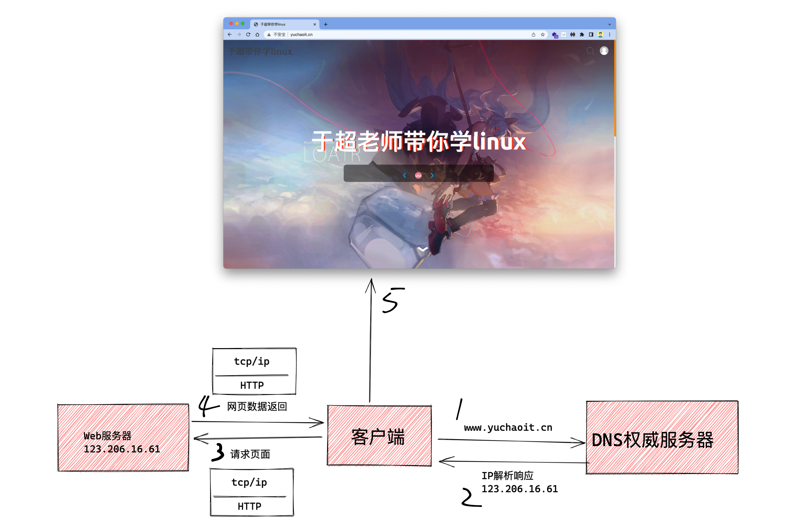</p>
<p>&#x2F00;&#x4E2A;Web&#x670D;&#x52A1;&#x5668;&#x4E5F;&#x88AB;&#x79F0;&#x4E3A;HTTP&#x670D;&#x52A1;&#x5668;&#xFF0C;&#x5B83;&#x901A;&#x8FC7;HTTP&#x534F;&#x8BAE;&#x4E0E;&#x5BA2;&#x6237;&#x7AEF;&#x901A;&#x4FE1;&#x3002;</p>
<p>&#x8FD9;&#x4E2A;&#x5BA2;&#x6237;&#x7AEF;&#x901A;&#x5E38;&#x6307;&#x7684;&#x662F;Web&#x6D4F;&#x89C8;&#x5668;&#x3002; </p>
<h1 id="web&#x670D;&#x52A1;&#x5668;&#x5DE5;&#x4F5C;&#x539F;&#x7406;"><a name="web&#x670D;&#x52A1;&#x5668;&#x5DE5;&#x4F5C;&#x539F;&#x7406;" class="plugin-anchor" href="#web&#x670D;&#x52A1;&#x5668;&#x5DE5;&#x4F5C;&#x539F;&#x7406;"><i class="fa fa-link" aria-hidden="true"></i></a>web&#x670D;&#x52A1;&#x5668;&#x5DE5;&#x4F5C;&#x539F;&#x7406;</h1>
<p>Web&#x670D;&#x52A1;&#x5668;&#x7684;&#x2F2F;&#x4F5C;&#x539F;&#x7406;&#x53EF;&#x4EE5;&#x7B80;&#x5355;&#x5730;&#x5F52;&#x7EB3;&#x4E3A;:</p>
<ul>
<li>&#x5BA2;&#x6237;&#x7AEF;&#x901A;&#x8FC7;TCP/IP&#x534F;&#x8BAE;&#x5EFA;&#x2F74;&#x5230;&#x670D;&#x52A1;&#x5668;&#x7684;TCP&#x8FDE;&#x63A5;</li>
<li>&#x5BA2;&#x6237;&#x7AEF;&#x5411;&#x670D;&#x52A1;&#x5668;&#x53D1;&#x9001;HTTP&#x534F;&#x8BAE;&#x8BF7;&#x6C42;&#x5305;&#xFF0C;&#x8BF7;&#x6C42;&#x670D;&#x52A1;&#x5668;&#x2FA5;&#x7684;&#x8D44;&#x6E90;&#x2F42;&#x6863;</li>
<li>&#x670D;&#x52A1;&#x5668;&#x5411;&#x5BA2;&#x6237;&#x7AEF;&#x53D1;&#x9001;HTTP&#x534F;&#x8BAE;&#x5E94;&#x7B54;&#x5305;&#xFF0C;&#x5982;&#x679C;&#x8BF7;&#x6C42;&#x7684;&#x8D44;&#x6E90;&#x5305;&#x542B;&#x6709;&#x52A8;&#x6001;&#x8BED;&#x2F94;&#x7684;&#x5185;&#x5BB9;&#xFF0C;&#x90A3;&#x4E48;&#x670D;&#x52A1;&#x5668;&#x4F1A;&#x8C03;&#x2F64;&#x52A8;&#x6001;&#x8BED;&#x2F94; &#x7684;&#x89E3;&#x91CA;&#x5F15;&#x64CE;&#x8D1F;&#x8D23;&#x5904;&#x7406;&#x201C; &#x52A8;&#x6001;&#x5185;&#x5BB9;&#x201D;&#xFF0C;&#x5E76;&#x5C06;&#x5904;&#x7406;&#x5F97;&#x5230;&#x7684;&#x6570;&#x636E;&#x8FD4;&#x56DE;&#x7ED9;&#x5BA2;&#x6237;&#x7AEF;</li>
<li>&#x5BA2;&#x6237;&#x7AEF;&#x4E0E;&#x670D;&#x52A1;&#x5668;&#x65AD;&#x5F00;&#x3002;&#x7531;&#x5BA2;&#x6237;&#x7AEF;&#x89E3;&#x91CA;HTML&#x2F42;&#x6863;&#xFF0C;&#x5728;&#x5BA2;&#x6237;&#x7AEF;&#x5C4F;&#x5E55;&#x4E0A;&#x6E32;&#x67D3;&#x56FE;&#x5F62;&#x7ED3;&#x679C;</li>
</ul>
<h1 id="&#x5BA2;&#x6237;&#x7AEF;&#x8BF7;&#x6C42;&#x5230;&#x8FBE;&#x670D;&#x52A1;&#x7AEF;&#x6D41;&#x7A0B;"><a name="&#x5BA2;&#x6237;&#x7AEF;&#x8BF7;&#x6C42;&#x5230;&#x8FBE;&#x670D;&#x52A1;&#x7AEF;&#x6D41;&#x7A0B;" class="plugin-anchor" href="#&#x5BA2;&#x6237;&#x7AEF;&#x8BF7;&#x6C42;&#x5230;&#x8FBE;&#x670D;&#x52A1;&#x7AEF;&#x6D41;&#x7A0B;"><i class="fa fa-link" aria-hidden="true"></i></a>&#x5BA2;&#x6237;&#x7AEF;&#x8BF7;&#x6C42;&#x5230;&#x8FBE;&#x670D;&#x52A1;&#x7AEF;&#x6D41;&#x7A0B;</h1>
<ul>
<li>&#x5F53;&#x5BA2;&#x6237;&#x7AEF;&#x62FF;&#x5230;&#x670D;&#x52A1;&#x7AEF;&#x57DF;&#x540D;&#x5BF9;&#x5E94;&#x7684;ip&#x540E;&#xFF0C;&#x6D4F;&#x89C8;&#x5668;&#x4F1A;&#x4EE5;&#x4E00;&#x4E2A;&#x968F;&#x673A;&#x7AEF;&#x53E3;&#xFF08;1024&lt;&#x968F;&#x673A;&#x7AEF;&#x53E3;&lt;65535&#xFF09;&#x5411;&#x670D;&#x52A1;&#x5668;&#x7684;web&#x7A0B;&#x5E8F;&#xFF08;nginx&#x3001;apache&#xFF09;&#x7684;80&#x7AEF;&#x53E3;&#x53D1;&#x8D77;tcp&#x8FDE;&#x63A5;&#x8BF7;&#x6C42;&#x3002;</li>
<li>&#x8BE5;&#x8BF7;&#x6C42;&#x7ECF;&#x8FC7;&#x590D;&#x6742;&#x7684;&#x7F51;&#x7EDC;&#x73AF;&#x5883;&#x540E;&#x5230;&#x8FBE;&#x670D;&#x52A1;&#x7AEF;&#xFF0C;&#x8FDB;&#x5165;&#x5230;&#x670D;&#x52A1;&#x5668;&#x7684;&#x5BF9;&#x5E94;&#x7684;&#x7F51;&#x5361;&#xFF0C;&#x518D;&#x8FDB;&#x5165;&#x5230;linux&#x5185;&#x6838;&#x7684;tcp/ip&#x534F;&#x8BAE;&#x6808;&#xFF0C;&#x4E00;&#x5C42;&#x4E00;&#x5C42;&#x7684;&#x89E3;&#x5F00;&#x6570;&#x636E;&#x5305;&#xFF0C;&#x751A;&#x81F3;&#x7ECF;&#x8FC7;&#x9632;&#x706B;&#x5899;&#xFF0C;&#x6700;&#x7EC8;&#x5230;&#x8FBE;nginx&#x7A0B;&#x5E8F;&#xFF0C;&#x786E;&#x8BA4;tcp/ip&#x8FDE;&#x63A5;&#x3002;</li>
<li>&#x786E;&#x8BA4;tcp&#x8FDE;&#x63A5;&#x4E4B;&#x540E;&#xFF0C;&#x5BA2;&#x6237;&#x7AEF;&#x7EE7;&#x7EED;&#x53D1;&#x8D77;http&#x8BF7;&#x6C42;&#xFF0C;&#x5982;&#x5E38;&#x89C1;&#x7684;get&#x3001;post&#x8BF7;&#x6C42;&#x65B9;&#x6CD5;&#x3002;</li>
</ul>
<h1 id="&#x5C0F;&#x7ED3;"><a name="&#x5C0F;&#x7ED3;" class="plugin-anchor" href="#&#x5C0F;&#x7ED3;"><i class="fa fa-link" aria-hidden="true"></i></a>&#x5C0F;&#x7ED3;</h1>
<p>&#x56E0;&#x6B64;&#x4F60;&#x4F1A;&#x53D1;&#x73B0;&#xFF0C;web&#x901A;&#x4FE1;&#x539F;&#x7406;&#x4E2D;&#xFF0C;&#x4E3B;&#x8981;&#x5206;&#x4E24;&#x5757;&#x534F;&#x8BAE;&#x7684;&#x5EFA;&#x7ACB;</p>
<ul>
<li>tcp/ip</li>
<li>http</li>
</ul>
<h1 id="tcpip&#x534F;&#x8BAE;"><a name="tcpip&#x534F;&#x8BAE;" class="plugin-anchor" href="#tcpip&#x534F;&#x8BAE;"><i class="fa fa-link" aria-hidden="true"></i></a>TCP/IP&#x534F;&#x8BAE;</h1>
<p>&#x4F20;&#x8F93;&#x63A7;&#x5236;&#x534F;&#x8BAE;&#xFF08;TCP&#xFF0C;Transmission Control Protocol&#xFF09;&#x662F;&#x4E00;&#x79CD;&#x9762;&#x5411;&#x8FDE;&#x63A5;&#x7684;&#x3001;&#x53EF;&#x9760;&#x7684;&#x3001;&#x57FA;&#x4E8E;&#x5B57;&#x8282;&#x6D41;&#x7684;&#x4F20;&#x8F93;&#x5C42;&#x901A;&#x4FE1;&#x534F;&#x8BAE;&#x3002;</p>
<p>&#x7B80;&#x5355;&#x8BF4;&#x5C31;&#x662F;TCP&#x534F;&#x8BAE;&#x5C31;&#x662F;&#x63A7;&#x5236;&#x6570;&#x636E;&#x5305;&#x5728;&#x4F20;&#x8FC7;&#x8FC7;&#x7A0B;&#x4E2D;&#x7684;&#x89C4;&#x8303;&#x683C;&#x5F0F;&#x3002;</p>
<p>IP&#x662F;Internet Protocol&#xFF08;&#x7F51;&#x9645;&#x4E92;&#x8FDE;&#x534F;&#x8BAE;&#xFF09;&#x7684;&#x7F29;&#x5199;&#xFF0C;&#x662F;TCP/IP&#x4F53;&#x7CFB;&#x4E2D;&#x7684;&#x7F51;&#x7EDC;&#x5C42;&#x534F;&#x8BAE;&#x3002;</p>
<p>&#x8BBE;&#x8BA1;IP&#x7684;&#x76EE;&#x7684;&#x662F;&#x63D0;&#x9AD8;&#x7F51;&#x7EDC;&#x7684;&#x53EF;&#x6269;&#x5C55;&#x6027;&#xFF1A;&#x4E00;&#x662F;&#x89E3;&#x51B3;&#x4E92;&#x8054;&#x7F51;&#x95EE;&#x9898;&#xFF0C;&#x5B9E;&#x73B0;&#x5927;&#x89C4;&#x6A21;&#x3001;&#x5F02;&#x6784;&#x7F51;&#x7EDC;&#x7684;&#x4E92;&#x8054;&#x4E92;&#x901A;&#xFF1B;&#x4E8C;&#x662F;&#x5206;&#x5272;&#x9876;&#x5C42;&#x7F51;&#x7EDC;&#x5E94;&#x7528;&#x548C;&#x5E95;&#x5C42;&#x7F51;&#x7EDC;&#x6280;&#x672F;&#x4E4B;&#x95F4;&#x7684;&#x8026;&#x5408;&#x5173;&#x7CFB;&#xFF0C;&#x4EE5;&#x5229;&#x4E8E;&#x4E24;&#x8005;&#x7684;&#x72EC;&#x7ACB;&#x53D1;&#x5C55;&#x3002;</p>
<p>&#x6839;&#x636E;&#x7AEF;&#x5230;&#x7AEF;&#x7684;&#x8BBE;&#x8BA1;&#x539F;&#x5219;&#xFF0C;IP&#x53EA;&#x4E3A;&#x4E3B;&#x673A;&#x63D0;&#x4F9B;&#x4E00;&#x79CD;&#x65E0;&#x8FDE;&#x63A5;&#x3001;&#x4E0D;&#x53EF;&#x9760;&#x7684;&#x3001;&#x5C3D;&#x529B;&#x800C;&#x4E3A;&#x7684;&#x6570;&#x636E;&#x5305;&#x4F20;&#x8F93;&#x670D;&#x52A1;&#x3002;</p>
<blockquote>
<p>TCP/IP&#x534F;&#x8BAE;&#x6307;&#x7684;&#x4E0D;&#x4EC5;&#x4EC5;&#x662F;tcp&#x3001;&#x548C;ip&#x8FD9;&#x4E24;&#x4E2A;&#x534F;&#x8BAE;&#x3002;</p>
<p>&#x800C;&#x662F;&#x7531;FTP&#x3001;SMTP&#x3001;TCP&#x3001;UDP&#x3001;IP&#x7B49;&#x5404;&#x79CD;&#x534F;&#x8BAE;&#x7EC4;&#x6210;&#x7684;&#x534F;&#x8BAE;&#x7C07;&#xFF0C;&#x4F46;&#x662F;TCP/IP&#x6700;&#x6700;&#x5177;&#x6709;&#x4EE3;&#x8868;&#x6027;&#xFF0C;&#x56E0;&#x6B64;&#x4FD7;&#x79F0;TCP/IP&#x534F;&#x8BAE;&#x3002;</p>
</blockquote>
<h1 id="osi&#x4E03;&#x5C42;&#x6A21;&#x578B;"><a name="osi&#x4E03;&#x5C42;&#x6A21;&#x578B;" class="plugin-anchor" href="#osi&#x4E03;&#x5C42;&#x6A21;&#x578B;"><i class="fa fa-link" aria-hidden="true"></i></a>OSI&#x4E03;&#x5C42;&#x6A21;&#x578B;</h1>
<p>&#x63D0;&#x5230;tcp/ip&#x534F;&#x8BAE;&#xFF0C;&#x5C31;&#x4E0D;&#x5F97;&#x4E0D;&#x5B66;&#x4E00;&#x4E0B;OSI&#x4E03;&#x5C42;&#x6A21;&#x578B;&#x3002;</p>
<p>&#x8BF7;&#x770B;&#x672C;&#x6587;</p>
<pre><code>http://apecome.com:9494/02%E7%BD%91%E7%BB%9C%E5%9F%BA%E7%A1%80%E7%AF%87/2-1-OSI%E6%A8%A1%E5%9E%8B%E4%B8%8ETCP%E5%8D%8F%E8%AE%AE.html
</code></pre><p></p>
<h1 id="tcpip&#x4E09;&#x6B21;&#x63E1;&#x624B;"><a name="tcpip&#x4E09;&#x6B21;&#x63E1;&#x624B;" class="plugin-anchor" href="#tcpip&#x4E09;&#x6B21;&#x63E1;&#x624B;"><i class="fa fa-link" aria-hidden="true"></i></a>TCP/IP&#x4E09;&#x6B21;&#x63E1;&#x624B;</h1>
<p>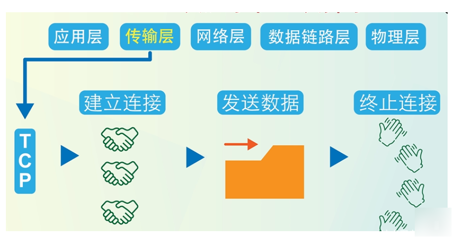</p>
<p>&#x8BB2;&#x89E3; TCP &#x4E09;&#x6B21;&#x63E1;&#x624B;&#x548C;&#x56DB;&#x6B21;&#x63E1;&#x624B;&#x4E4B;&#x524D;&#xFF0C;&#x6211;&#x4EEC;&#x5148;&#x4E86;&#x89E3;&#x4E00;&#x4E0B; TCP &#x548C; UDP &#x8FD9;&#x4E24;&#x4E2A;&#x91CD;&#x91CF;&#x7EA7;&#x7684;&#x4F20;&#x8F93;&#x5C42;&#x534F;&#x8BAE;&#x3002;</p>
<p>&#x1F4A6; <strong>&#x7528;&#x6237;&#x6570;&#x636E;&#x62A5;&#x534F;&#x8BAE; UDP</strong>&#xFF08;User Datagram Protocol&#xFF09;&#xFF1A;</p>
<ul>
<li><strong>UDP &#x5728;&#x4F20;&#x9001;&#x6570;&#x636E;&#x4E4B;&#x524D;&#x4E0D;&#x9700;&#x8981;&#x5148;&#x5EFA;&#x7ACB;&#x8FDE;&#x63A5;</strong>&#xFF0C;&#x8FDC;&#x7A0B;&#x4E3B;&#x673A;&#x5728;&#x6536;&#x5230; UDP &#x62A5;&#x6587;&#x540E;&#xFF0C;&#x4E0D;&#x9700;&#x8981;&#x7ED9;&#x51FA;&#x4EFB;&#x4F55;&#x786E;&#x8BA4;&#x3002;</li>
<li>&#x867D;&#x7136; UDP <strong>&#x4E0D;&#x63D0;&#x4F9B;&#x53EF;&#x9760;&#x4EA4;&#x4ED8;</strong>&#xFF0C;&#x4F46;&#x5728;&#x67D0;&#x4E9B;&#x60C5;&#x51B5;&#x4E0B; UDP &#x786E;&#x662F;&#x4E00;&#x79CD;&#x6700;&#x6709;&#x6548;&#x7684;&#x5DE5;&#x4F5C;&#x65B9;&#x5F0F;&#xFF08;&#x4E00;&#x822C;&#x7528;&#x4E8E;&#x5373;&#x65F6;&#x901A;&#x4FE1;&#xFF09;&#xFF0C;&#x6BD4;&#x5982;&#xFF1A; QQ &#x8BED;&#x97F3;&#x3001; QQ &#x89C6;&#x9891; &#x3001;&#x76F4;&#x64AD;&#x7B49;&#x7B49;</li>
</ul>
<p>&#x1F4A6; <strong>&#x4F20;&#x8F93;&#x63A7;&#x5236;&#x534F;&#x8BAE; TCP</strong>&#xFF08;Transmission Control Protocol&#xFF09;&#xFF1A;</p>
<ul>
<li>TCP &#x63D0;&#x4F9B;<strong>&#x9762;&#x5411;&#x8FDE;&#x63A5;</strong>&#x7684;&#x670D;&#x52A1;&#x3002;&#x5728;&#x4F20;&#x9001;&#x6570;&#x636E;&#x4E4B;&#x524D;&#x5FC5;&#x987B;&#x5148;&#x5EFA;&#x7ACB;&#x8FDE;&#x63A5;&#xFF0C;&#x6570;&#x636E;&#x4F20;&#x9001;&#x7ED3;&#x675F;&#x540E;&#x8981;&#x91CA;&#x653E;&#x8FDE;&#x63A5;&#x3002;</li>
<li>TCP &#x4E0D;&#x63D0;&#x4F9B;&#x5E7F;&#x64AD;&#x6216;&#x591A;&#x64AD;&#x670D;&#x52A1;&#x3002;&#x7531;&#x4E8E; TCP &#x8981;&#x63D0;&#x4F9B;<strong>&#x53EF;&#x9760;</strong>&#x7684;&#xFF0C;&#x9762;&#x5411;&#x8FDE;&#x63A5;&#x7684;&#x4F20;&#x8F93;&#x670D;&#x52A1;&#xFF08;TCP&#x7684;&#x53EF;&#x9760;&#x4F53;&#x73B0;&#x5728;TCP&#x5728;&#x4F20;&#x9012;&#x6570;&#x636E;&#x4E4B;&#x524D;&#xFF0C;&#x4F1A;&#x6709;&#x4E09;&#x6B21;&#x63E1;&#x624B;&#x6765;&#x5EFA;&#x7ACB;&#x8FDE;&#x63A5;&#xFF0C;&#x800C;&#x4E14;&#x5728;&#x6570;&#x636E;&#x4F20;&#x9012;&#x65F6;&#xFF0C;&#x6709;&#x786E;&#x8BA4;&#x3001;&#x7A97;&#x53E3;&#x3001;&#x91CD;&#x4F20;&#x3001;&#x6D41;&#x91CF;&#x63A7;&#x5236;&#x3001;&#x62E5;&#x585E;&#x63A7;&#x5236;&#x673A;&#x5236;&#xFF0C;&#x5728;&#x6570;&#x636E;&#x4F20;&#x5B8C;&#x540E;&#xFF0C;&#x8FD8;&#x4F1A;&#x56DB;&#x6B21;&#x6325;&#x624B;&#x65AD;&#x5F00;&#x8FDE;&#x63A5;&#x7528;&#x6765;&#x8282;&#x7EA6;&#x7CFB;&#x7EDF;&#x8D44;&#x6E90;&#xFF09;&#xFF0C;&#x8FD9;&#x4E0D;&#x4EC5;&#x4F7F;&#x534F;&#x8BAE;&#x6570;&#x636E;&#x5355;&#x5143;&#x7684;&#x9996;&#x90E8;&#x589E;&#x5927;&#x5F88;&#x591A;&#xFF0C;&#x8FD8;&#x8981;&#x5360;&#x7528;&#x8BB8;&#x591A;&#x5904;&#x7406;&#x673A;&#x8D44;&#x6E90;&#x3002;</li>
<li>TCP <strong>&#x4E00;&#x822C;&#x7528;&#x4E8E;&#x6587;&#x4EF6;&#x4F20;&#x8F93;&#x3001;&#x53D1;&#x9001;&#x548C;&#x63A5;&#x6536;&#x90AE;&#x4EF6;&#x3001;&#x8FDC;&#x7A0B;&#x767B;&#x5F55;&#x7B49;&#x573A;&#x666F;</strong>&#x3002;</li>
</ul>
<h2 id="tcp&#x6570;&#x636E;&#x62A5;&#x6587;&#x9996;&#x90E8;&#x683C;&#x5F0F;"><a name="tcp&#x6570;&#x636E;&#x62A5;&#x6587;&#x9996;&#x90E8;&#x683C;&#x5F0F;" class="plugin-anchor" href="#tcp&#x6570;&#x636E;&#x62A5;&#x6587;&#x9996;&#x90E8;&#x683C;&#x5F0F;"><i class="fa fa-link" aria-hidden="true"></i></a>TCP&#x6570;&#x636E;&#x62A5;&#x6587;&#x9996;&#x90E8;&#x683C;&#x5F0F;</h2>
<p>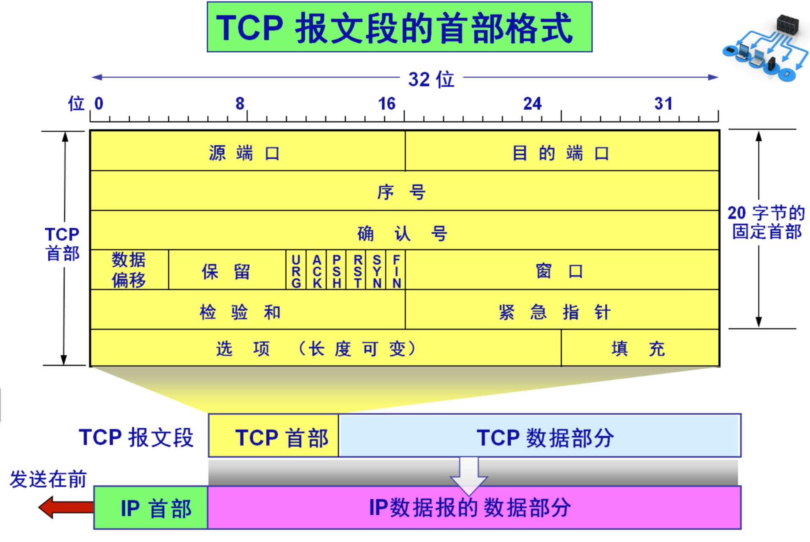</p>
<p>&#x5173;&#x4E8E;TCP/IP&#x6570;&#x636E;&#x62A5;&#x6587;&#x7684;&#x6240;&#x6709;&#x5B57;&#x6BB5;&#x4E0D;&#x9700;&#x8981;&#x8BB0;&#x5FC6;&#xFF0C;&#x53EA;&#x9700;&#x8981;&#x5173;&#x6CE8;&#x5982;&#x4E0B;&#x7684;&#x5173;&#x952E;&#x5B57;&#x5373;&#x53EF;</p>
<h2 id="&#x5173;&#x4E8E;tcp&#x9996;&#x90E8;&#x91CD;&#x8981;&#x5B57;&#x6BB5;&#x7684;&#x89E3;&#x91CA;"><a name="&#x5173;&#x4E8E;tcp&#x9996;&#x90E8;&#x91CD;&#x8981;&#x5B57;&#x6BB5;&#x7684;&#x89E3;&#x91CA;" class="plugin-anchor" href="#&#x5173;&#x4E8E;tcp&#x9996;&#x90E8;&#x91CD;&#x8981;&#x5B57;&#x6BB5;&#x7684;&#x89E3;&#x91CA;"><i class="fa fa-link" aria-hidden="true"></i></a>&#x5173;&#x4E8E;TCP&#x9996;&#x90E8;&#x91CD;&#x8981;&#x5B57;&#x6BB5;&#x7684;&#x89E3;&#x91CA;</h2>
<ul>
<li><p>&#x6E90;&#x7AEF;&#x53E3;&#x3001;&#x76EE;&#x7684;&#x7AEF;&#x53E3;</p>
<ul>
<li>&#x5404;&#x5360; 2 &#x4E2A;&#x5B57;&#x8282;&#xFF0C;&#x5206;&#x522B;&#x5199;&#x5165;&#x6E90;&#x7AEF;&#x53E3;&#x548C;&#x76EE;&#x7684;&#x7AEF;&#x53E3;&#x3002;IP &#x5730;&#x5740; + &#x7AEF;&#x53E3;&#x53F7;&#x5C31;&#x53EF;&#x4EE5;&#x786E;&#x5B9A;&#x4E00;&#x4E2A;&#x8FDB;&#x7A0B;&#x5730;&#x5740;</li>
</ul>
</li>
<li><p><strong>&#x5E8F;&#x53F7;/&#x5E8F;&#x5217;&#x53F7;</strong>&#xFF08;Sequense Number&#xFF09;</p>
<ul>
<li>&#x5728;&#x4E00;&#x4E2A; TCP &#x8FDE;&#x63A5;&#x4E2D;&#x4F20;&#x9001;&#x7684;&#x5B57;&#x8282;&#x6D41;&#x4E2D;&#x7684;&#x6BCF;&#x4E00;&#x4E2A;&#x5B57;&#x8282;&#x90FD;&#x6309;&#x987A;&#x5E8F;&#x7F16;&#x53F7;&#x3002;&#x8BE5;&#x5B57;&#x6BB5;&#x8868;&#x793A;&#x672C;&#x62A5;&#x6587;&#x6BB5;&#x6240;&#x53D1;&#x9001;&#x7684;&#x6570;&#x636E;&#x7684;&#x7B2C;&#x4E00;&#x4E2A;&#x5B57;&#x8282;&#x7684;&#x5E8F;&#x53F7;&#x3002;</li>
<li>&#x4F8B;&#x5982;&#xFF0C;&#x4E00;&#x62A5;&#x6587;&#x6BB5;&#x7684;&#x5E8F;&#x53F7;&#x662F; 101&#xFF0C;&#x5171;&#x6709; 100 &#x5B57;&#x8282;&#x7684;&#x6570;&#x636E;&#x3002;&#xFF08;seq=101&#xFF09;<ul>
<li>&#x8FD9;&#x5C31;&#x8868;&#x660E;&#xFF1A;&#x672C;&#x62A5;&#x6587;&#x6BB5;&#x7684;&#x6570;&#x636E;&#x7684;&#x7B2C;&#x4E00;&#x4E2A;&#x5B57;&#x8282;&#x7684;&#x5E8F;&#x53F7;&#x662F; 101&#xFF0C;&#x6700;&#x540E;&#x4E00;&#x4E2A;&#x5B57;&#x8282;&#x7684;&#x5E8F;&#x53F7;&#x662F; 200&#x3002;</li>
<li>&#x663E;&#x7136;&#xFF0C;&#x4E0B;&#x4E00;&#x4E2A;&#x62A5;&#x6587;&#x6BB5;&#x7684;&#x6570;&#x636E;&#x5E8F;&#x53F7;&#x5E94;&#x5F53;&#x4ECE; 201 &#x5F00;&#x59CB;&#xFF0C;&#x5373;&#x4E0B;&#x4E00;&#x4E2A;&#x62A5;&#x6587;&#x6BB5;&#x7684;&#x5E8F;&#x53F7;&#x5B57;&#x6BB5;&#x503C;&#x5E94;&#x4E3A; 201&#x3002;&#xFF08;seq=201&#xFF09;</li>
</ul>
</li>
</ul>
<p>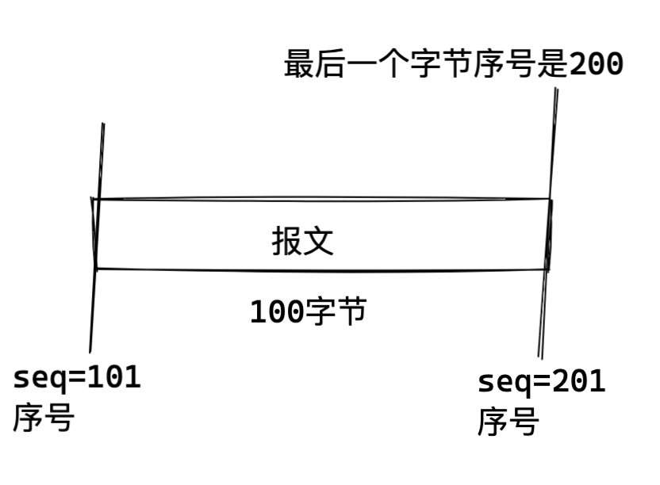</p>
</li>
<li><p><strong>&#x786E;&#x8BA4;&#x53F7; ack</strong>&#xFF08;&#x6CE8;&#x610F;&#x5927;&#x5C0F;&#x5199;&#xFF09;</p>
<ul>
<li>&#x671F;&#x671B;&#x6536;&#x5230;&#x5BF9;&#x65B9;&#x4E0B;&#x4E00;&#x4E2A;&#x62A5;&#x6587;&#x6BB5;&#x7684;&#x7B2C;&#x4E00;&#x4E2A;&#x6570;&#x636E;&#x5B57;&#x8282;&#x7684;&#x5E8F;&#x53F7;&#x3002;</li>
<li>&#x82E5;&#x786E;&#x8BA4;&#x53F7;&#x4E3A;ack=N&#xFF0C;&#x5219;&#x8868;&#x660E;&#xFF1A;&#x5230;&#x5E8F;&#x53F7; N-1 &#x4E3A;&#x6B62;&#x7684;&#x6240;&#x6709;&#x6570;&#x636E;&#x90FD;&#x5DF2;&#x6B63;&#x786E;&#x6536;&#x5230;&#x3002;</li>
</ul>
</li>
</ul>
<h2 id="tcp&#x6807;&#x5FD7;&#x4F4D;&#x89E3;&#x91CA;"><a name="tcp&#x6807;&#x5FD7;&#x4F4D;&#x89E3;&#x91CA;" class="plugin-anchor" href="#tcp&#x6807;&#x5FD7;&#x4F4D;&#x89E3;&#x91CA;"><i class="fa fa-link" aria-hidden="true"></i></a>TCP&#x6807;&#x5FD7;&#x4F4D;&#x89E3;&#x91CA;</h2>
<ul>
<li><p><strong>&#x786E;&#x8BA4; ACK</strong>&#xFF1A;&#x4EC5;&#x5F53; ACK = 1 &#x65F6;&#x786E;&#x8BA4;&#x53F7;&#x5B57;&#x6BB5;&#x624D;&#x6709;&#x6548;&#xFF0C;&#x5F53; ACK = 0 &#x65F6;&#x786E;&#x8BA4;&#x53F7;&#x65E0;&#x6548;&#x3002;TCP &#x89C4;&#x5B9A;&#xFF0C;&#x5728;&#x8FDE;&#x63A5;&#x5EFA;&#x7ACB;&#x540E;&#x6240;&#x6709;&#x4F20;&#x9001;&#x7684;&#x62A5;&#x6587;&#x6BB5;&#x90FD;&#x5FC5;&#x987B;&#x628A; ACK &#x7F6E;&#x4E3A; 1&#x3002;</p>
</li>
<li><p><strong>&#x540C;&#x6B65; SYN</strong></p>
<p>SYN = 1 &#x8868;&#x793A;&#x8FD9;&#x662F;&#x4E00;&#x4E2A;&#x8FDE;&#x63A5;&#x8BF7;&#x6C42;&#x6216;&#x8FDE;&#x63A5;&#x63A5;&#x53D7;&#x62A5;&#x6587;&#x3002;</p>
<p>&#x5F53; SYN = 1 &#x800C; ACK = 0 &#x65F6;&#xFF0C;&#x8868;&#x660E;&#x8FD9;&#x662F;&#x4E00;&#x4E2A;&#x8FDE;&#x63A5;&#x8BF7;&#x6C42;&#x62A5;&#x6587;&#x6BB5;&#x3002;&#x5BF9;&#x65B9;&#x82E5;&#x540C;&#x610F;&#x5EFA;&#x7ACB;&#x8FDE;&#x63A5;&#xFF0C;&#x5219;&#x5E94;&#x5728;&#x54CD;&#x5E94;&#x7684;&#x62A5;&#x6587;&#x6BB5;&#x4E2D;&#x4F7F; SYN = 1 &#x4E14; ACK = 1&#x3002;</p>
</li>
<li><p><strong>&#x7EC8;&#x6B62; FIN</strong>&#xFF1A;&#x7528;&#x6765;&#x91CA;&#x653E;&#x4E00;&#x4E2A;&#x8FDE;&#x63A5;&#x3002;&#x5F53; FIN = 1&#x65F6;&#xFF0C;&#x8868;&#x660E;&#x6B64;&#x62A5;&#x6587;&#x6BB5;&#x7684;&#x53D1;&#x9001;&#x53D1;&#x7684;&#x6570;&#x636E;&#x5DF2;&#x53D1;&#x9001;&#x5B8C;&#x6BD5;&#xFF0C;&#x5E76;&#x8981;&#x6C42;&#x91CA;&#x653E;&#x8FD0;&#x8F93;&#x8FDE;&#x63A5;&#x3002;</p>
</li>
</ul>
<blockquote>
<p>&#x5927;&#x5199;&#x7684;&#x8868;&#x793A;&#x6807;&#x5FD7;&#x4F4D;</p>
<p>&#x5C0F;&#x5199;&#x7684;&#x8868;&#x793A;TCP&#x9996;&#x90E8;&#x5B57;&#x6BB5;</p>
</blockquote>
<h2 id="&#x8BE6;&#x89E3;tcp&#x63E1;&#x624B;&#x3001;&#x6325;&#x624B;"><a name="&#x8BE6;&#x89E3;tcp&#x63E1;&#x624B;&#x3001;&#x6325;&#x624B;" class="plugin-anchor" href="#&#x8BE6;&#x89E3;tcp&#x63E1;&#x624B;&#x3001;&#x6325;&#x624B;"><i class="fa fa-link" aria-hidden="true"></i></a>&#x8BE6;&#x89E3;tcp&#x63E1;&#x624B;&#x3001;&#x6325;&#x624B;</h2>
<p><strong>&#x6700;&#x5F00;&#x59CB;&#x7684;&#x65F6;&#x5019;&#x5BA2;&#x6237;&#x7AEF;&#x548C;&#x670D;&#x52A1;&#x5668;&#x90FD;&#x662F;&#x5904;&#x4E8E;CLOSED&#x72B6;&#x6001;&#x3002;</strong></p>
<p><strong>&#x4E3B;&#x52A8;&#x6253;&#x5F00;&#x8FDE;&#x63A5;&#x7684;&#x4E3A;&#x5BA2;&#x6237;&#x7AEF;&#xFF0C;&#x88AB;&#x52A8;&#x6253;&#x5F00;&#x8FDE;&#x63A5;&#x7684;&#x662F;&#x670D;&#x52A1;&#x5668;&#x3002;</strong></p>
<blockquote>
<p>&#x4F60;&#x5728;&#x6253;&#x5F00;&#x5C0F;&#x7535;&#x5F71;&#x7F51;&#x7AD9;&#x4E4B;&#x524D;&#xFF0C;&#x4F60;&#x548C;&#x7F51;&#x7AD9;&#x662F;&#x6CA1;&#x6709;&#x8054;&#x7CFB;&#x7684;&#xFF0C;&#x5728;&#x4F60;&#x6253;&#x5F00;&#x7F51;&#x9875;&#x4E4B;&#x540E;&#xFF0C;&#x4F60;&#x4EEC;&#x4E4B;&#x95F4;&#x5C31;&#x5EFA;&#x7ACB;&#x4E86;TCP&#x8FDE;&#x63A5;&#x3002;</p>
</blockquote>
<p>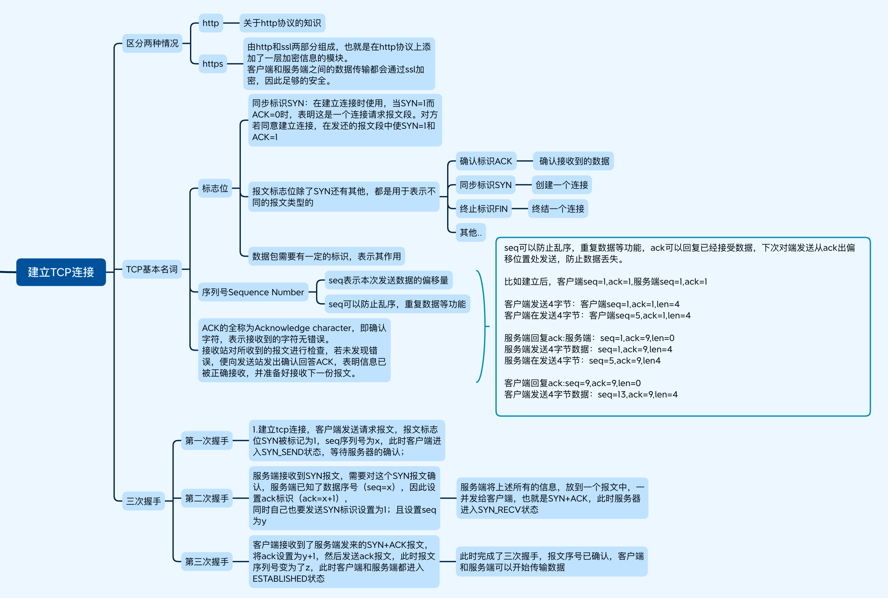</p>
<h3 id="&#x56FE;&#x89E3;&#x4E09;&#x6B21;&#x63E1;&#x624B;&#x771F;&#x7406;"><a name="&#x56FE;&#x89E3;&#x4E09;&#x6B21;&#x63E1;&#x624B;&#x771F;&#x7406;" class="plugin-anchor" href="#&#x56FE;&#x89E3;&#x4E09;&#x6B21;&#x63E1;&#x624B;&#x771F;&#x7406;"><i class="fa fa-link" aria-hidden="true"></i></a>&#x56FE;&#x89E3;&#x4E09;&#x6B21;&#x63E1;&#x624B;(&#x771F;&#x7406;)</h3>
<p>&#x4E09;&#x6B21;&#x63E1;&#x624B;&#x7684;&#x539F;&#x6587;&#x662F; <code>three-way handshake</code>&#xFF0C;&#x6574;&#x4E2A;&#x540D;&#x8BCD;&#x7684;&#x53EF;&#x4EE5;&#x7FFB;&#x8BD1;&#x4E3A;&#xFF1A;<strong>&#x9700;&#x8981;&#x4E09;&#x4E2A;&#x6B65;&#x9AA4;&#x624D;&#x80FD;&#x5EFA;&#x7ACB;&#x63E1;&#x624B;/&#x8FDE;&#x63A5;&#x7684;&#x673A;&#x5236;</strong>&#x3002;&#x5F53;&#x7136;&#xFF0C;&#x4E09;&#x6B21;&#x63E1;&#x624B;&#x4E5F;&#x53EF;&#x4EE5;&#x53EB; <code>three-message handshake</code>&#xFF0C;&#x901A;&#x8FC7;&#x4E09;&#x6761;&#x6D88;&#x606F;&#x6765;&#x5EFA;&#x7ACB;&#x7684;&#x63E1;&#x624B;/&#x8FDE;&#x63A5;&#x3002;</p>
<p>&#x8FDB;&#x884C;&#x4E09;&#x6B21;&#x63E1;&#x624B;&#x7684;&#x4E3B;&#x8981;&#x4F5C;&#x7528;&#x5C31;&#x662F;&#x4E3A;&#x4E86;&#x786E;&#x8BA4;&#x53CC;&#x65B9;&#x7684;&#x63A5;&#x6536;&#x80FD;&#x529B;&#x548C;&#x53D1;&#x9001;&#x80FD;&#x529B;&#x662F;&#x5426;&#x6B63;&#x5E38;&#x3001;&#x6307;&#x5B9A;&#x81EA;&#x5DF1;&#x7684; <strong>&#x521D;&#x59CB;&#x5316;&#x5E8F;&#x5217;&#x53F7;(Init Sequense Number, <code>ISN</code>)</strong> &#x4E3A;&#x540E;&#x9762;&#x7684;&#x53EF;&#x9760;&#x6027;&#x4F20;&#x8F93;&#x505A;&#x51C6;&#x5907;&#x3002;</p>
<p>&#x4E09;&#x6B21;&#x63E1;&#x624B;&#x8FC7;&#x7A0B;&#x5982;&#x4E0B;&#x56FE;&#xFF1A;</p>
<p>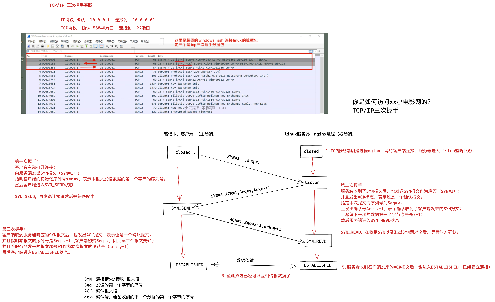</p>
<h2 id="&#x6293;&#x5305;&#x67E5;&#x770B;&#x4E09;&#x6B21;&#x63E1;&#x624B;&#xFF08;&#x771F;&#x7406;&#xFF09;"><a name="&#x6293;&#x5305;&#x67E5;&#x770B;&#x4E09;&#x6B21;&#x63E1;&#x624B;&#xFF08;&#x771F;&#x7406;&#xFF09;" class="plugin-anchor" href="#&#x6293;&#x5305;&#x67E5;&#x770B;&#x4E09;&#x6B21;&#x63E1;&#x624B;&#xFF08;&#x771F;&#x7406;&#xFF09;"><i class="fa fa-link" aria-hidden="true"></i></a>&#x6293;&#x5305;&#x67E5;&#x770B;&#x4E09;&#x6B21;&#x63E1;&#x624B;&#xFF08;&#x771F;&#x7406;&#xFF09;</h2>
<p>&#x9F0E;&#x9F0E;&#x5927;&#x540D;&#x7684;tcp/ip&#x534F;&#x8BAE;&#x7684;&#x4E09;&#x6B21;&#x63E1;&#x624B;&#x3001;&#x4E5F;&#x5C31;&#x662F;&#x5173;&#x4E4E;&#x4E8E;<code>syn&#x3001;syn/ack&#x3001;ack</code>&#x4E09;&#x4E2A;&#x6807;&#x8BC6;&#x4F4D;</p>
<p>tcp&#x662F;&#x4E00;&#x4E2A;&#x53CA;&#x5176;&#x590D;&#x6742;&#x7684;&#x77E5;&#x8BC6;&#x70B9;&#xFF0C;&#x8FD9;&#x91CC;&#x54B1;&#x4EEC;&#x901A;&#x8FC7;wireshare&#x6765;&#x5C3D;&#x91CF;&#x7684;&#x901A;&#x8FC7;&#x5B9E;&#x8DF5;&#xFF0C;&#x7406;&#x89E3;tcp&#x7684;&#x5E8F;&#x5217;&#x53F7;&#x548C;&#x786E;&#x8BA4;&#x53F7;&#x7684;&#x5173;&#x7CFB;&#x3002;</p>
<p>TCP&#x534F;&#x8BAE;&#x6B63;&#x5728;&#x62A5;&#x6587;&#x4E2D;&#x4F7F;&#x7528;&#x4E86;&#x5927;&#x91CF;&#x7684;&#x6807;&#x5FD7;&#x4F4D;&#x6765;&#x63A7;&#x5236;tcp&#x7684;&#x8FDE;&#x63A5;&#x72B6;&#x6001;&#xFF1B;</p>
<p>&#x6700;&#x4E3B;&#x8981;&#x7684;&#x4E09;&#x4E2A;&#x6807;&#x5FD7;&#x4F4D;&#x5982;&#x4E0B;</p>
<ul>
<li>SYN&#x3001;&#x521B;&#x5EFA;&#x4E00;&#x4E2A;&#x8FDE;&#x63A5;</li>
<li>FIN&#x3001;&#x7EC8;&#x6B62;&#x4E00;&#x4E2A;&#x8FDE;&#x63A5;</li>
<li>ACK&#x3001;&#x786E;&#x8BA4;&#x63A5;&#x6536;&#x5230;&#x4E86;&#x6570;&#x636E;</li>
</ul>
<h3 id="&#x7B2C;&#x4E00;&#x6B21;&#x63E1;&#x624B;&#xFF08;syn&#xFF09;"><a name="&#x7B2C;&#x4E00;&#x6B21;&#x63E1;&#x624B;&#xFF08;syn&#xFF09;" class="plugin-anchor" href="#&#x7B2C;&#x4E00;&#x6B21;&#x63E1;&#x624B;&#xFF08;syn&#xFF09;"><i class="fa fa-link" aria-hidden="true"></i></a>&#x7B2C;&#x4E00;&#x6B21;&#x63E1;&#x624B;&#xFF08;SYN&#xFF09;</h3>
<blockquote>
<p>&#x6253;&#x5F00;tcp&#x5C42;&#x7684;&#x6570;&#x636E;&#x5305;&#x4FE1;&#x606F;&#xFF0C;&#x5C55;&#x5F00;TCP&#x7684;&#x6807;&#x5FD7;&#x4F4D;&#x533A;&#x57DF;&#xFF08;flag&#xFF09;&#xFF0C;&#x53EF;&#x4EE5;&#x770B;&#x5230;tcp&#x7528;&#x5230;&#x7684;&#x6240;&#x6709;&#x6807;&#x5FD7;&#x4F4D;&#x3002;</p>
</blockquote>
<p>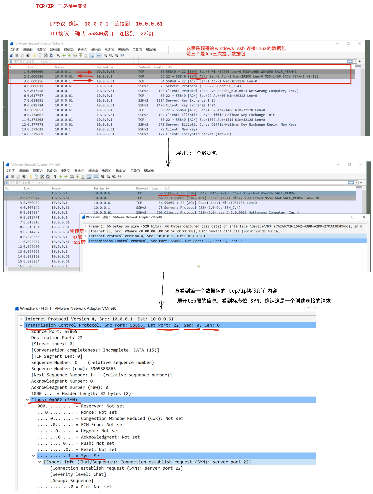</p>
<h3 id="&#x7B2C;&#x4E8C;&#x6B21;&#x63E1;&#x624B;&#xFF08;syn&#x3001;ack&#xFF09;"><a name="&#x7B2C;&#x4E8C;&#x6B21;&#x63E1;&#x624B;&#xFF08;syn&#x3001;ack&#xFF09;" class="plugin-anchor" href="#&#x7B2C;&#x4E8C;&#x6B21;&#x63E1;&#x624B;&#xFF08;syn&#x3001;ack&#xFF09;"><i class="fa fa-link" aria-hidden="true"></i></a>&#x7B2C;&#x4E8C;&#x6B21;&#x63E1;&#x624B;&#xFF08;SYN&#x3001;ACK&#xFF09;</h3>
<p>&#x5F80;&#x4E0B;&#x770B;</p>
<h3 id="&#x7B2C;&#x4E09;&#x6B21;&#x63E1;&#x624B;&#xFF08;ack&#xFF09;"><a name="&#x7B2C;&#x4E09;&#x6B21;&#x63E1;&#x624B;&#xFF08;ack&#xFF09;" class="plugin-anchor" href="#&#x7B2C;&#x4E09;&#x6B21;&#x63E1;&#x624B;&#xFF08;ack&#xFF09;"><i class="fa fa-link" aria-hidden="true"></i></a>&#x7B2C;&#x4E09;&#x6B21;&#x63E1;&#x624B;&#xFF08;ACK&#xFF09;</h3>
<p>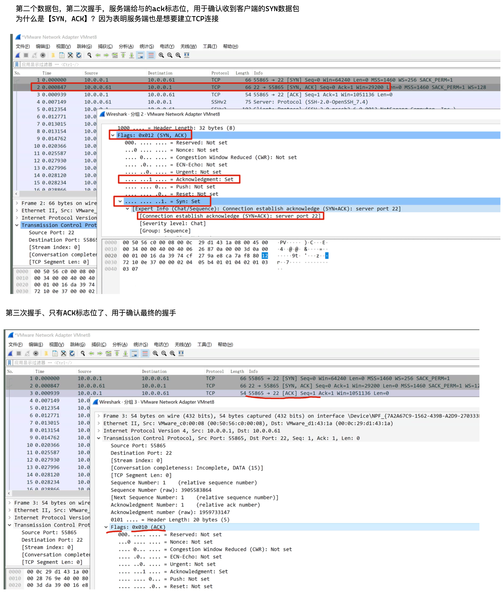</p>
<h1 id="tcpip&#x56DB;&#x6B21;&#x6325;&#x624B;"><a name="tcpip&#x56DB;&#x6B21;&#x6325;&#x624B;" class="plugin-anchor" href="#tcpip&#x56DB;&#x6B21;&#x6325;&#x624B;"><i class="fa fa-link" aria-hidden="true"></i></a>TCP/IP&#x56DB;&#x6B21;&#x6325;&#x624B;</h1>
<p>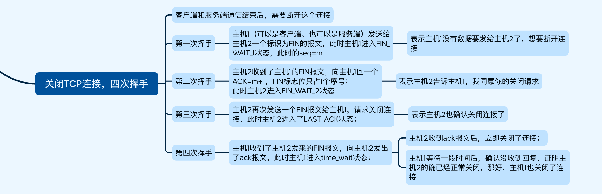</p>
<p>&#x6570;&#x636E;&#x4F20;&#x8F93;&#x5B8C;&#x6BD5;&#x540E;&#xFF0C;&#x53CC;&#x65B9;&#x90FD;&#x53EF;&#x91CA;&#x653E;&#x8FDE;&#x63A5;&#x3002;</p>
<p>&#x6700;&#x5F00;&#x59CB;&#x7684;&#x65F6;&#x5019;&#xFF0C;&#x5BA2;&#x6237;&#x7AEF;&#x548C;&#x670D;&#x52A1;&#x5668;&#x90FD;&#x662F;&#x5904;&#x4E8E;ESTABLISHED&#x72B6;&#x6001;&#xFF0C;&#x7136;&#x540E;&#x5BA2;&#x6237;&#x7AEF;&#x4E3B;&#x52A8;&#x5173;&#x95ED;&#xFF0C;&#x670D;&#x52A1;&#x5668;&#x88AB;&#x52A8;&#x5173;&#x95ED;&#x3002;</p>
<p>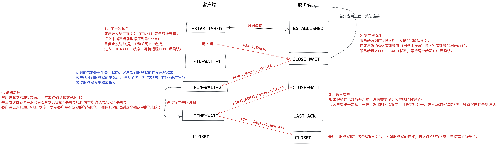</p>
<h2 id="&#x6293;&#x5305;&#x67E5;&#x770B;&#x56DB;&#x6B21;&#x6325;&#x624B;"><a name="&#x6293;&#x5305;&#x67E5;&#x770B;&#x56DB;&#x6B21;&#x6325;&#x624B;" class="plugin-anchor" href="#&#x6293;&#x5305;&#x67E5;&#x770B;&#x56DB;&#x6B21;&#x6325;&#x624B;"><i class="fa fa-link" aria-hidden="true"></i></a>&#x6293;&#x5305;&#x67E5;&#x770B;&#x56DB;&#x6B21;&#x6325;&#x624B;</h2>
<h3 id="1fin&#x3001;"><a name="1fin&#x3001;" class="plugin-anchor" href="#1fin&#x3001;"><i class="fa fa-link" aria-hidden="true"></i></a>1.FIN&#x3001;</h3>
<h3 id="2ack&#x3001;"><a name="2ack&#x3001;" class="plugin-anchor" href="#2ack&#x3001;"><i class="fa fa-link" aria-hidden="true"></i></a>2.ACK&#x3001;</h3>
<h3 id="3fin"><a name="3fin" class="plugin-anchor" href="#3fin"><i class="fa fa-link" aria-hidden="true"></i></a>3.FIN</h3>
<h3 id="4ack"><a name="4ack" class="plugin-anchor" href="#4ack"><i class="fa fa-link" aria-hidden="true"></i></a>4.ACK</h3>
<p>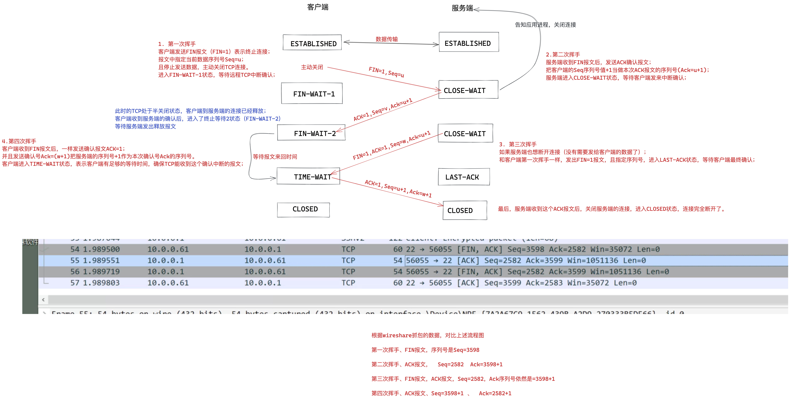</p>
<h1 id="tcp&#x8FDE;&#x63A5;&#x72B6;&#x6001;&#x62A5;&#x6587;"><a name="tcp&#x8FDE;&#x63A5;&#x72B6;&#x6001;&#x62A5;&#x6587;" class="plugin-anchor" href="#tcp&#x8FDE;&#x63A5;&#x72B6;&#x6001;&#x62A5;&#x6587;"><i class="fa fa-link" aria-hidden="true"></i></a>TCP&#x8FDE;&#x63A5;&#x72B6;&#x6001;&#x62A5;&#x6587;</h1>
<p>&#x9762;&#x8BD5;&#x65F6;&#x5019;&#x62FF;&#x51FA;&#x6765;&#x80CC;&#x8BF5;&#x5373;&#x53EF;</p>
<pre><code>CLOSE &#x6CA1;&#x6709;&#x4EFB;&#x4F55;&#x8FDE;&#x63A5;&#x72B6;&#x6001;
LISTEN &#x76D1;&#x542C;&#x72B6;&#x6001;&#x3001;&#x7B49;&#x5F85;&#x6765;&#x81EA;TCP&#x7684;&#x8FDE;&#x63A5;&#x8BF7;&#x6C42;
SYN-SENT &#x53D1;&#x9001;&#x8FDE;&#x63A5;&#x8BF7;&#x6C42;&#x540E;&#xFF0C;&#x7B49;&#x5F85;&#x5BF9;&#x65B9;&#x786E;&#x8BA4;
SYN-RECEIVED &#x6536;&#x5230;&#x3001;&#x53D1;&#x9001;&#x4E00;&#x4E2A;&#x8FDE;&#x63A5;&#x8BF7;&#x6C42;&#x540E;&#xFF0C;&#x7B49;&#x5F85;&#x5BF9;&#x65B9;&#x786E;&#x8BA4;
ESTABLISHED   &#x4EE3;&#x8868;&#x4F20;&#x8F93;&#x8FDE;&#x63A5;&#x5DF2;&#x7ECF;&#x5EFA;&#x7ACB;&#xFF0C;&#x53CC;&#x65B9;&#x8FDB;&#x5165;&#x6570;&#x636E;&#x4F20;&#x8F93;&#x72B6;&#x6001;
FIN-WAIT-1         &#x4E3B;&#x52A8;&#x5173;&#x95ED;1&#xFF0C;&#x4E3B;&#x673A;&#x5DF2;&#x53D1;&#x9001;&#x5173;&#x95ED;&#x8FDE;&#x63A5;&#x8BF7;&#x6C42;&#xFF0C;&#x7B49;&#x5F85;&#x5BF9;&#x65B9;&#x786E;&#x8BA4;
FIN-WAIT-2        &#x4E3B;&#x52A8;&#x5173;&#x95ED;2&#xFF0C;&#x4E3B;&#x673A;&#x5DF2;&#x6536;&#x5230;&#x5BF9;&#x65B9;&#x5173;&#x95ED;&#x4F20;&#x8F93;&#x8FDE;&#x63A5;&#x7684;&#x786E;&#x8BA4;&#xFF0C;&#x7B49;&#x5F85;&#x5BF9;&#x65B9;&#x53D1;&#x9001;&#x5173;&#x95ED;&#x4F20;&#x8F93;&#x8FDE;&#x63A5;&#x8BF7;&#x6C42;

TIME-WAIT &#x5B8C;&#x6210;&#x53CC;&#x5411;&#x4F20;&#x8F93;&#x8FDE;&#x63A5;&#x5173;&#x95ED;&#xFF0C;&#x7B49;&#x5F85;&#x670D;&#x52A1;&#x7AEF;&#x6700;&#x7EC8;&#x786E;&#x8BA4;
CLOSE-WAIT &#x88AB;&#x52A8;&#x5173;&#x95ED;&#x8FDE;&#x63A5;&#xFF0C;&#x6536;&#x5230;&#x5BF9;&#x65B9;&#x53D1;&#x6765;&#x7684;&#x5173;&#x95ED;&#x8FDE;&#x63A5;&#x8BF7;&#x6C42;&#xFF0C;&#x4E14;&#x5DF2;&#x7ECF;&#x786E;&#x8BA4;&#x3002;
LAST-ACK  &#x88AB;&#x52A8;&#x5173;&#x95ED;&#xFF0C;&#x7B49;&#x5F85;&#x6700;&#x540E;&#x4E00;&#x4E2A;&#x5173;&#x95ED;&#x4F20;&#x8F93;&#x8FDE;&#x63A5;&#x7684;&#x786E;&#x8BA4;&#x3002;
CLOSE        &#x53CC;&#x65B9;&#x540C;&#x65F6;&#x786E;&#x8BA4;&#x4E86;&#x5173;&#x95ED;&#x4F20;&#x8F93;&#x8FDE;&#x63A5;
</code></pre><h1 id="&#x5E38;&#x7528;&#x7684;&#x719F;&#x77E5;&#x7AEF;&#x53E3;&#x53F7;"><a name="&#x5E38;&#x7528;&#x7684;&#x719F;&#x77E5;&#x7AEF;&#x53E3;&#x53F7;" class="plugin-anchor" href="#&#x5E38;&#x7528;&#x7684;&#x719F;&#x77E5;&#x7AEF;&#x53E3;&#x53F7;"><i class="fa fa-link" aria-hidden="true"></i></a>&#x5E38;&#x7528;&#x7684;&#x719F;&#x77E5;&#x7AEF;&#x53E3;&#x53F7;</h1>
<table>
<thead>
<tr>
<th>&#x5E94;&#x7528;&#x7A0B;&#x5E8F;</th>
<th>FTP</th>
<th>TFTP</th>
<th>TELNET</th>
<th>SMTP</th>
<th>DNS</th>
<th>HTTP</th>
<th>SSH</th>
<th>MYSQL</th>
</tr>
</thead>
<tbody>
<tr>
<td>&#x719F;&#x77E5;&#x7AEF;&#x53E3;</td>
<td>21,20</td>
<td>69</td>
<td>23</td>
<td>25</td>
<td>53</td>
<td>80</td>
<td>22</td>
<td>3306</td>
</tr>
<tr>
<td>&#x4F20;&#x8F93;&#x5C42;&#x534F;&#x8BAE;</td>
<td>TCP</td>
<td>UDP</td>
<td>TCP</td>
<td>TCP</td>
<td>UDP</td>
<td>TCP</td>
<td>TCP</td>
<td>TCP</td>
</tr>
</tbody>
</table>
<h1 id="tcp&#x4E0E;&#x5957;&#x63A5;&#x5B57;socket"><a name="tcp&#x4E0E;&#x5957;&#x63A5;&#x5B57;socket" class="plugin-anchor" href="#tcp&#x4E0E;&#x5957;&#x63A5;&#x5B57;socket"><i class="fa fa-link" aria-hidden="true"></i></a>TCP&#x4E0E;&#x5957;&#x63A5;&#x5B57;(socket)</h1>
<p>&#x901A;&#x8FC7;&#x524D;&#x9762;&#x5BF9;OSI&#x7F51;&#x7EDC;&#x6A21;&#x578B;&#x7684;&#x5B66;&#x4E60;&#xFF0C;&#x6211;&#x4EEC;&#x77E5;&#x9053;&#x4E86;&#x5728;&#x7F51;&#x7EDC;&#x5C42;&#x4E2D;&#x53EF;&#x4EE5;&#x901A;&#x8FC7;IP&#x5730;&#x5740;&#x5B9E;&#x73B0;&#x4E24;&#x4E2A;&#x673A;&#x5668;&#x4E4B;&#x95F4;&#x7684;&#x901A;&#x4FE1;&#x3002;</p>
<p>&#x4F46;&#x662F;&#x8FD9;&#x5E76;&#x4E0D;&#x5177;&#x4F53;&#xFF0C;&#x56E0;&#x4E3A;&#xFF0C;&#x771F;&#x6B63;&#x8FDB;&#x884C;&#x901A;&#x4FE1;&#x7684;&#x5B9E;&#x4F53;&#x662F;&#x5728;&#x4E3B;&#x673A;&#x4E2D;&#x7684;&#x8FDB;&#x7A0B;&#xFF0C;&#x662F;&#x4E00;&#x4E2A;&#x4E3B;&#x673A;&#x4E2D;&#x7684;&#x4E00;&#x4E2A;&#x8FDB;&#x7A0B;&#x4E0E;&#x53E6;&#x5916;&#x4E00;&#x4E2A;&#x4E3B;&#x673A;&#x4E2D;&#x7684;&#x4E00;&#x4E2A;&#x8FDB;&#x7A0B;&#x5728;&#x4EA4;&#x6362;&#x6570;&#x636E;&#x3002;</p>
<blockquote>
<p>&#x4E3A;&#x4EC0;&#x4E48;&#x5FC5;&#x987B;&#x662F;TCP/IP&#x4FE9;&#x534F;&#x8BAE;&#x7684;&#x7ED3;&#x5408;&#xFF1F;</p>
<p>&#x56E0;&#x4E3A;</p>
</blockquote>
<p>IP&#x534F;&#x8BAE;&#x867D;&#x7136;&#x80FD;&#x628A;&#x6570;&#x636E;&#x62A5;&#x6587;&#x9001;&#x5230;&#x76EE;&#x7684;&#x4E3B;&#x673A;&#xFF0C;&#x4F46;&#x662F;&#x5E76;&#x6CA1;&#x6709;&#x4EA4;&#x4ED8;&#x7ED9;&#x4E3B;&#x673A;&#x7684;&#x5177;&#x4F53;&#x5E94;&#x7528;&#x8FDB;&#x7A0B;&#x3002;</p>
<p>&#x800C;&#x7AEF;&#x5230;&#x7AEF;&#x7684;&#x901A;&#x4FE1;&#x624D;&#x5E94;&#x8BE5;&#x662F;&#x5E94;&#x7528;&#x8FDB;&#x7A0B;&#x4E4B;&#x95F4;&#x7684;&#x901A;&#x4FE1;&#xFF0C;&#x4E5F;&#x5C31;&#x662F;port&#x5BF9;port&#x3002;</p>
<p>&#x56E0;&#x6B64;&#x5FC5;&#x987B;&#x662F;tcp+ip&#x534F;&#x8BAE;&#x7684;&#x7EC4;&#x5408;&#xFF0C;&#x624D;&#x662F;&#x4E00;&#x4E2A;&#x53EF;&#x7528;&#x7684;&#x8FDE;&#x63A5;&#x3002;</p>
<blockquote>
<p>TCP&#x628A;&#x8FDE;&#x63A5;&#x4F5C;&#x4E3A;&#x6700;&#x57FA;&#x672C;&#x7684;&#x5BF9;&#x8C61;&#xFF0C;&#x6BCF;&#x4E00;&#x6761;TCP&#x8FDE;&#x63A5;&#x90FD;&#x6709;&#x4E24;&#x4E2A;&#x7AEF;&#x70B9;&#xFF0C;&#x8FD9;&#x79CD;&#x7AEF;&#x70B9;&#x6211;&#x4EEC;&#x53EB;&#x4F5C;&#x5957;&#x63A5;&#x5B57;&#xFF08;socket&#xFF09;&#xFF0C;&#x5B83;&#x7684;&#x5B9A;&#x4E49;&#x4E3A;&#x7AEF;&#x53E3;&#x53F7;&#x62FC;&#x63A5;&#x5230;IP&#x5730;&#x5740;&#x5373;&#x6784;&#x6210;&#x4E86;&#x5957;&#x63A5;&#x5B57;</p>
<p>&#x4F8B;&#x5982;&#xFF0C;&#x82E5;IP&#x5730;&#x5740;&#x4E3A;192.3.4.16 &#x800C;&#x7AEF;&#x53E3;&#x53F7;&#x4E3A;80&#xFF0C;&#x90A3;&#x4E48;&#x5F97;&#x5230;&#x7684;&#x5957;&#x63A5;&#x5B57;&#x4E3A;192.3.4.16:80</p>
</blockquote>
<h2 id="&#x7F51;&#x7EDC;&#x5957;&#x63A5;&#x5B57;&#x7684;&#x5E94;&#x7528;"><a name="&#x7F51;&#x7EDC;&#x5957;&#x63A5;&#x5B57;&#x7684;&#x5E94;&#x7528;" class="plugin-anchor" href="#&#x7F51;&#x7EDC;&#x5957;&#x63A5;&#x5B57;&#x7684;&#x5E94;&#x7528;"><i class="fa fa-link" aria-hidden="true"></i></a>&#x7F51;&#x7EDC;&#x5957;&#x63A5;&#x5B57;&#x7684;&#x5E94;&#x7528;</h2>
<p>&#x4E0A;&#x9762;&#x8BF4;&#x4E86;socket&#x5957;&#x63A5;&#x5B57;&#xFF0C;&#x5C31;&#x662F;ip+port&#xFF0C;&#x5177;&#x4F53;&#x7684;&#x8868;&#x73B0;&#x4E3A;&#x5982;</p>
<p>mysql&#x670D;&#x52A1;&#x7684;&#x8FD0;&#x884C;</p>
<pre><code>172.16.1.51:3306
</code></pre><p>nginx&#x670D;&#x52A1;&#x7684;&#x8FD0;&#x884C;</p>
<pre><code>172.16.1.7:80
</code></pre><h2 id="&#x672C;&#x5730;&#x5957;&#x63A5;&#x5B57;&#x7684;&#x5E94;&#x7528;"><a name="&#x672C;&#x5730;&#x5957;&#x63A5;&#x5B57;&#x7684;&#x5E94;&#x7528;" class="plugin-anchor" href="#&#x672C;&#x5730;&#x5957;&#x63A5;&#x5B57;&#x7684;&#x5E94;&#x7528;"><i class="fa fa-link" aria-hidden="true"></i></a>&#x672C;&#x5730;&#x5957;&#x63A5;&#x5B57;&#x7684;&#x5E94;&#x7528;</h2>
<p>&#x90E8;&#x7F72;&#x4E00;&#x4E9B;&#x5E94;&#x7528;&#xFF0C;&#x5982;django&#x4E5F;&#x53EF;&#x4EE5;&#x8BBE;&#x7F6E;&#x4E3A;&#x672C;&#x5730;socket&#x5957;&#x63A5;&#x5B57;&#x6587;&#x4EF6;&#x5F62;&#x5F0F;&#xFF0C;&#x800C;&#x975E;ip+port&#x7684;&#x7F51;&#x7EDC;socket&#x5F62;&#x5F0F;&#x3002;&#x8FD9;&#x4E2A;&#x4EE5;&#x540E;&#x5B66;&#x4E60;nginx&#x90E8;&#x7F72;&#x518D;&#x8BF4;&#x3002;</p>
<p>&#x603B;&#x4E4B;&#x3001;socket&#x90FD;&#x662F;&#x80FD;&#x591F;&#x5177;&#x4F53;&#x5B9A;&#x4F4D;&#x5230;&#x4E00;&#x4E2A;&#x5E94;&#x7528;&#x8FDB;&#x7A0B;&#xFF0C;&#x83B7;&#x53D6;&#x6570;&#x636E;&#x3002;</p>
<pre><code>&#x4F8B;&#x5982;mysql&#x670D;&#x52A1;&#x7AEF;&#x7684;&#x542F;&#x52A8;&#xFF0C;&#x6709;&#x4E24;&#x79CD;&#x65B9;&#x5F0F;&#x5F62;&#x5F0F;

1.&#x8FDC;&#x7A0B;&#x7684;&#x901A;&#x8FC7;&#x7F51;&#x7EDC;&#x8FDE;&#x63A5;TCP/IP  &#xFF0C;&#x8FDB;&#x884C; &#x5982;123.206.16.61:3306&#x8BBF;&#x95EE;

2.&#x672C;&#x5730;&#x8FDB;&#x7A0B;&#x8FDE;&#x63A5;&#xFF0C;&#x6BD4;TCP&#x66F4;&#x5FEB;&#xFF0C;&#x4F7F;&#x7528;unix domain socket&#x4F5C;&#x4E3A;&#x901A;&#x4FE1;&#x8F7D;&#x4F53;&#x3002;

&#x8FD9;&#x4E2A;&#x7B49;&#x5B66;&#x4E60;mysql&#x65F6;&#x5019;&#xFF0C;&#x4E8E;&#x8D85;&#x8001;&#x5E08;&#x518D;&#x8FDB;&#x884C;&#x8BB2;&#x89E3;&#x3002;&#x672C;&#x6B21;&#x7406;&#x89E3;&#x6982;&#x5FF5;&#x5373;&#x53EF;&#x3002;
</code></pre><p>&#x81F3;&#x6B64;&#xFF0C;&#x5173;&#x4E8E;&#x7F51;&#x7EDC;&#x8FDE;&#x63A5;&#x7684;TCP&#x539F;&#x7406;&#x7ED3;&#x675F;&#xFF0C;&#x5F80;&#x4E0B;&#x5C31;&#x662F;HTTP&#x5E94;&#x7528;&#x5C42;&#x7684;&#x534F;&#x8BAE;&#x4E86;&#x3002;</p>
<h1 id="http&#x534F;&#x8BAE;"><a name="http&#x534F;&#x8BAE;" class="plugin-anchor" href="#http&#x534F;&#x8BAE;"><i class="fa fa-link" aria-hidden="true"></i></a>HTTP&#x534F;&#x8BAE;</h1>
<h2 id="http&#x534F;&#x8BAE;&#x7B80;&#x4ECB;"><a name="http&#x534F;&#x8BAE;&#x7B80;&#x4ECB;" class="plugin-anchor" href="#http&#x534F;&#x8BAE;&#x7B80;&#x4ECB;"><i class="fa fa-link" aria-hidden="true"></i></a>HTTP&#x534F;&#x8BAE;&#x7B80;&#x4ECB;</h2>
<pre><code>&#x8D85;&#x6587;&#x672C;&#x4F20;&#x8F93;&#x534F;&#x8BAE;&#xFF08;&#x82F1;&#x6587;&#xFF1A;**H**yper**T**ext **T**ransfer **P**rotocol&#xFF0C;&#x7F29;&#x5199;&#xFF1A;HTTP&#xFF09;&#x662F;&#x4E00;&#x79CD;&#x7528;&#x4E8E;&#x5206;&#x5E03;&#x5F0F;&#x3001;&#x534F;&#x4F5C;&#x5F0F;&#x548C;&#x8D85;&#x5A92;&#x4F53;&#x4FE1;&#x606F;&#x7CFB;&#x7EDF;&#x7684;&#x5E94;&#x7528;&#x5C42;&#x534F;&#x8BAE;&#x3002;HTTP&#x662F;&#x4E07;&#x7EF4;&#x7F51;&#x7684;&#x6570;&#x636E;&#x901A;&#x4FE1;&#x7684;&#x57FA;&#x7840;&#x3002;

HTTP&#x7684;&#x53D1;&#x5C55;&#x662F;&#x7531;&#x8482;&#x59C6;&#xB7;&#x4F2F;&#x7EB3;&#x65AF;-&#x674E;&#x4E8E;1989&#x5E74;&#x5728;&#x6B27;&#x6D32;&#x6838;&#x5B50;&#x7814;&#x7A76;&#x7EC4;&#x7EC7;&#xFF08;CERN&#xFF09;&#x6240;&#x53D1;&#x8D77;&#x3002;HTTP&#x7684;&#x6807;&#x51C6;&#x5236;&#x5B9A;&#x7531;&#x4E07;&#x7EF4;&#x7F51;&#x534F;&#x4F1A;&#xFF08;World Wide Web Consortium&#xFF0C;W3C&#xFF09;&#x548C;&#x4E92;&#x8054;&#x7F51;&#x5DE5;&#x7A0B;&#x4EFB;&#x52A1;&#x7EC4;&#xFF08;Internet Engineering Task Force&#xFF0C;IETF&#xFF09;&#x8FDB;&#x884C;&#x534F;&#x8C03;&#xFF0C;&#x6700;&#x7EC8;&#x53D1;&#x5E03;&#x4E86;&#x4E00;&#x7CFB;&#x5217;&#x7684;RFC&#xFF0C;&#x5176;&#x4E2D;&#x6700;&#x8457;&#x540D;&#x7684;&#x662F;1999&#x5E74;6&#x6708;&#x516C;&#x5E03;&#x7684; RFC 2616&#xFF0C;&#x5B9A;&#x4E49;&#x4E86;HTTP&#x534F;&#x8BAE;&#x4E2D;&#x73B0;&#x4ECA;&#x5E7F;&#x6CDB;&#x4F7F;&#x7528;&#x7684;&#x4E00;&#x4E2A;&#x7248;&#x672C;&#x2014;&#x2014;HTTP 1.1&#x3002;

2014&#x5E74;12&#x6708;&#xFF0C;&#x4E92;&#x8054;&#x7F51;&#x5DE5;&#x7A0B;&#x4EFB;&#x52A1;&#x7EC4;&#xFF08;IETF&#xFF09;&#x7684;Hypertext Transfer Protocol Bis&#xFF08;httpbis&#xFF09;&#x5DE5;&#x4F5C;&#x5C0F;&#x7EC4;&#x5C06;HTTP/2&#x6807;&#x51C6;&#x63D0;&#x8BAE;&#x9012;&#x4EA4;&#x81F3;IESG&#x8FDB;&#x884C;&#x8BA8;&#x8BBA;&#xFF0C;&#x4E8E;2015&#x5E74;2&#x6708;17&#x65E5;&#x88AB;&#x6279;&#x51C6;&#x3002; HTTP/2&#x6807;&#x51C6;&#x4E8E;2015&#x5E74;5&#x6708;&#x4EE5;RFC 7540&#x6B63;&#x5F0F;&#x53D1;&#x8868;&#xFF0C;&#x53D6;&#x4EE3;HTTP 1.1&#x6210;&#x4E3A;HTTP&#x7684;&#x5B9E;&#x73B0;&#x6807;&#x51C6;&#x3002;
</code></pre><h2 id="http&#x534F;&#x8BAE;&#x6982;&#x8FF0;"><a name="http&#x534F;&#x8BAE;&#x6982;&#x8FF0;" class="plugin-anchor" href="#http&#x534F;&#x8BAE;&#x6982;&#x8FF0;"><i class="fa fa-link" aria-hidden="true"></i></a>HTTP&#x534F;&#x8BAE;&#x6982;&#x8FF0;</h2>
<p>HTTP&#x662F;&#x4E00;&#x4E2A;&#x5BA2;&#x6237;&#x7AEF;&#x7EC8;&#x7AEF;&#xFF08;&#x7528;&#x6237;&#xFF09;&#x548C;&#x670D;&#x52A1;&#x5668;&#x7AEF;&#xFF08;&#x7F51;&#x7AD9;&#xFF09;&#x8BF7;&#x6C42;&#x548C;&#x5E94;&#x7B54;&#x7684;&#x6807;&#x51C6;&#xFF08;TCP&#xFF09;&#x3002;</p>
<ul>
<li><p>&#x901A;&#x8FC7;&#x4F7F;&#x7528;&#x7F51;&#x9875;&#x6D4F;&#x89C8;&#x5668;&#x3001;&#x7F51;&#x7EDC;&#x722C;&#x866B;&#x6216;&#x8005;&#x5176;&#x5B83;&#x7684;&#x5DE5;&#x5177;&#xFF0C;&#x5BA2;&#x6237;&#x7AEF;&#x53D1;&#x8D77;&#x4E00;&#x4E2A;HTTP&#x8BF7;&#x6C42;&#x5230;&#x670D;&#x52A1;&#x5668;&#x4E0A;&#x6307;&#x5B9A;&#x7AEF;&#x53E3;&#xFF08;&#x9ED8;&#x8BA4;&#x7AEF;&#x53E3;&#x4E3A;80&#xFF09;&#x3002;</p>
</li>
<li><p>&#x6211;&#x4EEC;&#x79F0;&#x8FD9;&#x4E2A;&#x5BA2;&#x6237;&#x7AEF;&#x4E3A;&#x7528;&#x6237;&#x4EE3;&#x7406;&#x7A0B;&#x5E8F;&#xFF08;user agent&#xFF09;&#x3002;</p>
</li>
<li><p>&#x5E94;&#x7B54;&#x7684;&#x670D;&#x52A1;&#x5668;&#x4E0A;&#x5B58;&#x50A8;&#x7740;&#x4E00;&#x4E9B;&#x8D44;&#x6E90;&#xFF0C;&#x6BD4;&#x5982;HTML&#x6587;&#x4EF6;&#x548C;&#x56FE;&#x50CF;&#x3002;&#x6211;&#x4EEC;&#x79F0;&#x8FD9;&#x4E2A;&#x5E94;&#x7B54;&#x670D;&#x52A1;&#x5668;&#x4E3A;&#x6E90;&#x670D;&#x52A1;&#x5668;&#xFF08;origin server&#xFF09;&#x3002;</p>
</li>
<li><p>&#x5728;&#x7528;&#x6237;&#x4EE3;&#x7406;&#x548C;&#x6E90;&#x670D;&#x52A1;&#x5668;&#x4E2D;&#x95F4;&#x53EF;&#x80FD;&#x5B58;&#x5728;&#x591A;&#x4E2A;&#x201C;&#x4E2D;&#x95F4;&#x5C42;&#x201D;&#xFF0C;&#x6BD4;&#x5982;&#x4EE3;&#x7406;&#x670D;&#x52A1;&#x5668;&#x3001;&#x7F51;&#x5173;&#x6216;&#x8005;&#x96A7;&#x9053;&#xFF08;tunnel&#xFF09;&#x3002;</p>
</li>
<li>&#x901A;&#x5E38;&#xFF0C;&#x7531;HTTP&#x5BA2;&#x6237;&#x7AEF;&#x53D1;&#x8D77;&#x4E00;&#x4E2A;&#x8BF7;&#x6C42;&#xFF0C;&#x521B;&#x5EFA;&#x4E00;&#x4E2A;&#x5230;&#x670D;&#x52A1;&#x5668;&#x6307;&#x5B9A;&#x7AEF;&#x53E3;&#xFF08;&#x9ED8;&#x8BA4;&#x662F;80&#x7AEF;&#x53E3;&#xFF09;&#x7684;TCP&#x8FDE;&#x63A5;&#x3002;</li>
<li>HTTP&#x670D;&#x52A1;&#x5668;&#x5219;&#x5728;&#x90A3;&#x4E2A;&#x7AEF;&#x53E3;&#x76D1;&#x542C;&#x5BA2;&#x6237;&#x7AEF;&#x7684;&#x8BF7;&#x6C42;&#x3002;&#x4E00;&#x65E6;&#x6536;&#x5230;&#x8BF7;&#x6C42;&#xFF0C;&#x670D;&#x52A1;&#x5668;&#x4F1A;&#x5411;&#x5BA2;&#x6237;&#x7AEF;&#x8FD4;&#x56DE;&#x4E00;&#x4E2A;&#x72B6;&#x6001;&#xFF0C;&#x6BD4;&#x5982;&quot;HTTP/1.1 200 OK&quot;&#xFF0C;&#x4EE5;&#x53CA;&#x8FD4;&#x56DE;&#x7684;&#x5185;&#x5BB9;&#xFF0C;&#x5982;&#x8BF7;&#x6C42;&#x7684;&#x6587;&#x4EF6;&#x3001;&#x9519;&#x8BEF;&#x6D88;&#x606F;&#x3001;&#x6216;&#x8005;&#x5176;&#x5B83;&#x4FE1;&#x606F;&#x3002;</li>
</ul>
<h2 id="http&#x5DE5;&#x4F5C;&#x539F;&#x7406;"><a name="http&#x5DE5;&#x4F5C;&#x539F;&#x7406;" class="plugin-anchor" href="#http&#x5DE5;&#x4F5C;&#x539F;&#x7406;"><i class="fa fa-link" aria-hidden="true"></i></a>HTTP&#x5DE5;&#x4F5C;&#x539F;&#x7406;</h2>
<p>HTTP&#x534F;&#x8BAE;&#x5B9A;&#x4E49;Web&#x5BA2;&#x6237;&#x7AEF;&#x5982;&#x4F55;&#x4ECE;Web&#x670D;&#x52A1;&#x5668;&#x8BF7;&#x6C42;Web&#x9875;&#x9762;&#xFF0C;&#x4EE5;&#x53CA;&#x670D;&#x52A1;&#x5668;&#x5982;&#x4F55;&#x628A;Web&#x9875;&#x9762;&#x4F20;&#x9001;&#x7ED9;&#x5BA2;&#x6237;&#x7AEF;&#x3002;</p>
<p>HTTP&#x534F;&#x8BAE;&#x91C7;&#x7528;&#x4E86;&#x8BF7;&#x6C42;/&#x54CD;&#x5E94;&#x6A21;&#x578B;&#x3002;</p>
<p>&#x5BA2;&#x6237;&#x7AEF;&#x5411;&#x670D;&#x52A1;&#x5668;&#x53D1;&#x9001;&#x4E00;&#x4E2A;&#x8BF7;&#x6C42;&#x62A5;&#x6587;&#xFF0C;&#x8BF7;&#x6C42;&#x62A5;&#x6587;&#x5305;&#x542B;&#x8BF7;&#x6C42;&#x7684;&#x65B9;&#x6CD5;&#x3001;URL&#x3001;&#x534F;&#x8BAE;&#x7248;&#x672C;&#x3001;&#x8BF7;&#x6C42;&#x5934;&#x90E8;&#x548C;&#x8BF7;&#x6C42;&#x6570;&#x636E;&#x3002;&#x670D;&#x52A1;&#x5668;&#x4EE5;&#x4E00;&#x4E2A;&#x72B6;&#x6001;&#x884C;&#x4F5C;&#x4E3A;&#x54CD;&#x5E94;&#xFF0C;&#x54CD;&#x5E94;&#x7684;&#x5185;&#x5BB9;&#x5305;&#x62EC;&#x534F;&#x8BAE;&#x7684;&#x7248;&#x672C;&#x3001;&#x6210;&#x529F;&#x6216;&#x8005;&#x9519;&#x8BEF;&#x4EE3;&#x7801;&#x3001;&#x670D;&#x52A1;&#x5668;&#x4FE1;&#x606F;&#x3001;&#x54CD;&#x5E94;&#x5934;&#x90E8;&#x548C;&#x54CD;&#x5E94;&#x6570;&#x636E;&#x3002;</p>
<h2 id="http-&#x8BF7;&#x6C42;&#x54CD;&#x5E94;&#x7684;&#x6B65;&#x9AA4;"><a name="http-&#x8BF7;&#x6C42;&#x54CD;&#x5E94;&#x7684;&#x6B65;&#x9AA4;" class="plugin-anchor" href="#http-&#x8BF7;&#x6C42;&#x54CD;&#x5E94;&#x7684;&#x6B65;&#x9AA4;"><i class="fa fa-link" aria-hidden="true"></i></a>HTTP &#x8BF7;&#x6C42;/&#x54CD;&#x5E94;&#x7684;&#x6B65;&#x9AA4;</h2>
<p>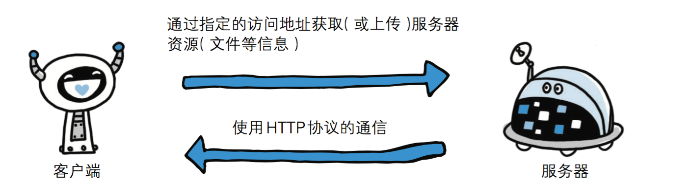</p>
<pre><code>1. &#x5BA2;&#x6237;&#x7AEF;&#x8FDE;&#x63A5;&#x5230;Web&#x670D;&#x52A1;&#x5668;
&#x4E00;&#x4E2A;HTTP&#x5BA2;&#x6237;&#x7AEF;&#xFF0C;&#x901A;&#x5E38;&#x662F;&#x6D4F;&#x89C8;&#x5668;&#xFF0C;&#x4E0E;Web&#x670D;&#x52A1;&#x5668;&#x7684;HTTP&#x7AEF;&#x53E3;&#xFF08;&#x9ED8;&#x8BA4;&#x4E3A;80&#xFF09;&#x5EFA;&#x7ACB;&#x4E00;&#x4E2A;TCP&#x5957;&#x63A5;&#x5B57;&#x8FDE;&#x63A5;&#x3002;&#x4F8B;&#x5982;&#xFF0C;http://www.yuchaoit.cn

2. &#x53D1;&#x9001;HTTP&#x8BF7;&#x6C42;
&#x901A;&#x8FC7;TCP&#x5957;&#x63A5;&#x5B57;&#xFF0C;&#x5BA2;&#x6237;&#x7AEF;&#x5411;Web&#x670D;&#x52A1;&#x5668;&#x53D1;&#x9001;&#x4E00;&#x4E2A;&#x6587;&#x672C;&#x7684;&#x8BF7;&#x6C42;&#x62A5;&#x6587;&#xFF0C;&#x4E00;&#x4E2A;&#x8BF7;&#x6C42;&#x62A5;&#x6587;&#x7531;&#x8BF7;&#x6C42;&#x884C;&#x3001;&#x8BF7;&#x6C42;&#x5934;&#x90E8;&#x3001;&#x7A7A;&#x884C;&#x548C;&#x8BF7;&#x6C42;&#x6570;&#x636E;4&#x90E8;&#x5206;&#x7EC4;&#x6210;&#x3002;

3. &#x670D;&#x52A1;&#x5668;&#x63A5;&#x53D7;&#x8BF7;&#x6C42;&#x5E76;&#x8FD4;&#x56DE;HTTP&#x54CD;&#x5E94;
Web&#x670D;&#x52A1;&#x5668;&#x89E3;&#x6790;&#x8BF7;&#x6C42;&#xFF0C;&#x5B9A;&#x4F4D;&#x8BF7;&#x6C42;&#x8D44;&#x6E90;&#x3002;&#x670D;&#x52A1;&#x5668;&#x5C06;&#x8D44;&#x6E90;&#x590D;&#x672C;&#x5199;&#x5230;TCP&#x5957;&#x63A5;&#x5B57;&#xFF0C;&#x7531;&#x5BA2;&#x6237;&#x7AEF;&#x8BFB;&#x53D6;&#x3002;&#x4E00;&#x4E2A;&#x54CD;&#x5E94;&#x7531;&#x72B6;&#x6001;&#x884C;&#x3001;&#x54CD;&#x5E94;&#x5934;&#x90E8;&#x3001;&#x7A7A;&#x884C;&#x548C;&#x54CD;&#x5E94;&#x6570;&#x636E;4&#x90E8;&#x5206;&#x7EC4;&#x6210;&#x3002;


4. &#x5BA2;&#x6237;&#x7AEF;&#x6D4F;&#x89C8;&#x5668;&#x89E3;&#x6790;HTML&#x5185;&#x5BB9;
&#x5BA2;&#x6237;&#x7AEF;&#x6D4F;&#x89C8;&#x5668;&#x9996;&#x5148;&#x89E3;&#x6790;&#x72B6;&#x6001;&#x884C;&#xFF0C;&#x67E5;&#x770B;&#x8868;&#x660E;&#x8BF7;&#x6C42;&#x662F;&#x5426;&#x6210;&#x529F;&#x7684;&#x72B6;&#x6001;&#x4EE3;&#x7801;&#x3002;&#x7136;&#x540E;&#x89E3;&#x6790;&#x6BCF;&#x4E00;&#x4E2A;&#x54CD;&#x5E94;&#x5934;&#xFF0C;&#x54CD;&#x5E94;&#x5934;&#x544A;&#x77E5;&#x4EE5;&#x4E0B;&#x4E3A;&#x82E5;&#x5E72;&#x5B57;&#x8282;&#x7684;HTML&#x6587;&#x6863;&#x548C;&#x6587;&#x6863;&#x7684;&#x5B57;&#x7B26;&#x96C6;&#x3002;
&#x5BA2;&#x6237;&#x7AEF;&#x6D4F;&#x89C8;&#x5668;&#x8BFB;&#x53D6;&#x54CD;&#x5E94;&#x6570;&#x636E;HTML&#xFF0C;&#x6839;&#x636E;HTML&#x7684;&#x8BED;&#x6CD5;&#x5BF9;&#x5176;&#x8FDB;&#x884C;&#x683C;&#x5F0F;&#x5316;&#xFF0C;&#x5E76;&#x5728;&#x6D4F;&#x89C8;&#x5668;&#x7A97;&#x53E3;&#x4E2D;&#x663E;&#x793A;&#x3002;

5. &#x91CA;&#x653E;&#x8FDE;&#x63A5;TCP&#x8FDE;&#x63A5;
&#x82E5;connection &#x6A21;&#x5F0F;&#x4E3A;close&#xFF0C;&#x5219;&#x670D;&#x52A1;&#x5668;&#x4E3B;&#x52A8;&#x5173;&#x95ED;TCP&#x8FDE;&#x63A5;&#xFF0C;&#x5BA2;&#x6237;&#x7AEF;&#x88AB;&#x52A8;&#x5173;&#x95ED;&#x8FDE;&#x63A5;&#xFF0C;&#x91CA;&#x653E;TCP&#x8FDE;&#x63A5;;&#x82E5;connection &#x6A21;&#x5F0F;&#x4E3A;keepalive&#xFF0C;&#x5219;&#x8BE5;&#x8FDE;&#x63A5;&#x4F1A;&#x4FDD;&#x6301;&#x4E00;&#x6BB5;&#x65F6;&#x95F4;&#xFF0C;&#x5728;&#x8BE5;&#x65F6;&#x95F4;&#x5185;&#x53EF;&#x4EE5;&#x7EE7;&#x7EED;&#x63A5;&#x6536;&#x8BF7;&#x6C42;;
</code></pre><p>&#x4F8B;&#x5982;&#xFF1A;&#x5728;&#x6D4F;&#x89C8;&#x5668;&#x5730;&#x5740;&#x680F;&#x952E;&#x5165;URL&#xFF0C;&#x6309;&#x4E0B;&#x56DE;&#x8F66;&#x4E4B;&#x540E;&#x4F1A;&#x7ECF;&#x5386;&#x4EE5;&#x4E0B;&#x6D41;&#x7A0B;&#xFF1A;</p>
<ol>
<li>&#x6D4F;&#x89C8;&#x5668;&#x5411; DNS &#x670D;&#x52A1;&#x5668;&#x8BF7;&#x6C42;&#x89E3;&#x6790;&#x8BE5; URL &#x4E2D;&#x7684;&#x57DF;&#x540D;&#x6240;&#x5BF9;&#x5E94;&#x7684; IP &#x5730;&#x5740;;</li>
<li>&#x89E3;&#x6790;&#x51FA; IP &#x5730;&#x5740;&#x540E;&#xFF0C;&#x6839;&#x636E;&#x8BE5; IP &#x5730;&#x5740;&#x548C;&#x9ED8;&#x8BA4;&#x7AEF;&#x53E3; 80&#xFF0C;&#x548C;&#x670D;&#x52A1;&#x5668;&#x5EFA;&#x7ACB;TCP&#x8FDE;&#x63A5;;</li>
<li>&#x6D4F;&#x89C8;&#x5668;&#x53D1;&#x51FA;&#x8BFB;&#x53D6;&#x6587;&#x4EF6;(URL &#x4E2D;&#x57DF;&#x540D;&#x540E;&#x9762;&#x90E8;&#x5206;&#x5BF9;&#x5E94;&#x7684;&#x6587;&#x4EF6;)&#x7684;HTTP &#x8BF7;&#x6C42;&#xFF0C;&#x8BE5;&#x8BF7;&#x6C42;&#x62A5;&#x6587;&#x4F5C;&#x4E3A; TCP &#x4E09;&#x6B21;&#x63E1;&#x624B;&#x7684;&#x7B2C;&#x4E09;&#x4E2A;&#x62A5;&#x6587;&#x7684;&#x6570;&#x636E;&#x53D1;&#x9001;&#x7ED9;&#x670D;&#x52A1;&#x5668;;</li>
<li>&#x670D;&#x52A1;&#x5668;&#x5BF9;&#x6D4F;&#x89C8;&#x5668;&#x8BF7;&#x6C42;&#x4F5C;&#x51FA;&#x54CD;&#x5E94;&#xFF0C;&#x5E76;&#x628A;&#x5BF9;&#x5E94;&#x7684; html &#x6587;&#x672C;&#x53D1;&#x9001;&#x7ED9;&#x6D4F;&#x89C8;&#x5668;;</li>
<li>&#x6D4F;&#x89C8;&#x5668;&#x5C06;&#x8BE5; html &#x6587;&#x672C;&#x5E76;&#x663E;&#x793A;&#x5185;&#x5BB9;; &#x3000;</li>
<li>&#x91CA;&#x653E; TCP&#x8FDE;&#x63A5;;</li>
</ol>
<blockquote>
<p>&#x603B;&#x7ED3;</p>
<p><strong>http&#x534F;&#x8BAE;&#x662F;&#x57FA;&#x4E8E;TCP/IP&#x534F;&#x8BAE;&#x4E4B;&#x4E0A;&#x7684;&#x5E94;&#x7528;&#x5C42;&#x534F;&#x8BAE;&#x3002;</strong></p>
</blockquote>
<h3 id="&#x8BF7;&#x6C42;-&#x54CD;&#x5E94;&#x7684;&#x6A21;&#x5F0F;"><a name="&#x8BF7;&#x6C42;-&#x54CD;&#x5E94;&#x7684;&#x6A21;&#x5F0F;" class="plugin-anchor" href="#&#x8BF7;&#x6C42;-&#x54CD;&#x5E94;&#x7684;&#x6A21;&#x5F0F;"><i class="fa fa-link" aria-hidden="true"></i></a>&#x8BF7;&#x6C42;-&#x54CD;&#x5E94;&#x7684;&#x6A21;&#x5F0F;</h3>
<p>HTTP&#x534F;&#x8BAE;&#x89C4;&#x5B9A;,&#x8BF7;&#x6C42;&#x4ECE;&#x5BA2;&#x6237;&#x7AEF;&#x53D1;&#x51FA;,&#x6700;&#x540E;&#x670D;&#x52A1;&#x5668;&#x7AEF;&#x54CD;&#x5E94;&#x8BE5;&#x8BF7;&#x6C42;&#x5E76; &#x8FD4;&#x56DE;&#x3002;</p>
<p>&#x6362;&#x53E5;&#x8BDD;&#x8BF4;,&#x80AF;&#x5B9A;&#x662F;&#x5148;&#x4ECE;&#x5BA2;&#x6237;&#x7AEF;&#x5F00;&#x59CB;&#x5EFA;&#x7ACB;&#x901A;&#x4FE1;&#x7684;,&#x670D;&#x52A1;&#x5668;&#x7AEF;&#x5728;&#x6CA1;&#x6709;&#x63A5;&#x6536;&#x5230;&#x8BF7;&#x6C42;&#x4E4B;&#x524D;&#x4E0D;&#x4F1A;&#x53D1;&#x9001;&#x54CD;&#x5E94;</p>
<p>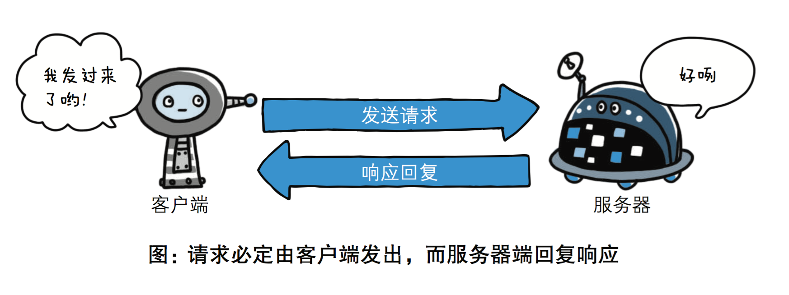</p>
<h3 id="http&#x65E0;&#x72B6;&#x6001;"><a name="http&#x65E0;&#x72B6;&#x6001;" class="plugin-anchor" href="#http&#x65E0;&#x72B6;&#x6001;"><i class="fa fa-link" aria-hidden="true"></i></a>HTTP&#x65E0;&#x72B6;&#x6001;</h3>
<p>HTTP&#x662F;&#x4E00;&#x79CD;&#x4E0D;&#x4FDD;&#x5B58;&#x72B6;&#x6001;,&#x5373;&#x65E0;&#x72B6;&#x6001;(stateless)&#x534F;&#x8BAE;&#x3002;</p>
<p>HTTP&#x534F;&#x8BAE; &#x81EA;&#x8EAB;&#x4E0D;&#x5BF9;&#x8BF7;&#x6C42;&#x548C;&#x54CD;&#x5E94;&#x4E4B;&#x95F4;&#x7684;&#x901A;&#x4FE1;&#x72B6;&#x6001;&#x8FDB;&#x884C;&#x4FDD;&#x5B58;&#x3002;</p>
<p>&#x4E5F;&#x5C31;&#x662F;&#x8BF4;&#x5728;HTTP&#x8FD9;&#x4E2A;&#x7EA7;&#x522B;,&#x534F;&#x8BAE;&#x5BF9;&#x4E8E;&#x53D1;&#x9001;&#x8FC7;&#x7684;&#x8BF7;&#x6C42;&#x6216;&#x54CD;&#x5E94;&#x90FD;&#x4E0D;&#x505A;&#x6301;&#x4E45;&#x5316;&#x5904;&#x7406;&#x3002;</p>
<p>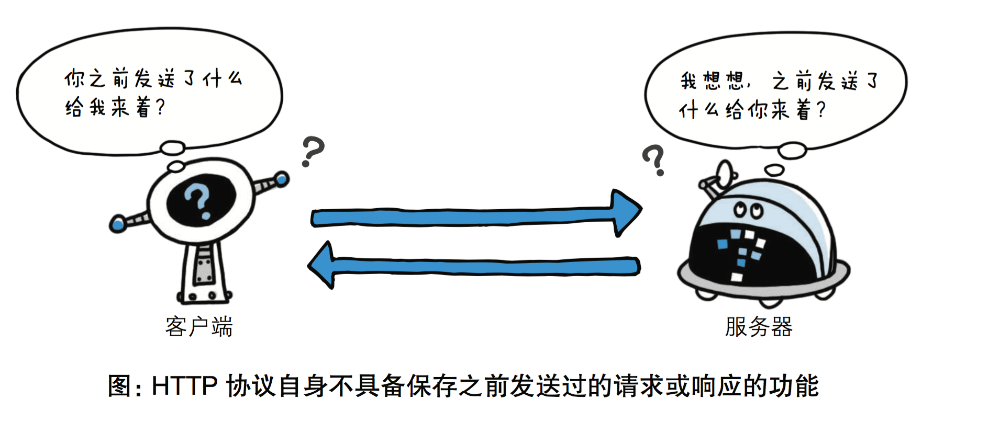</p>
<p>&#x8FD9;&#x79CD;&#x65E0;&#x72B6;&#x6001;&#x8BBE;&#x8BA1;&#x662F;&#x4E3A;&#x4E86;&#x4FDD;&#x8BC1;HTTP&#x53EF;&#x4EE5;&#x5904;&#x7406;&#x5927;&#x91CF;&#x7684;&#x8BF7;&#x6C42;&#x54CD;&#x5E94;&#xFF1B;</p>
<h3 id="cookie"><a name="cookie" class="plugin-anchor" href="#cookie"><i class="fa fa-link" aria-hidden="true"></i></a>cookie</h3>
<p>&#x4F46;&#x662F;&#x5982;&#x679C;HTTP&#x5B8C;&#x5168;&#x65E0;&#x72B6;&#x6001;&#xFF0C;&#x4F60;&#x767B;&#x5F55;&#x5230;&#x6DD8;&#x5B9D;&#x7F51;&#x540E;&#xFF0C;&#x70B9;&#x51FB;&#x7535;&#x5B50;&#x4EA7;&#x54C1;&#x7684;&#x8DF3;&#x8F6C;&#x94FE;&#x63A5;&#xFF0C;&#x5B83;&#x53C8;&#x63D0;&#x793A;&#x4F60;&#x9700;&#x8981;&#x767B;&#x5F55;&#x4E86;&#xFF0C;&#x8FD9;&#x5C31;&#x662F;&#x4E00;&#x4E2A;&#x65E0;&#x72B6;&#x6001;&#x7684;&#x5B9E;&#x9645;&#x6548;&#x679C;&#x3002;</p>
<p>&#x56E0;&#x6B64;&#x6B64;&#x7C7B;&#x9700;&#x8981;&#x4FDD;&#x6301;&#x7528;&#x6237;&#x8EAB;&#x4EFD;&#x4FE1;&#x606F;&#x7684;&#x4E1A;&#x52A1;&#xFF0C;&#x5FC5;&#x987B;&#x8981;&#x4FDD;&#x5B58;&#x7528;&#x6237;&#x7684;&#x72B6;&#x6001;&#x3002;</p>
<p>&#x4E8E;&#x662F;&#x5F15;&#x5165;&#x4E86;Cookie&#x6280;&#x672F;&#xFF0C;&#x80FD;&#x591F;&#x4FDD;&#x6301;&#x7528;&#x6237;&#x7684;&#x8EAB;&#x4EFD;&#x4FE1;&#x606F;&#xFF0C;&#x4E0B;&#x4E00;&#x6B21;&#x5BA2;&#x6237;&#x7AEF;&#x53D1;&#x51FA;&#x8BF7;&#x6C42;&#xFF0C;&#x670D;&#x52A1;&#x7AEF;&#x80FD;&#x8BB0;&#x5FC6;&#x5BA2;&#x6237;&#x7AEF;&#x7684;&#x8EAB;&#x4EFD;&#x3002;</p>
<p>&#x6CA1;&#x6709;cookie</p>
<p>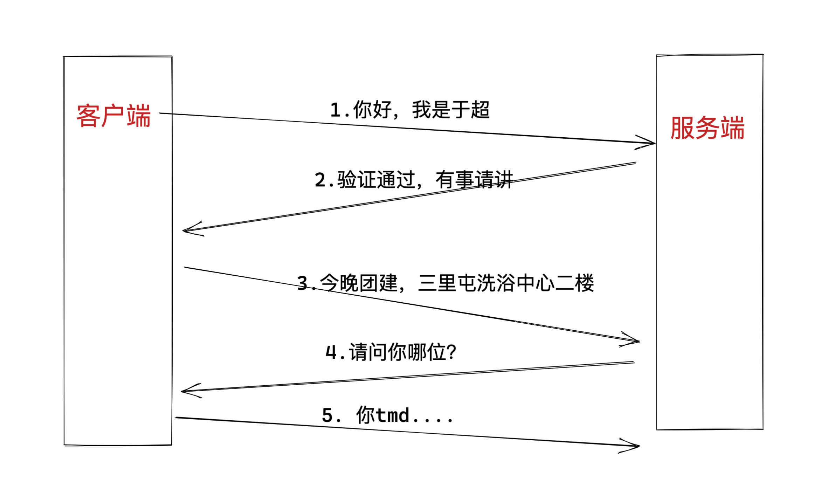</p>
<p>&#x6709;cookie</p>
<p>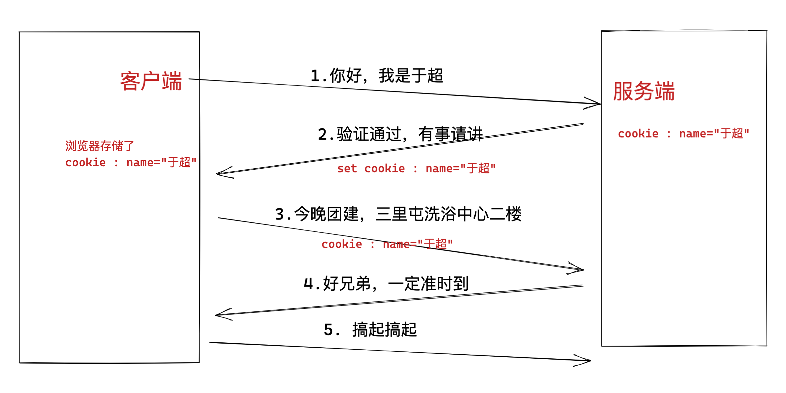</p>
<h1 id="http&#x8BF7;&#x6C42;&#x65B9;&#x6CD5;"><a name="http&#x8BF7;&#x6C42;&#x65B9;&#x6CD5;" class="plugin-anchor" href="#http&#x8BF7;&#x6C42;&#x65B9;&#x6CD5;"><i class="fa fa-link" aria-hidden="true"></i></a>HTTP&#x8BF7;&#x6C42;&#x65B9;&#x6CD5;</h1>
<pre><code>HTTP/1.1&#x534F;&#x8BAE;&#x4E2D;&#x5171;&#x5B9A;&#x4E49;&#x4E86;&#x516B;&#x79CD;&#x65B9;&#x6CD5;&#xFF08;&#x4E5F;&#x53EB;&#x201C;&#x52A8;&#x4F5C;&#x201D;&#xFF09;&#x6765;&#x4EE5;&#x4E0D;&#x540C;&#x65B9;&#x5F0F;&#x64CD;&#x4F5C;&#x6307;&#x5B9A;&#x7684;&#x8D44;&#x6E90;&#xFF1A;

GET
&#x5411;&#x6307;&#x5B9A;&#x7684;&#x8D44;&#x6E90;&#x53D1;&#x51FA;&#x201C;&#x663E;&#x793A;&#x201D;&#x8BF7;&#x6C42;&#x3002;&#x4F7F;&#x7528;GET&#x65B9;&#x6CD5;&#x5E94;&#x8BE5;&#x53EA;&#x7528;&#x5728;&#x8BFB;&#x53D6;&#x6570;&#x636E;

HEAD
&#x4E0E;GET&#x65B9;&#x6CD5;&#x4E00;&#x6837;&#xFF0C;&#x90FD;&#x662F;&#x5411;&#x670D;&#x52A1;&#x5668;&#x53D1;&#x51FA;&#x6307;&#x5B9A;&#x8D44;&#x6E90;&#x7684;&#x8BF7;&#x6C42;&#x3002;
&#x53EA;&#x8BF7;&#x6C42;&#x54CD;&#x5E94;&#x62A5;&#x6587;&#x4E2D;&#x7684;HTTP&#x5934;&#x90E8;&#x3002;
&#x5B83;&#x7684;&#x597D;&#x5904;&#x5728;&#x4E8E;&#xFF0C;&#x4F7F;&#x7528;&#x8FD9;&#x4E2A;&#x65B9;&#x6CD5;&#x53EF;&#x4EE5;&#x5728;&#x4E0D;&#x5FC5;&#x4F20;&#x8F93;&#x5168;&#x90E8;&#x5185;&#x5BB9;&#x7684;&#x60C5;&#x51B5;&#x4E0B;&#xFF0C;&#x5C31;&#x53EF;&#x4EE5;&#x83B7;&#x53D6;&#x5176;&#x4E2D;&#x201C;&#x5173;&#x4E8E;&#x8BE5;&#x8D44;&#x6E90;&#x7684;&#x4FE1;&#x606F;&#x201D;&#xFF08;&#x5143;&#x4FE1;&#x606F;&#x6216;&#x79F0;&#x5143;&#x6570;&#x636E;&#xFF09;&#x3002;

POST
&#x5411;&#x6307;&#x5B9A;&#x8D44;&#x6E90;&#x63D0;&#x4EA4;&#x6570;&#x636E;&#xFF0C;&#x8BF7;&#x6C42;&#x670D;&#x52A1;&#x5668;&#x8FDB;&#x884C;&#x5904;&#x7406;&#xFF08;&#x4F8B;&#x5982;&#x63D0;&#x4EA4;&#x8868;&#x5355;&#x6216;&#x8005;&#x4E0A;&#x4F20;&#x6587;&#x4EF6;&#xFF09;&#x3002;&#x6570;&#x636E;&#x88AB;&#x5305;&#x542B;&#x5728;&#x8BF7;&#x6C42;&#x672C;&#x6587;&#x4E2D;&#x3002;&#x8FD9;&#x4E2A;&#x8BF7;&#x6C42;&#x53EF;&#x80FD;&#x4F1A;&#x521B;&#x5EFA;&#x65B0;&#x7684;&#x8D44;&#x6E90;&#x6216;&#x4FEE;&#x6539;&#x73B0;&#x6709;&#x8D44;&#x6E90;&#xFF0C;&#x6216;&#x4E8C;&#x8005;&#x7686;&#x6709;&#x3002;
&#x5982;&#x6CE8;&#x518C;&#x3001;&#x767B;&#x5F55;&#x7B49;&#x8BF7;&#x6C42;&#x3002;

PUT
&#x5411;&#x6307;&#x5B9A;&#x8D44;&#x6E90;&#x4F4D;&#x7F6E;&#x4E0A;&#x4F20;&#x5176;&#x6700;&#x65B0;&#x5185;&#x5BB9;&#x3002;
&#x5982;&#x66F4;&#x65B0;&#x7528;&#x6237;&#x4FE1;&#x606F;


DELETE
&#x8BF7;&#x6C42;&#x670D;&#x52A1;&#x5668;&#x5220;&#x9664;Request-URI&#x6240;&#x6807;&#x8BC6;&#x7684;&#x8D44;&#x6E90;&#x3002;

TRACE
&#x56DE;&#x663E;&#x670D;&#x52A1;&#x5668;&#x6536;&#x5230;&#x7684;&#x8BF7;&#x6C42;&#xFF0C;&#x4E3B;&#x8981;&#x7528;&#x4E8E;&#x6D4B;&#x8BD5;&#x6216;&#x8BCA;&#x65AD;&#x3002;

OPTIONS
&#x8FD9;&#x4E2A;&#x65B9;&#x6CD5;&#x53EF;&#x4F7F;&#x670D;&#x52A1;&#x5668;&#x4F20;&#x56DE;&#x8BE5;&#x8D44;&#x6E90;&#x6240;&#x652F;&#x6301;&#x7684;&#x6240;&#x6709;HTTP&#x8BF7;&#x6C42;&#x65B9;&#x6CD5;&#x3002;&#x7528;&apos;*&apos;&#x6765;&#x4EE3;&#x66FF;&#x8D44;&#x6E90;&#x540D;&#x79F0;&#xFF0C;&#x5411;Web&#x670D;&#x52A1;&#x5668;&#x53D1;&#x9001;OPTIONS&#x8BF7;&#x6C42;&#xFF0C;&#x53EF;&#x4EE5;&#x6D4B;&#x8BD5;&#x670D;&#x52A1;&#x5668;&#x529F;&#x80FD;&#x662F;&#x5426;&#x6B63;&#x5E38;&#x8FD0;&#x4F5C;&#x3002;

CONNECT
HTTP/1.1&#x534F;&#x8BAE;&#x4E2D;&#x9884;&#x7559;&#x7ED9;&#x80FD;&#x591F;&#x5C06;&#x8FDE;&#x63A5;&#x6539;&#x4E3A;&#x7BA1;&#x9053;&#x65B9;&#x5F0F;&#x7684;&#x4EE3;&#x7406;&#x670D;&#x52A1;&#x5668;&#x3002;&#x901A;&#x5E38;&#x7528;&#x4E8E;SSL&#x52A0;&#x5BC6;&#x670D;&#x52A1;&#x5668;&#x7684;&#x94FE;&#x63A5;&#xFF08;&#x7ECF;&#x7531;&#x975E;&#x52A0;&#x5BC6;&#x7684;HTTP&#x4EE3;&#x7406;&#x670D;&#x52A1;&#x5668;&#xFF09;&#x3002;

&#x6CE8;&#x610F;&#x4E8B;&#x9879;&#xFF1A;

&#x65B9;&#x6CD5;&#x540D;&#x79F0;&#x662F;&#x533A;&#x5206;&#x5927;&#x5C0F;&#x5199;&#x7684;&#x3002;&#x5F53;&#x67D0;&#x4E2A;&#x8BF7;&#x6C42;&#x6240;&#x9488;&#x5BF9;&#x7684;&#x8D44;&#x6E90;&#x4E0D;&#x652F;&#x6301;&#x5BF9;&#x5E94;&#x7684;&#x8BF7;&#x6C42;&#x65B9;&#x6CD5;&#x7684;&#x65F6;&#x5019;&#xFF0C;&#x670D;&#x52A1;&#x5668;&#x5E94;&#x5F53;&#x8FD4;&#x56DE;&#x72B6;&#x6001;&#x7801;405&#xFF08;Method Not Allowed&#xFF09;&#xFF0C;&#x5F53;&#x670D;&#x52A1;&#x5668;&#x4E0D;&#x8BA4;&#x8BC6;&#x6216;&#x8005;&#x4E0D;&#x652F;&#x6301;&#x5BF9;&#x5E94;&#x7684;&#x8BF7;&#x6C42;&#x65B9;&#x6CD5;&#x7684;&#x65F6;&#x5019;&#xFF0C;&#x5E94;&#x5F53;&#x8FD4;&#x56DE;&#x72B6;&#x6001;&#x7801;501&#xFF08;Not Implemented&#xFF09;&#x3002;

HTTP&#x670D;&#x52A1;&#x5668;&#x81F3;&#x5C11;&#x5E94;&#x8BE5;&#x5B9E;&#x73B0;GET&#x548C;HEAD&#x65B9;&#x6CD5;&#xFF0C;&#x5176;&#x4ED6;&#x65B9;&#x6CD5;&#x90FD;&#x662F;&#x53EF;&#x9009;&#x7684;&#x3002;
</code></pre><h1 id="http&#x8BF7;&#x6C42;&#x62A5;&#x6587;"><a name="http&#x8BF7;&#x6C42;&#x62A5;&#x6587;" class="plugin-anchor" href="#http&#x8BF7;&#x6C42;&#x62A5;&#x6587;"><i class="fa fa-link" aria-hidden="true"></i></a>HTTP&#x8BF7;&#x6C42;&#x62A5;&#x6587;</h1>
<p>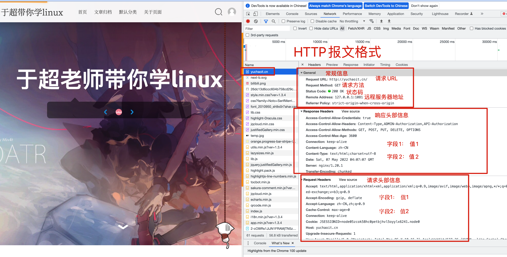</p>
<pre><code>Accept &#x5C31;&#x662F;&#x544A;&#x8BC9;&#x670D;&#x52A1;&#x5668;&#x7AEF;&#xFF0C;&#x6211;&#x63A5;&#x53D7;&#x90A3;&#x4E9B;MIME&#x7C7B;&#x578B;

Accept-Encoding &#x8FD9;&#x4E2A;&#x770B;&#x8D77;&#x6765;&#x662F;&#x63A5;&#x53D7;&#x90A3;&#x4E9B;&#x538B;&#x7F29;&#x65B9;&#x5F0F;&#x7684;&#x6587;&#x4EF6;

Accept-Lanague &#x544A;&#x8BC9;&#x670D;&#x52A1;&#x5668;&#x80FD;&#x591F;&#x53D1;&#x9001;&#x54EA;&#x4E9B;&#x8BED;&#x8A00;

Connection &#x544A;&#x8BC9;&#x670D;&#x52A1;&#x5668;&#x652F;&#x6301;keep-alive&#x7279;&#x6027;

Cookie &#x6BCF;&#x6B21;&#x8BF7;&#x6C42;&#x65F6;&#x90FD;&#x4F1A;&#x643A;&#x5E26;&#x4E0A;Cookie&#x4EE5;&#x65B9;&#x4FBF;&#x670D;&#x52A1;&#x5668;&#x7AEF;&#x8BC6;&#x522B;&#x662F;&#x5426;&#x662F;&#x540C;&#x4E00;&#x4E2A;&#x5BA2;&#x6237;&#x7AEF;

Host &#x7528;&#x6765;&#x6807;&#x8BC6;&#x8BF7;&#x6C42;&#x670D;&#x52A1;&#x5668;&#x4E0A;&#x7684;&#x90A3;&#x4E2A;&#x865A;&#x62DF;&#x4E3B;&#x673A;&#xFF0C;&#x6BD4;&#x5982;Nginx&#x91CC;&#x9762;&#x53EF;&#x4EE5;&#x5B9A;&#x4E49;&#x5F88;&#x591A;

&#x865A;&#x62DF;&#x4E3B;&#x673A;&#xFF0E;&#x90A3;&#x8FD9;&#x91CC;&#x5C31;&#x662F;&#x7528;&#x6765;&#x6807;&#x8BC6;&#x8981;&#x8BBF;&#x95EE;&#x90A3;&#x4E2A;&#x865A;&#x62DF;&#x4E3B;&#x673A;&#x3002;

User-Agent &#x7528;&#x6237;&#x4EE3;&#x7406;&#xFF0C;&#x4E00;&#x822C;&#x60C5;&#x51B5;&#x662F;&#x6D4F;&#x89C8;&#x5668;&#xFF0C;&#x4E5F;&#x6709;&#x5176;&#x4ED6;&#x7C7B;&#x578B;&#xFF0C;&#x5982;&#xFF1A;wget curl &#x641C;&#x5F15;&#x64CE;&#x7684;&#x8718;&#x86DB;&#x7B49;

If-Modified-Since &#x662F;&#x6D4F;&#x89C8;&#x5668;&#x5411;&#x670D;&#x52A1;&#x5668;&#x7AEF;&#x8BE2;&#x95EE;&#x67D0;&#x4E2A;&#x8D44;&#x6E90;&#x6587;&#x4EF6;&#x5982;&#x679C;&#x81EA;&#x4ECE;&#x4EC0;&#x4E48;&#x65F6;&#x95F4;&#x4FEE;

&#x8FC7;&#xFF0C;&#x90A3;&#x4E48;&#x91CD;&#x65B0;&#x53D1;&#x7ED9;&#x6211;&#xFF0C;&#x8FD9;&#x6837;&#x5C31;&#x4FDD;&#x8BC1;&#x670D;&#x52A1;&#x5668;&#x7AEF;&#x8D44;&#x6E90;&#xFF0E;&#x6587;&#x4EF6;&#x66F4;&#x65B0;&#x65F6;&#xFF0C;&#x6D4F;&#x89C8;&#x5668;&#x518D;&#x6B21;&#x53BB;

&#x6C42;&#xFF0C;&#x800C;&#x4E0D;&#x662F;&#x4F7F;&#x7528;&#x7F13;&#x5B58;&#x4E2D;&#x7684;&#x6587;&#x4EF6;&#x3002;

If-None-Match&#xFF1A;&#x672C;&#x5730;&#x7F13;&#x5B58;&#x4E2D;&#x5B58;&#x50A8;&#x7684;&#x6587;&#x6863;&#x7684;ETag&#x6807;&#x7B7E;&#x662F;&#x5426;&#x4E0E;&#x670D;&#x52A1;&#x5668;&#x6587;&#x6863;&#x7684;Etag&#x4E0D;&#x5339;&#x914D;&#xFF1B;
</code></pre><table>
<thead>
<tr>
<th>&#x62A5;&#x6587;&#x683C;&#x5F0F;</th>
<th>&#x62A5;&#x6587;&#x4FE1;&#x606F;</th>
</tr>
</thead>
<tbody>
<tr>
<td>&#x8BF7;&#x6C42;&#x884C;</td>
<td>&#x8BF7;&#x6C42;&#x65B9;&#x6CD5;</td>
</tr>
<tr>
<td></td>
<td>&#x8BF7;&#x6C42;URL</td>
</tr>
<tr>
<td></td>
<td>&#x8BF7;&#x6C42;&#x534F;&#x8BAE;</td>
</tr>
<tr>
<td>&#x8BF7;&#x6C42;&#x5934;</td>
<td>&#x5B57;&#x6BB5;1 &#xFF1A; &#x503C;1</td>
</tr>
<tr>
<td></td>
<td>&#x5B57;&#x6BB5;2 &#xFF1A; &#x503C;2</td>
</tr>
<tr>
<td>&#x7A7A;&#x767D;&#x884C;</td>
<td></td>
</tr>
<tr>
<td>&#x8BF7;&#x6C42;&#x62A5;&#x6587;&#x4E3B;&#x4F53;</td>
<td>GET&#x65B9;&#x6CD5;&#x4E0D;&#x63D0;&#x4EA4;&#x6570;&#x636E;&#xFF0C;&#x6CA1;&#x6709;&#x62A5;&#x6587;&#x4E3B;&#x4F53;</td>
</tr>
<tr>
<td></td>
<td>POST&#x65B9;&#x6CD5;&#x63D0;&#x4EA4;&#x6570;&#x636E;&#xFF0C;&#x643A;&#x5E26;&#x62A5;&#x6587;&#x4E3B;&#x4F53;</td>
</tr>
<tr>
<td></td>
</tr>
</tbody>
</table>
<h2 id="&#x6293;&#x5305;http&#x8BF7;&#x6C42;"><a name="&#x6293;&#x5305;http&#x8BF7;&#x6C42;" class="plugin-anchor" href="#&#x6293;&#x5305;http&#x8BF7;&#x6C42;"><i class="fa fa-link" aria-hidden="true"></i></a>&#x6293;&#x5305;HTTP&#x8BF7;&#x6C42;</h2>
<p>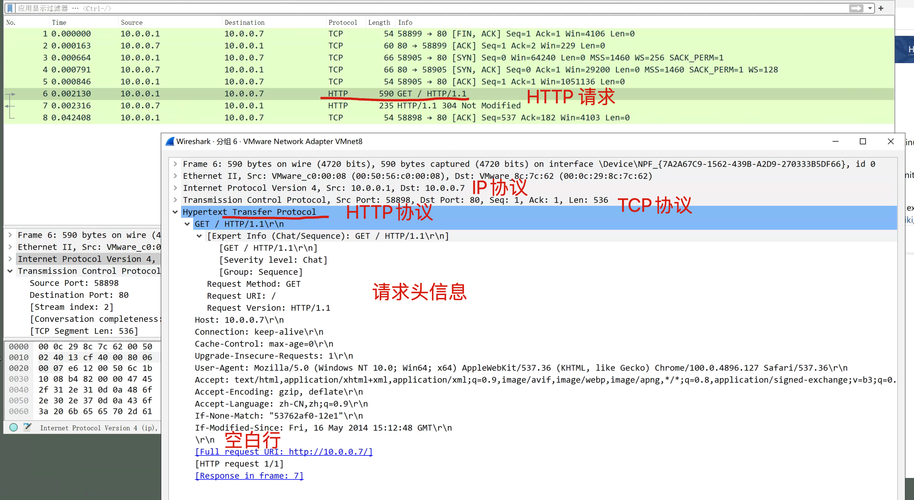</p>
<h1 id="http&#x54CD;&#x5E94;&#x62A5;&#x6587;"><a name="http&#x54CD;&#x5E94;&#x62A5;&#x6587;" class="plugin-anchor" href="#http&#x54CD;&#x5E94;&#x62A5;&#x6587;"><i class="fa fa-link" aria-hidden="true"></i></a>HTTP&#x54CD;&#x5E94;&#x62A5;&#x6587;</h1>
<p>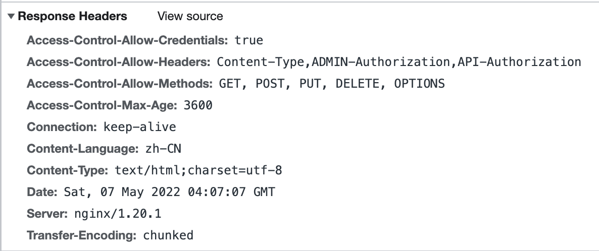</p>
<pre><code>&#x54CD;&#x5E94;&#x5934;&#x89E3;&#x91CA;
Connection            &#x4F7F;&#x7528;keep-alive&#x7279;&#x6027;
Content-Encoding      &#x4F7F;&#x7528;gzip&#x65B9;&#x5F0F;&#x5BF9;&#x8D44;&#x6E90;&#x538B;&#x7F29;
Content-Length: &#x4E3B;&#x4F53;&#x7684;&#x957F;&#x5EA6;
Content-type          MIME&#x7C7B;&#x578B;&#x4E3A;html&#x7C7B;&#x578B;&#xFF0C;&#x5B57;&#x7B26;&#x96C6;&#x662F; UTF-8
Date                  &#x54CD;&#x5E94;&#x7684;&#x65E5;&#x671F;
Server                &#x4F7F;&#x7528;&#x7684;WEB&#x670D;&#x52A1;&#x5668;
Last-Modified&#xFF1A;&#x6700;&#x540E;&#x4E00;&#x6B21;&#x4FEE;&#x6539;&#x7684;&#x65F6;&#x95F4;
Server&#xFF1A;            &#x670D;&#x52A1;&#x5668;&#x7A0B;&#x5E8F;&#x8F6F;&#x4EF6;&#x540D;&#x79F0;&#x548C;&#x7248;&#x672C;
</code></pre><table>
<thead>
<tr>
<th>&#x62A5;&#x6587;&#x683C;&#x5F0F;</th>
<th>&#x62A5;&#x6587;&#x4FE1;&#x606F;</th>
</tr>
</thead>
<tbody>
<tr>
<td>&#x8D77;&#x59CB;&#x884C;</td>
<td>&#x534F;&#x8BAE;&#x7248;&#x672C;&#x53F7;</td>
</tr>
<tr>
<td></td>
<td>&#x6570;&#x5B57;&#x72B6;&#x6001;&#x7801;</td>
</tr>
<tr>
<td></td>
<td></td>
</tr>
<tr>
<td>&#x54CD;&#x5E94;&#x5934;&#x90E8;</td>
<td>&#x5B57;&#x6BB5;1&#xFF1A;&#x503C;1</td>
</tr>
<tr>
<td></td>
<td>&#x5B57;&#x6BB5;2&#xFF1A;&#x503C;2</td>
</tr>
<tr>
<td>&#x54CD;&#x5E94;&#x62A5;&#x6587;&#x4E3B;&#x4F53;</td>
<td><code>&lt;html&gt;&#x4E8E;&#x8D85;&#x8001;&#x5E08;&#x5E26;&#x4F60;&#x5B66;IT&#xFF0C;&#x725B;&#x554A;&#x725B;&#x554A;&lt;/html&gt;</code></td>
</tr>
<tr>
<td></td>
<td></td>
</tr>
<tr>
<td></td>
<td></td>
</tr>
<tr>
<td></td>
</tr>
</tbody>
</table>
<h2 id="&#x6293;&#x5305;http&#x54CD;&#x5E94;"><a name="&#x6293;&#x5305;http&#x54CD;&#x5E94;" class="plugin-anchor" href="#&#x6293;&#x5305;http&#x54CD;&#x5E94;"><i class="fa fa-link" aria-hidden="true"></i></a>&#x6293;&#x5305;HTTP&#x54CD;&#x5E94;</h2>
<p>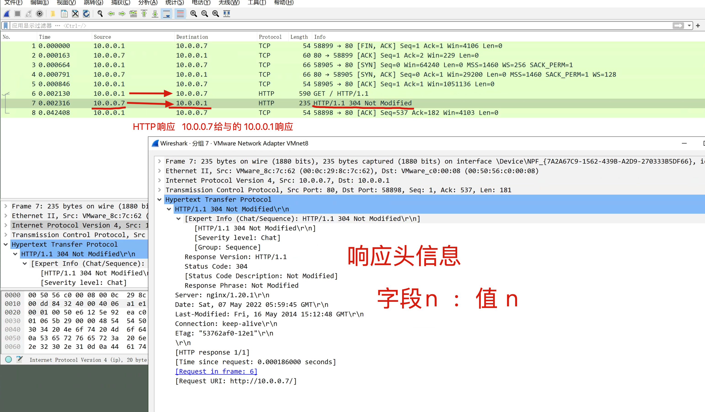</p>
<h1 id="http&#x5E38;&#x89C1;&#x54CD;&#x5E94;&#x72B6;&#x6001;&#x7801;"><a name="http&#x5E38;&#x89C1;&#x54CD;&#x5E94;&#x72B6;&#x6001;&#x7801;" class="plugin-anchor" href="#http&#x5E38;&#x89C1;&#x54CD;&#x5E94;&#x72B6;&#x6001;&#x7801;"><i class="fa fa-link" aria-hidden="true"></i></a>HTTP&#x5E38;&#x89C1;&#x54CD;&#x5E94;&#x72B6;&#x6001;&#x7801;</h1>
<p>&#x72B6;&#x6001;&#x4EE3;&#x7801;&#x7684;&#x7B2C;&#x4E00;&#x4E2A;&#x6570;&#x5B57;&#x4EE3;&#x8868;&#x5F53;&#x524D;&#x54CD;&#x5E94;&#x7684;&#x7C7B;&#x578B;&#xFF1A;</p>
<ul>
<li>1xx&#x6D88;&#x606F;&#x2014;&#x2014;&#x8BF7;&#x6C42;&#x5DF2;&#x88AB;&#x670D;&#x52A1;&#x5668;&#x63A5;&#x6536;&#xFF0C;&#x7EE7;&#x7EED;&#x5904;&#x7406;</li>
<li>2xx&#x6210;&#x529F;&#x2014;&#x2014;&#x8BF7;&#x6C42;&#x5DF2;&#x6210;&#x529F;&#x88AB;&#x670D;&#x52A1;&#x5668;&#x63A5;&#x6536;&#x3001;&#x7406;&#x89E3;&#x3001;&#x5E76;&#x63A5;&#x53D7;</li>
<li>3xx&#x91CD;&#x5B9A;&#x5411;&#x2014;&#x2014;&#x9700;&#x8981;&#x540E;&#x7EED;&#x64CD;&#x4F5C;&#x624D;&#x80FD;&#x5B8C;&#x6210;&#x8FD9;&#x4E00;&#x8BF7;&#x6C42;</li>
<li>4xx&#x8BF7;&#x6C42;&#x9519;&#x8BEF;&#x2014;&#x2014;&#x8BF7;&#x6C42;&#x542B;&#x6709;&#x8BCD;&#x6CD5;&#x9519;&#x8BEF;&#x6216;&#x8005;&#x65E0;&#x6CD5;&#x88AB;&#x6267;&#x884C;&#xFF08;&#x5BA2;&#x6237;&#x7AEF;&#x7684;&#x9519;&#x8BEF;&#xFF09;</li>
<li>5xx&#x670D;&#x52A1;&#x5668;&#x9519;&#x8BEF;&#x2014;&#x2014;&#x670D;&#x52A1;&#x5668;&#x5728;&#x5904;&#x7406;&#x67D0;&#x4E2A;&#x6B63;&#x786E;&#x8BF7;&#x6C42;&#x65F6;&#x53D1;&#x751F;&#x9519;&#x8BEF;&#xFF08;&#x670D;&#x52A1;&#x7AEF;&#x7684;&#x9519;&#x8BEF;&#xFF09;</li>
</ul>
<h2 id="&#x5E38;&#x89C1;&#x72B6;&#x6001;&#x7801;"><a name="&#x5E38;&#x89C1;&#x72B6;&#x6001;&#x7801;" class="plugin-anchor" href="#&#x5E38;&#x89C1;&#x72B6;&#x6001;&#x7801;"><i class="fa fa-link" aria-hidden="true"></i></a>&#x5E38;&#x89C1;&#x72B6;&#x6001;&#x7801;</h2>
<pre><code>&#x4E00;&#x4E9B;&#x5E38;&#x89C1;HTTP&#x72B6;&#x6001;&#x7801;&#x4E3A;&#xFF1A;
200 &#x2013; &#x670D;&#x52A1;&#x5668;&#x6210;&#x529F;&#x8FD4;&#x56DE;&#x7F51;&#x9875;
404 &#x2013; &#x8BF7;&#x6C42;&#x7684;&#x7F51;&#x9875;&#x4E0D;&#x5B58;&#x5728;
503 &#x2013; &#x670D;&#x52A1;&#x4E0D;&#x53EF;&#x7528;

&#x5E38;&#x89C1;HTTP&#x72B6;&#x6001;&#x7801;&#x5927;&#x5168;

1xx&#xFF08;&#x4E34;&#x65F6;&#x54CD;&#x5E94;&#xFF09;
&#x8868;&#x793A;&#x4E34;&#x65F6;&#x54CD;&#x5E94;&#x5E76;&#x9700;&#x8981;&#x8BF7;&#x6C42;&#x8005;&#x7EE7;&#x7EED;&#x6267;&#x884C;&#x64CD;&#x4F5C;&#x7684;&#x72B6;&#x6001;&#x4EE3;&#x7801;&#x3002;

&#x4EE3;&#x7801; &#x8BF4;&#x660E;
http&#x72B6;&#x6001;&#x7801; 100 &#xFF08;&#x7EE7;&#x7EED;&#xFF09; &#x8BF7;&#x6C42;&#x8005;&#x5E94;&#x5F53;&#x7EE7;&#x7EED;&#x63D0;&#x51FA;&#x8BF7;&#x6C42;&#x3002; &#x670D;&#x52A1;&#x5668;&#x8FD4;&#x56DE;&#x6B64;&#x4EE3;&#x7801;&#x8868;&#x793A;&#x5DF2;&#x6536;&#x5230;&#x8BF7;&#x6C42;&#x7684;&#x7B2C;&#x4E00;&#x90E8;&#x5206;&#xFF0C;&#x6B63;&#x5728;&#x7B49;&#x5F85;&#x5176;&#x4F59;&#x90E8;&#x5206;&#x3002;
http&#x72B6;&#x6001;&#x7801; 101 &#xFF08;&#x5207;&#x6362;&#x534F;&#x8BAE;&#xFF09; &#x8BF7;&#x6C42;&#x8005;&#x5DF2;&#x8981;&#x6C42;&#x670D;&#x52A1;&#x5668;&#x5207;&#x6362;&#x534F;&#x8BAE;&#xFF0C;&#x670D;&#x52A1;&#x5668;&#x5DF2;&#x786E;&#x8BA4;&#x5E76;&#x51C6;&#x5907;&#x5207;&#x6362;&#x3002;

2xx &#xFF08;&#x6210;&#x529F;&#xFF09;
&#x8868;&#x793A;&#x6210;&#x529F;&#x5904;&#x7406;&#x4E86;&#x8BF7;&#x6C42;&#x7684;&#x72B6;&#x6001;&#x4EE3;&#x7801;&#x3002;
&#x4EE3;&#x7801; &#x8BF4;&#x660E;
http&#x72B6;&#x6001;&#x7801; 200 &#xFF08;&#x6210;&#x529F;&#xFF09; &#x670D;&#x52A1;&#x5668;&#x5DF2;&#x6210;&#x529F;&#x5904;&#x7406;&#x4E86;&#x8BF7;&#x6C42;&#x3002; &#x901A;&#x5E38;&#xFF0C;&#x8FD9;&#x8868;&#x793A;&#x670D;&#x52A1;&#x5668;&#x63D0;&#x4F9B;&#x4E86;&#x8BF7;&#x6C42;&#x7684;&#x7F51;&#x9875;&#x3002;
http&#x72B6;&#x6001;&#x7801; 201 &#xFF08;&#x5DF2;&#x521B;&#x5EFA;&#xFF09; &#x8BF7;&#x6C42;&#x6210;&#x529F;&#x5E76;&#x4E14;&#x670D;&#x52A1;&#x5668;&#x521B;&#x5EFA;&#x4E86;&#x65B0;&#x7684;&#x8D44;&#x6E90;&#x3002;
http&#x72B6;&#x6001;&#x7801; 202 &#xFF08;&#x5DF2;&#x63A5;&#x53D7;&#xFF09; &#x670D;&#x52A1;&#x5668;&#x5DF2;&#x63A5;&#x53D7;&#x8BF7;&#x6C42;&#xFF0C;&#x4F46;&#x5C1A;&#x672A;&#x5904;&#x7406;&#x3002;
http&#x72B6;&#x6001;&#x7801; 203 &#xFF08;&#x975E;&#x6388;&#x6743;&#x4FE1;&#x606F;&#xFF09; &#x670D;&#x52A1;&#x5668;&#x5DF2;&#x6210;&#x529F;&#x5904;&#x7406;&#x4E86;&#x8BF7;&#x6C42;&#xFF0C;&#x4F46;&#x8FD4;&#x56DE;&#x7684;&#x4FE1;&#x606F;&#x53EF;&#x80FD;&#x6765;&#x81EA;&#x53E6;&#x4E00;&#x6765;&#x6E90;&#x3002;
http&#x72B6;&#x6001;&#x7801; 204 &#xFF08;&#x65E0;&#x5185;&#x5BB9;&#xFF09; &#x670D;&#x52A1;&#x5668;&#x6210;&#x529F;&#x5904;&#x7406;&#x4E86;&#x8BF7;&#x6C42;&#xFF0C;&#x4F46;&#x6CA1;&#x6709;&#x8FD4;&#x56DE;&#x4EFB;&#x4F55;&#x5185;&#x5BB9;&#x3002;
http&#x72B6;&#x6001;&#x7801; 205 &#xFF08;&#x91CD;&#x7F6E;&#x5185;&#x5BB9;&#xFF09; &#x670D;&#x52A1;&#x5668;&#x6210;&#x529F;&#x5904;&#x7406;&#x4E86;&#x8BF7;&#x6C42;&#xFF0C;&#x4F46;&#x6CA1;&#x6709;&#x8FD4;&#x56DE;&#x4EFB;&#x4F55;&#x5185;&#x5BB9;&#x3002;
http&#x72B6;&#x6001;&#x7801; 206 &#xFF08;&#x90E8;&#x5206;&#x5185;&#x5BB9;&#xFF09; &#x670D;&#x52A1;&#x5668;&#x6210;&#x529F;&#x5904;&#x7406;&#x4E86;&#x90E8;&#x5206; GET &#x8BF7;&#x6C42;&#x3002;

3xx &#xFF08;&#x91CD;&#x5B9A;&#x5411;&#xFF09;
&#x8868;&#x793A;&#x8981;&#x5B8C;&#x6210;&#x8BF7;&#x6C42;&#xFF0C;&#x9700;&#x8981;&#x8FDB;&#x4E00;&#x6B65;&#x64CD;&#x4F5C;&#x3002; &#x901A;&#x5E38;&#xFF0C;&#x8FD9;&#x4E9B;&#x72B6;&#x6001;&#x4EE3;&#x7801;&#x7528;&#x6765;&#x91CD;&#x5B9A;&#x5411;&#x3002;

&#x4EE3;&#x7801; &#x8BF4;&#x660E;
http&#x72B6;&#x6001;&#x7801; 300 &#xFF08;&#x591A;&#x79CD;&#x9009;&#x62E9;&#xFF09; &#x9488;&#x5BF9;&#x8BF7;&#x6C42;&#xFF0C;&#x670D;&#x52A1;&#x5668;&#x53EF;&#x6267;&#x884C;&#x591A;&#x79CD;&#x64CD;&#x4F5C;&#x3002; &#x670D;&#x52A1;&#x5668;&#x53EF;&#x6839;&#x636E;&#x8BF7;&#x6C42;&#x8005; (user agent) &#x9009;&#x62E9;&#x4E00;&#x9879;&#x64CD;&#x4F5C;&#xFF0C;&#x6216;&#x63D0;&#x4F9B;&#x64CD;&#x4F5C;&#x5217;&#x8868;&#x4F9B;&#x8BF7;&#x6C42;&#x8005;&#x9009;&#x62E9;&#x3002;
http&#x72B6;&#x6001;&#x7801; 301 &#xFF08;&#x6C38;&#x4E45;&#x79FB;&#x52A8;&#xFF09; &#x8BF7;&#x6C42;&#x7684;&#x7F51;&#x9875;&#x5DF2;&#x6C38;&#x4E45;&#x79FB;&#x52A8;&#x5230;&#x65B0;&#x4F4D;&#x7F6E;&#x3002; &#x670D;&#x52A1;&#x5668;&#x8FD4;&#x56DE;&#x6B64;&#x54CD;&#x5E94;&#xFF08;&#x5BF9; GET &#x6216; HEAD &#x8BF7;&#x6C42;&#x7684;&#x54CD;&#x5E94;&#xFF09;&#x65F6;&#xFF0C;&#x4F1A;&#x81EA;&#x52A8;&#x5C06;&#x8BF7;&#x6C42;&#x8005;&#x8F6C;&#x5230;&#x65B0;&#x4F4D;&#x7F6E;&#x3002;
http&#x72B6;&#x6001;&#x7801; 302 &#xFF08;&#x4E34;&#x65F6;&#x79FB;&#x52A8;&#xFF09; &#x670D;&#x52A1;&#x5668;&#x76EE;&#x524D;&#x4ECE;&#x4E0D;&#x540C;&#x4F4D;&#x7F6E;&#x7684;&#x7F51;&#x9875;&#x54CD;&#x5E94;&#x8BF7;&#x6C42;&#xFF0C;&#x4F46;&#x8BF7;&#x6C42;&#x8005;&#x5E94;&#x7EE7;&#x7EED;&#x4F7F;&#x7528;&#x539F;&#x6709;&#x4F4D;&#x7F6E;&#x6765;&#x8FDB;&#x884C;&#x4EE5;&#x540E;&#x7684;&#x8BF7;&#x6C42;&#x3002;
http&#x72B6;&#x6001;&#x7801; 303 &#xFF08;&#x67E5;&#x770B;&#x5176;&#x4ED6;&#x4F4D;&#x7F6E;&#xFF09; &#x8BF7;&#x6C42;&#x8005;&#x5E94;&#x5F53;&#x5BF9;&#x4E0D;&#x540C;&#x7684;&#x4F4D;&#x7F6E;&#x4F7F;&#x7528;&#x5355;&#x72EC;&#x7684; GET &#x8BF7;&#x6C42;&#x6765;&#x68C0;&#x7D22;&#x54CD;&#x5E94;&#x65F6;&#xFF0C;&#x670D;&#x52A1;&#x5668;&#x8FD4;&#x56DE;&#x6B64;&#x4EE3;&#x7801;&#x3002;
http&#x72B6;&#x6001;&#x7801; 304 &#xFF08;&#x672A;&#x4FEE;&#x6539;&#xFF09; &#x81EA;&#x4ECE;&#x4E0A;&#x6B21;&#x8BF7;&#x6C42;&#x540E;&#xFF0C;&#x8BF7;&#x6C42;&#x7684;&#x7F51;&#x9875;&#x672A;&#x4FEE;&#x6539;&#x8FC7;&#x3002; &#x670D;&#x52A1;&#x5668;&#x8FD4;&#x56DE;&#x6B64;&#x54CD;&#x5E94;&#x65F6;&#xFF0C;&#x4E0D;&#x4F1A;&#x8FD4;&#x56DE;&#x7F51;&#x9875;&#x5185;&#x5BB9;&#x3002;
http&#x72B6;&#x6001;&#x7801; 305 &#xFF08;&#x4F7F;&#x7528;&#x4EE3;&#x7406;&#xFF09; &#x8BF7;&#x6C42;&#x8005;&#x53EA;&#x80FD;&#x4F7F;&#x7528;&#x4EE3;&#x7406;&#x8BBF;&#x95EE;&#x8BF7;&#x6C42;&#x7684;&#x7F51;&#x9875;&#x3002; &#x5982;&#x679C;&#x670D;&#x52A1;&#x5668;&#x8FD4;&#x56DE;&#x6B64;&#x54CD;&#x5E94;&#xFF0C;&#x8FD8;&#x8868;&#x793A;&#x8BF7;&#x6C42;&#x8005;&#x5E94;&#x4F7F;&#x7528;&#x4EE3;&#x7406;&#x3002;
http&#x72B6;&#x6001;&#x7801; 307 &#xFF08;&#x4E34;&#x65F6;&#x91CD;&#x5B9A;&#x5411;&#xFF09; &#x670D;&#x52A1;&#x5668;&#x76EE;&#x524D;&#x4ECE;&#x4E0D;&#x540C;&#x4F4D;&#x7F6E;&#x7684;&#x7F51;&#x9875;&#x54CD;&#x5E94;&#x8BF7;&#x6C42;&#xFF0C;&#x4F46;&#x8BF7;&#x6C42;&#x8005;&#x5E94;&#x7EE7;&#x7EED;&#x4F7F;&#x7528;&#x539F;&#x6709;&#x4F4D;&#x7F6E;&#x6765;&#x8FDB;&#x884C;&#x4EE5;&#x540E;&#x7684;&#x8BF7;&#x6C42;&#x3002;

4xx&#xFF08;&#x8BF7;&#x6C42;&#x9519;&#x8BEF;&#xFF09;
&#x8FD9;&#x4E9B;&#x72B6;&#x6001;&#x4EE3;&#x7801;&#x8868;&#x793A;&#x8BF7;&#x6C42;&#x53EF;&#x80FD;&#x51FA;&#x9519;&#xFF0C;&#x59A8;&#x788D;&#x4E86;&#x670D;&#x52A1;&#x5668;&#x7684;&#x5904;&#x7406;&#x3002;

&#x4EE3;&#x7801; &#x8BF4;&#x660E;
http&#x72B6;&#x6001;&#x7801; 400 &#xFF08;&#x9519;&#x8BEF;&#x8BF7;&#x6C42;&#xFF09; &#x670D;&#x52A1;&#x5668;&#x4E0D;&#x7406;&#x89E3;&#x8BF7;&#x6C42;&#x7684;&#x8BED;&#x6CD5;&#x3002;
http&#x72B6;&#x6001;&#x7801; 401 &#xFF08;&#x672A;&#x6388;&#x6743;&#xFF09; &#x8BF7;&#x6C42;&#x8981;&#x6C42;&#x8EAB;&#x4EFD;&#x9A8C;&#x8BC1;&#x3002; &#x5BF9;&#x4E8E;&#x9700;&#x8981;&#x767B;&#x5F55;&#x7684;&#x7F51;&#x9875;&#xFF0C;&#x670D;&#x52A1;&#x5668;&#x53EF;&#x80FD;&#x8FD4;&#x56DE;&#x6B64;&#x54CD;&#x5E94;&#x3002;
http&#x72B6;&#x6001;&#x7801; 403 &#xFF08;&#x7981;&#x6B62;&#xFF09; &#x670D;&#x52A1;&#x5668;&#x62D2;&#x7EDD;&#x8BF7;&#x6C42;&#x3002;
http&#x72B6;&#x6001;&#x7801; 404 &#xFF08;&#x672A;&#x627E;&#x5230;&#xFF09; &#x670D;&#x52A1;&#x5668;&#x627E;&#x4E0D;&#x5230;&#x8BF7;&#x6C42;&#x7684;&#x7F51;&#x9875;&#x3002;
http&#x72B6;&#x6001;&#x7801; 405 &#xFF08;&#x65B9;&#x6CD5;&#x7981;&#x7528;&#xFF09; &#x7981;&#x7528;&#x8BF7;&#x6C42;&#x4E2D;&#x6307;&#x5B9A;&#x7684;&#x65B9;&#x6CD5;&#x3002;
http&#x72B6;&#x6001;&#x7801; 406 &#xFF08;&#x4E0D;&#x63A5;&#x53D7;&#xFF09; &#x65E0;&#x6CD5;&#x4F7F;&#x7528;&#x8BF7;&#x6C42;&#x7684;&#x5185;&#x5BB9;&#x7279;&#x6027;&#x54CD;&#x5E94;&#x8BF7;&#x6C42;&#x7684;&#x7F51;&#x9875;&#x3002;
http&#x72B6;&#x6001;&#x7801; 407 &#xFF08;&#x9700;&#x8981;&#x4EE3;&#x7406;&#x6388;&#x6743;&#xFF09; &#x6B64;&#x72B6;&#x6001;&#x4EE3;&#x7801;&#x4E0E; 401&#xFF08;&#x672A;&#x6388;&#x6743;&#xFF09;&#x7C7B;&#x4F3C;&#xFF0C;&#x4F46;&#x6307;&#x5B9A;&#x8BF7;&#x6C42;&#x8005;&#x5E94;&#x5F53;&#x6388;&#x6743;&#x4F7F;&#x7528;&#x4EE3;&#x7406;&#x3002;
http&#x72B6;&#x6001;&#x7801; 408 &#xFF08;&#x8BF7;&#x6C42;&#x8D85;&#x65F6;&#xFF09; &#x670D;&#x52A1;&#x5668;&#x7B49;&#x5019;&#x8BF7;&#x6C42;&#x65F6;&#x53D1;&#x751F;&#x8D85;&#x65F6;&#x3002;
http&#x72B6;&#x6001;&#x7801; 409 &#xFF08;&#x51B2;&#x7A81;&#xFF09; &#x670D;&#x52A1;&#x5668;&#x5728;&#x5B8C;&#x6210;&#x8BF7;&#x6C42;&#x65F6;&#x53D1;&#x751F;&#x51B2;&#x7A81;&#x3002; &#x670D;&#x52A1;&#x5668;&#x5FC5;&#x987B;&#x5728;&#x54CD;&#x5E94;&#x4E2D;&#x5305;&#x542B;&#x6709;&#x5173;&#x51B2;&#x7A81;&#x7684;&#x4FE1;&#x606F;&#x3002;
http&#x72B6;&#x6001;&#x7801; 410 &#xFF08;&#x5DF2;&#x5220;&#x9664;&#xFF09; &#x5982;&#x679C;&#x8BF7;&#x6C42;&#x7684;&#x8D44;&#x6E90;&#x5DF2;&#x6C38;&#x4E45;&#x5220;&#x9664;&#xFF0C;&#x670D;&#x52A1;&#x5668;&#x5C31;&#x4F1A;&#x8FD4;&#x56DE;&#x6B64;&#x54CD;&#x5E94;&#x3002;
http&#x72B6;&#x6001;&#x7801; 411 &#xFF08;&#x9700;&#x8981;&#x6709;&#x6548;&#x957F;&#x5EA6;&#xFF09; &#x670D;&#x52A1;&#x5668;&#x4E0D;&#x63A5;&#x53D7;&#x4E0D;&#x542B;&#x6709;&#x6548;&#x5185;&#x5BB9;&#x957F;&#x5EA6;&#x6807;&#x5934;&#x5B57;&#x6BB5;&#x7684;&#x8BF7;&#x6C42;&#x3002;
http&#x72B6;&#x6001;&#x7801; 412 &#xFF08;&#x672A;&#x6EE1;&#x8DB3;&#x524D;&#x63D0;&#x6761;&#x4EF6;&#xFF09; &#x670D;&#x52A1;&#x5668;&#x672A;&#x6EE1;&#x8DB3;&#x8BF7;&#x6C42;&#x8005;&#x5728;&#x8BF7;&#x6C42;&#x4E2D;&#x8BBE;&#x7F6E;&#x7684;&#x5176;&#x4E2D;&#x4E00;&#x4E2A;&#x524D;&#x63D0;&#x6761;&#x4EF6;&#x3002;
http&#x72B6;&#x6001;&#x7801; 413 &#xFF08;&#x8BF7;&#x6C42;&#x5B9E;&#x4F53;&#x8FC7;&#x5927;&#xFF09; &#x670D;&#x52A1;&#x5668;&#x65E0;&#x6CD5;&#x5904;&#x7406;&#x8BF7;&#x6C42;&#xFF0C;&#x56E0;&#x4E3A;&#x8BF7;&#x6C42;&#x5B9E;&#x4F53;&#x8FC7;&#x5927;&#xFF0C;&#x8D85;&#x51FA;&#x670D;&#x52A1;&#x5668;&#x7684;&#x5904;&#x7406;&#x80FD;&#x529B;&#x3002;
http&#x72B6;&#x6001;&#x7801; 414 &#xFF08;&#x8BF7;&#x6C42;&#x7684; URI &#x8FC7;&#x957F;&#xFF09; &#x8BF7;&#x6C42;&#x7684; URI&#xFF08;&#x901A;&#x5E38;&#x4E3A;&#x7F51;&#x5740;&#xFF09;&#x8FC7;&#x957F;&#xFF0C;&#x670D;&#x52A1;&#x5668;&#x65E0;&#x6CD5;&#x5904;&#x7406;&#x3002;
http&#x72B6;&#x6001;&#x7801; 415 &#xFF08;&#x4E0D;&#x652F;&#x6301;&#x7684;&#x5A92;&#x4F53;&#x7C7B;&#x578B;&#xFF09; &#x8BF7;&#x6C42;&#x7684;&#x683C;&#x5F0F;&#x4E0D;&#x53D7;&#x8BF7;&#x6C42;&#x9875;&#x9762;&#x7684;&#x652F;&#x6301;&#x3002;
http&#x72B6;&#x6001;&#x7801; 416 &#xFF08;&#x8BF7;&#x6C42;&#x8303;&#x56F4;&#x4E0D;&#x7B26;&#x5408;&#x8981;&#x6C42;&#xFF09; &#x5982;&#x679C;&#x9875;&#x9762;&#x65E0;&#x6CD5;&#x63D0;&#x4F9B;&#x8BF7;&#x6C42;&#x7684;&#x8303;&#x56F4;&#xFF0C;&#x5219;&#x670D;&#x52A1;&#x5668;&#x4F1A;&#x8FD4;&#x56DE;&#x6B64;&#x72B6;&#x6001;&#x4EE3;&#x7801;&#x3002;
http&#x72B6;&#x6001;&#x7801; 417 &#xFF08;&#x672A;&#x6EE1;&#x8DB3;&#x671F;&#x671B;&#x503C;&#xFF09; &#x670D;&#x52A1;&#x5668;&#x672A;&#x6EE1;&#x8DB3;&#x201D;&#x671F;&#x671B;&#x201D;&#x8BF7;&#x6C42;&#x6807;&#x5934;&#x5B57;&#x6BB5;&#x7684;&#x8981;&#x6C42;&#x3002;

5xx&#xFF08;&#x670D;&#x52A1;&#x5668;&#x9519;&#x8BEF;&#xFF09;
&#x8FD9;&#x4E9B;&#x72B6;&#x6001;&#x4EE3;&#x7801;&#x8868;&#x793A;&#x670D;&#x52A1;&#x5668;&#x5728;&#x5C1D;&#x8BD5;&#x5904;&#x7406;&#x8BF7;&#x6C42;&#x65F6;&#x53D1;&#x751F;&#x5185;&#x90E8;&#x9519;&#x8BEF;&#x3002; &#x8FD9;&#x4E9B;&#x9519;&#x8BEF;&#x53EF;&#x80FD;&#x662F;&#x670D;&#x52A1;&#x5668;&#x672C;&#x8EAB;&#x7684;&#x9519;&#x8BEF;&#xFF0C;&#x800C;&#x4E0D;&#x662F;&#x8BF7;&#x6C42;&#x51FA;&#x9519;&#x3002;

&#x4EE3;&#x7801; &#x8BF4;&#x660E;
http&#x72B6;&#x6001;&#x7801; 500 &#xFF08;&#x670D;&#x52A1;&#x5668;&#x5185;&#x90E8;&#x9519;&#x8BEF;&#xFF09; &#x670D;&#x52A1;&#x5668;&#x9047;&#x5230;&#x9519;&#x8BEF;&#xFF0C;&#x65E0;&#x6CD5;&#x5B8C;&#x6210;&#x8BF7;&#x6C42;&#x3002;
http&#x72B6;&#x6001;&#x7801; 501 &#xFF08;&#x5C1A;&#x672A;&#x5B9E;&#x65BD;&#xFF09; &#x670D;&#x52A1;&#x5668;&#x4E0D;&#x5177;&#x5907;&#x5B8C;&#x6210;&#x8BF7;&#x6C42;&#x7684;&#x529F;&#x80FD;&#x3002; &#x4F8B;&#x5982;&#xFF0C;&#x670D;&#x52A1;&#x5668;&#x65E0;&#x6CD5;&#x8BC6;&#x522B;&#x8BF7;&#x6C42;&#x65B9;&#x6CD5;&#x65F6;&#x53EF;&#x80FD;&#x4F1A;&#x8FD4;&#x56DE;&#x6B64;&#x4EE3;&#x7801;&#x3002;
http&#x72B6;&#x6001;&#x7801; 502 &#xFF08;&#x9519;&#x8BEF;&#x7F51;&#x5173;&#xFF09; &#x670D;&#x52A1;&#x5668;&#x4F5C;&#x4E3A;&#x7F51;&#x5173;&#x6216;&#x4EE3;&#x7406;&#xFF0C;&#x4ECE;&#x4E0A;&#x6E38;&#x670D;&#x52A1;&#x5668;&#x6536;&#x5230;&#x65E0;&#x6548;&#x54CD;&#x5E94;&#x3002;
http&#x72B6;&#x6001;&#x7801; 503 &#xFF08;&#x670D;&#x52A1;&#x4E0D;&#x53EF;&#x7528;&#xFF09; &#x670D;&#x52A1;&#x5668;&#x76EE;&#x524D;&#x65E0;&#x6CD5;&#x4F7F;&#x7528;&#xFF08;&#x7531;&#x4E8E;&#x8D85;&#x8F7D;&#x6216;&#x505C;&#x673A;&#x7EF4;&#x62A4;&#xFF09;&#x3002; &#x901A;&#x5E38;&#xFF0C;&#x8FD9;&#x53EA;&#x662F;&#x6682;&#x65F6;&#x72B6;&#x6001;&#x3002;
http&#x72B6;&#x6001;&#x7801; 504 &#xFF08;&#x7F51;&#x5173;&#x8D85;&#x65F6;&#xFF09; &#x670D;&#x52A1;&#x5668;&#x4F5C;&#x4E3A;&#x7F51;&#x5173;&#x6216;&#x4EE3;&#x7406;&#xFF0C;&#x4F46;&#x662F;&#x6CA1;&#x6709;&#x53CA;&#x65F6;&#x4ECE;&#x4E0A;&#x6E38;&#x670D;&#x52A1;&#x5668;&#x6536;&#x5230;&#x8BF7;&#x6C42;&#x3002;
http&#x72B6;&#x6001;&#x7801; 505 &#xFF08;HTTP &#x7248;&#x672C;&#x4E0D;&#x53D7;&#x652F;&#x6301;&#xFF09; &#x670D;&#x52A1;&#x5668;&#x4E0D;&#x652F;&#x6301;&#x8BF7;&#x6C42;&#x4E2D;&#x6240;&#x7528;&#x7684; HTTP &#x534F;&#x8BAE;&#x7248;&#x672C;&#x3002;
</code></pre><h1 id="urluri&#x7406;&#x89E3;"><a name="urluri&#x7406;&#x89E3;" class="plugin-anchor" href="#urluri&#x7406;&#x89E3;"><i class="fa fa-link" aria-hidden="true"></i></a>URL/URI&#x7406;&#x89E3;</h1>
<p>&#x7EDF;&#x4E00;&#x8D44;&#x6E90;&#x6807;&#x5FD7;&#x7B26;URI&#x5C31;&#x662F;&#x5728;&#x67D0;&#x4E00;&#x89C4;&#x5219;&#x4E0B;&#x80FD;&#x628A;&#x4E00;&#x4E2A;&#x8D44;&#x6E90;&#x72EC;&#x4E00;&#x65E0;&#x4E8C;&#x5730;&#x6807;&#x8BC6;&#x51FA;&#x6765;&#x3002;</p>
<p> &#x4F8B;&#x5982;&#x8EAB;&#x4EFD;&#x8BC1;&#x53F7;&#xFF0C;&#x5B9A;&#x4F4D;&#x552F;&#x4E00;&#x7684;&#x4E00;&#x4E2A;&#x4EBA;&#xFF0C;&#x7EDD;&#x5BF9;&#x4E0D;&#x4F1A;&#x91CD;&#x590D;&#xFF0C;&#x8EAB;&#x4EFD;&#x8BC1;&#x53F7;&#x5C31;&#x597D;&#x6BD4;&#x662F;URI</p>
<p>&#x7EDF;&#x4E00;&#x8D44;&#x6E90;&#x5B9A;&#x4F4D;&#x7B26;URL &#x5B9A;&#x4F4D;&#x5230;&#x8FD9;&#x4E2A;&#x4EBA;&#xFF0C;&#x4ED6;&#x5728;&#x54EA; </p>
<p><code>&#x4F4F;&#x5740;&#x534F;&#x8BAE;://&#x5730;&#x7403;/&#x4E2D;&#x56FD;/&#x5317;&#x4EAC;/&#x660C;&#x5E73;/&#x6C99;&#x6CB3;/&#x4E8E;&#x8D85;&#x8001;&#x5E08;</code></p>
<p>&#x7B49;&#x4E8E;&#x2193;</p>
<p><code>http://yuchaoit.cn/upload/2022/05/Xnip2022-05-01_16-32-30-b82235c9b62c42af8ea25e0313ca42f7.jpg</code></p>
<p>url&#x4E2D;&#x6587;&#x53EB;&#x201C;&#x7EDF;&#x4E00;&#x8D44;&#x6E90;&#x6807;&#x8BC6;&#x7B26;&#x201D;&#xFF0C;&#x662F;&#x4E00;&#x4E2A;&#x7528;&#x4E8E;&#x6807;&#x8BC6;&#x67D0;&#x4E00;&#x4E92;&#x8054;&#x7F51;&#x8D44;&#x6E90;&#x540D;&#x79F0;&#x7684;&#x5B57;&#x7B26;&#x4E32;&#xFF0C;&#x5728;&#x4E16;&#x754C;&#x8303;&#x56F4;&#x5185;&#x6807;&#x8BC6;&#x5B9A;&#x4F4D;&#x67D0;&#x4E00;&#x4E2A;&#x552F;&#x4E00;&#x4FE1;&#x606F;&#x8D44;&#x6E90;&#x3002;</p>
<pre><code>&#x5176;&#x5B9E;&#x8FD9;&#x4E2A;&#x8D44;&#x6E90;&#x5C31;&#x662F;&#x5728;web&#x670D;&#x52A1;&#x5668;&#x4E0A;
[root@yuchao-tx-server /opt]#find / -name &apos;Xnip2022-05-01_16-32-30-b82235c9b62c42af8ea25e0313ca42f7.jpg&apos;

/root/.halo/upload/2022/05/Xnip2022-05-01_16-32-30-b82235c9b62c42af8ea25e0313ca42f7.jpg
</code></pre><p>url&#x4E3B;&#x8981;&#x7528;&#x5728;&#x5404;&#x79CD;www&#x5BA2;&#x6237;&#x7AEF;&#x548C;&#x670D;&#x52A1;&#x5668;&#x7A0B;&#x5E8F;&#x4E0A;&#xFF0C;url&#x53EF;&#x4EE5;&#x7528;&#x4E00;&#x79CD;&#x7EDF;&#x4E00;&#x7684;&#x683C;&#x5F0F;&#x6765;&#x63CF;&#x8FF0;&#x5404;&#x79CD;&#x4FE1;&#x606F;&#x8D44;&#x6E90;&#xFF0C;&#x5305;&#x62EC;&#x6587;&#x4EF6;&#xFF0C;&#x670D;&#x52A1;&#x5668;&#x5730;&#x5740;&#x548C;&#x76EE;&#x5F55;&#x7B49;</p>
<p>&#x3010;url&#x7EC4;&#x6210;&#x3011;</p>
<ol>
<li>&#x534F;&#x8BAE;</li>
<li>&#x4E3B;&#x673A;ip&#x6216;&#x57DF;&#x540D;</li>
<li>&#x7AEF;&#x53E3;</li>
<li>&#x6587;&#x4EF6;&#x8D44;&#x6E90;&#x5177;&#x4F53;&#x5730;&#x5740;</li>
</ol>
<p>&#x7B2C;&#x4E00;&#x90E8;&#x5206;&#x7528;&quot;://&quot;&#x9694;&#x5F00;&#xFF0C;&#x7B2C;&#x4E8C;&#x90E8;&#x5206;&#x7528;&quot;/&quot;&#x7B26;&#x53F7;&#x9694;&#x5F00;</p>
<h1 id="web&#x670D;&#x52A1;&#x5668;&#x4E0E;&#x524D;&#x7AEF;&#x9759;&#x6001;&#x8D44;&#x6E90;"><a name="web&#x670D;&#x52A1;&#x5668;&#x4E0E;&#x524D;&#x7AEF;&#x9759;&#x6001;&#x8D44;&#x6E90;" class="plugin-anchor" href="#web&#x670D;&#x52A1;&#x5668;&#x4E0E;&#x524D;&#x7AEF;&#x9759;&#x6001;&#x8D44;&#x6E90;"><i class="fa fa-link" aria-hidden="true"></i></a>web&#x670D;&#x52A1;&#x5668;&#x4E0E;&#x524D;&#x7AEF;&#x9759;&#x6001;&#x8D44;&#x6E90;</h1>
<p>&#x90E8;&#x7F72;web&#x670D;&#x52A1;&#x5668;&#x7684;&#x4F5C;&#x7528;&#xFF0C;&#x4E00;&#x822C;&#x90FD;&#x662F;&#x54CD;&#x5E94;&#x524D;&#x7AEF;&#x9759;&#x6001;&#x8D44;&#x6E90;&#xFF0C;&#x56E0;&#x6B64;&#x548C;HTML&#x3001;CSS&#x3001;JS&#x7B49;&#x8D44;&#x6E90;&#x7ED3;&#x5408;&#x5BC6;&#x5207;&#x3002;</p>
<p>&#x901A;&#x8FC7;&#x6D4F;&#x89C8;&#x5668;&#x7684;&#x6293;&#x5305;&#x5DE5;&#x5177;&#x5373;&#x53EF;&#x770B;&#x5230;&#x6548;&#x679C;&#x3002;</p>
<h2 id="html"><a name="html" class="plugin-anchor" href="#html"><i class="fa fa-link" aria-hidden="true"></i></a>html</h2>
<p>&#x8D85;&#x6587;&#x672C;&#x6807;&#x8BB0;&#x8BED;&#x8A00;&#xFF08;&#x82F1;&#x8BED;&#xFF1A;HyperText Markup Language&#xFF0C;&#x7B80;&#x79F0;&#xFF1A;HTML&#xFF09;&#x662F;&#x4E00;&#x79CD;&#x7528;&#x4E8E;&#x521B;&#x5EFA;&#x7F51;&#x9875;&#x7684;&#x6807;&#x51C6;&#x6807;&#x8BB0;&#x8BED;&#x8A00;&#x3002;</p>
<p>http&#x670D;&#x52A1;&#x5668;&#x54CD;&#x5E94;&#x4F53;&#xFF0C;&#x4E00;&#x822C;&#x5C31;&#x662F;&#x5982;&#x4E0B;&#x7684;html</p>
<pre><code>&lt;!DOCTYPE html&gt;
&lt;html&gt;
&lt;head&gt;
&lt;meta charset=&quot;utf-8&quot;&gt;
&lt;title&gt;chaoge.linux&lt;/title&gt;
&lt;/head&gt;
&lt;body&gt;
    &lt;h1&gt;&#x6211;&#x7684;&#x7B2C;&#x4E00;&#x4E2A;&#x6807;&#x9898;&lt;/h1&gt;
    &lt;p&gt;&#x6211;&#x7684;&#x7B2C;&#x4E00;&#x4E2A;&#x6BB5;&#x843D;&#x3002;&lt;/p&gt;
&lt;/body&gt;
&lt;/html&gt;
</code></pre><h2 id="css"><a name="css" class="plugin-anchor" href="#css"><i class="fa fa-link" aria-hidden="true"></i></a>css</h2>
<p>CSS &#x6307;&#x5C42;&#x53E0;&#x6837;&#x5F0F;&#x8868; (<strong>C</strong>ascading <strong>S</strong>tyle <strong>S</strong>heets)</p>
<p>CSS&#x4F5C;&#x7528;&#x662F;&#x5B9A;&#x4E49;&#x5982;&#x4F55;&#x663E;&#x793A;HTML&#x5143;&#x7D20;&#x6837;&#x5F0F;</p>
<p></p>
<h2 id="js"><a name="js" class="plugin-anchor" href="#js"><i class="fa fa-link" aria-hidden="true"></i></a>js</h2>
<p>JavaScript &#x662F;&#x4E92;&#x8054;&#x7F51;&#x4E0A;&#x6700;&#x6D41;&#x884C;&#x7684;&#x811A;&#x672C;&#x8BED;&#x8A00;&#xFF0C;&#x8FD9;&#x95E8;&#x8BED;&#x8A00;&#x53EF;&#x7528;&#x4E8E; HTML &#x548C; web&#xFF0C;&#x66F4;&#x53EF;&#x5E7F;&#x6CDB;&#x7528;&#x4E8E;&#x670D;&#x52A1;&#x5668;&#x3001;PC&#x3001;&#x7B14;&#x8BB0;&#x672C;&#x7535;&#x8111;&#x3001;&#x5E73;&#x677F;&#x7535;&#x8111;&#x548C;&#x667A;&#x80FD;&#x624B;&#x673A;&#x7B49;&#x8BBE;&#x5907;&#x3002;</p>
<p>JavaScript &#x662F;&#x4E00;&#x79CD;&#x8F7B;&#x91CF;&#x7EA7;&#x7684;&#x7F16;&#x7A0B;&#x8BED;&#x8A00;&#x3002;</p>
<p>JavaScript &#x662F;&#x53EF;&#x63D2;&#x5165; HTML &#x9875;&#x9762;&#x7684;&#x7F16;&#x7A0B;&#x4EE3;&#x7801;&#x3002;</p>
<p>JavaScript &#x63D2;&#x5165; HTML &#x9875;&#x9762;&#x540E;&#xFF0C;&#x53EF;&#x7531;&#x6240;&#x6709;&#x7684;&#x73B0;&#x4EE3;&#x6D4F;&#x89C8;&#x5668;&#x6267;&#x884C;&#x3002;</p>
<p></p>
<h1 id="&#x9759;&#x6001;&#x8D44;&#x6E90;&#x7406;&#x89E3;"><a name="&#x9759;&#x6001;&#x8D44;&#x6E90;&#x7406;&#x89E3;" class="plugin-anchor" href="#&#x9759;&#x6001;&#x8D44;&#x6E90;&#x7406;&#x89E3;"><i class="fa fa-link" aria-hidden="true"></i></a>&#x9759;&#x6001;&#x8D44;&#x6E90;&#x7406;&#x89E3;</h1>
<p>&#x5728;&#x7F51;&#x9875;&#x8BBE;&#x8BA1;&#x4E2D;&#xFF0C;&#x7EAF;HTMl&#x683C;&#x5F0F;&#x7684;&#x7F51;&#x9875;&#xFF08;&#x5305;&#x542B;&#x56FE;&#x7247;&#xFF0C;&#x89C6;&#x9891;&#xFF0C;JS&#xFF0C;CSS&#x7B49;&#x6837;&#x5F0F;&#xFF09;&#x901A;&#x5E38;&#x88AB;&#x79F0;&#x4F5C;&#x201C;&#x9759;&#x6001;&#x7F51;&#x9875;&#x201D;&#x3002;</p>
<p>&#x9759;&#x6001;&#x7F51;&#x9875;&#x662F;&#x76F8;&#x5BF9;&#x4E8E;&#x52A8;&#x6001;&#x7F51;&#x9875;&#x800C;&#x8A00;&#x7684;&#xFF0C;&#x662F;&#x6307;&#x6CA1;&#x6709;&#x540E;&#x53F0;&#x6570;&#x636E;&#x5E93;&#xFF0C;&#x4E0D;&#x5305;&#x542B;&#x7A0B;&#x5E8F;&#xFF0C;&#x4E0D;&#x53EF;&#x4EA4;&#x4E92;&#x7684;&#x7F51;&#x9875;&#x3002;</p>
<pre><code>&#x9759;&#x6001;&#x7F51;&#x9875;&#x7684;&#x7279;&#x70B9;
&#x5F00;&#x53D1;&#x4EBA;&#x5458;&#x5199;&#x4E86;&#x4EC0;&#x4E48;&#xFF0C;&#x663E;&#x793A;&#x5C31;&#x662F;&#x4EC0;&#x4E48;&#xFF0C;&#x4E00;&#x65E6;&#x7F16;&#x5199;&#x5B8C;&#x6210;&#xFF0C;&#x5C31;&#x4E0D;&#x4F1A;&#x6709;&#x4EFB;&#x4F55;&#x6539;&#x53D8;&#x3002;&#x9759;&#x6001;&#x7F51;&#x9875;&#x4E00;&#x822C;&#x9002;&#x7528;&#x4E8E;&#x66F4;&#x65B0;&#x8F83;&#x5C11;&#x7684;&#x5C55;&#x793A;&#x578B;&#x7F51;&#x9875;&#xFF0C;&#x4F8B;&#x5982;&#xFF08;&#x9152;&#x6C34;&#xFF0C;&#x5BB6;&#x5177;&#xFF0C;&#x6C34;&#x679C;&#x7B49;&#x5BA3;&#x4F20;&#x9875;&#xFF09;&#xFF0C;&#x662F;&#x5F88;&#x591A;&#x4E2D;&#x5C0F;&#x7F51;&#x7AD9;&#x7684;&#x5C55;&#x793A;&#x65B9;&#x5F0F;&#x3002;
</code></pre><p>&#x9759;&#x6001;&#x7F51;&#x9875;&#x8D44;&#x6E90;&#x5BF9;&#x5E94;&#x6587;&#x4EF6;&#x6269;&#x5C55;&#x540D;&#x4E3A;</p>
<ul>
<li>&#x7EAF;&#x6587;&#x672C;&#x6587;&#x4EF6;&#xFF0C;&#x5982;.htm .html .xml .js .css</li>
<li>&#x56FE;&#x7247;&#x6216;&#x6570;&#x636E;&#x6587;&#x6863;&#xFF0C;&#x5982; .jpg .gif .bmp .txt .ppt</li>
<li>&#x89C6;&#x9891;&#x7C7B;&#x6587;&#x4EF6; .mp4 .avi .flv &#x7B49;</li>
</ul>
<p>&#x9759;&#x6001;&#x7F51;&#x9875;&#x91CD;&#x8981;&#x7279;&#x6027;</p>
<ul>
<li>&#x6BCF;&#x4E2A;&#x9875;&#x9762;&#x6709;&#x4E00;&#x4E2A;&#x56FA;&#x5B9A;&#x7684;url&#x5730;&#x5740;&#xFF0C;url&#x5730;&#x5740;&#x4E0D;&#x542B;&#x6709;&#x95EE;&#x53F7;&quot;?&quot;&#x6216;&quot;&amp;&quot;&#x7B49;&#x7B26;&#x53F7;</li>
<li>&#x7F51;&#x9875;&#x4E00;&#x7ECF;&#x53D1;&#x5E03;&#x5230;&#x670D;&#x52A1;&#x5668;&#xFF0C;&#x7F51;&#x9875;&#x5185;&#x5BB9;&#x662F;&#x4FDD;&#x5B58;&#x5728;&#x670D;&#x52A1;&#x5668;&#x6587;&#x4EF6;&#x7CFB;&#x7EDF;&#x4E0A;&#x7684;&#xFF0C;&#x6BCF;&#x4E2A;&#x7F51;&#x9875;&#x90FD;&#x662F;&#x72EC;&#x7ACB;&#x7684;&#x4E00;&#x4E2A;&#x6587;&#x4EF6;</li>
<li>&#x7F51;&#x9875;&#x5185;&#x5BB9;&#x56FA;&#x5B9A;&#x4E0D;&#x53D8;&#xFF0C;&#x5BB9;&#x6613;&#x88AB;&#x641C;&#x7D22;&#x5F15;&#x64CE;&#x6536;&#x5F55;&#xFF08;&#x4F18;&#x70B9;&#xFF09;</li>
<li>&#x7F51;&#x9875;&#x6CA1;&#x6709;&#x6570;&#x636E;&#x5E93;&#x652F;&#x6491;&#xFF0C;&#x5728;&#x7F51;&#x7AD9;&#x5236;&#x4F5C;&#x548C;&#x7EF4;&#x62A4;&#x4E0A;&#x5DE5;&#x4F5C;&#x91CF;&#x5F88;&#x5927;&#xFF08;&#x7F3A;&#x70B9;&#xFF09;</li>
<li>&#x7F51;&#x9875;&#x7684;&#x4EA4;&#x4E92;&#x6027;&#x5F88;&#x5DEE;&#xFF0C;&#x7F3A;&#x5C11;&#x7A0B;&#x5E8F;&#x7684;&#x529F;&#x80FD;&#x5B9E;&#x73B0;&#xFF08;&#x7F3A;&#x70B9;&#xFF09;</li>
<li>&#x5BA2;&#x6237;&#x7AEF;&#x89E3;&#x6790;&#x7F51;&#x5740;&#x65F6;&#xFF0C;&#x7531;&#x4E8E;&#x4E0D;&#x9700;&#x8981;&#x8BFB;&#x53D6;&#x6570;&#x636E;&#x5E93;&#xFF0C;&#x56E0;&#x6B64;&#x670D;&#x52A1;&#x5668;&#x7AEF;&#x53EF;&#x4EE5;&#x63A5;&#x53D7;&#x66F4;&#x9AD8;&#x7684;&#x5E76;&#x53D1;&#x8BBF;&#x95EE;&#x3002;&#x8BF7;&#x6C42;&#x5230;&#x6765;&#x65F6;&#xFF0C;&#x76F4;&#x63A5;&#x4ECE;&#x78C1;&#x76D8;&#x4E0A;&#x8FD4;&#x56DE;&#x6570;&#x636E;&#x3002;&#xFF08;&#x4F18;&#x70B9;&#xFF09;</li>
</ul>
<h1 id="&#x52A8;&#x6001;&#x8D44;&#x6E90;&#x7406;&#x89E3;"><a name="&#x52A8;&#x6001;&#x8D44;&#x6E90;&#x7406;&#x89E3;" class="plugin-anchor" href="#&#x52A8;&#x6001;&#x8D44;&#x6E90;&#x7406;&#x89E3;"><i class="fa fa-link" aria-hidden="true"></i></a>&#x52A8;&#x6001;&#x8D44;&#x6E90;&#x7406;&#x89E3;</h1>
<pre><code>&#x670D;&#x52A1;&#x7AEF;&#x9700;&#x8981;&#x901A;&#x8FC7;&#x6267;&#x884C;&#x7A0B;&#x5E8F;&#x505A;&#x51FA;&#x5904;&#x7406;&#xFF0C;&#x53D1;&#x9001;&#x7ED9;&#x5BA2;&#x6237;&#x7AEF;&#x7684;&#x662F;&#x7A0B;&#x5E8F;&#x7684;&#x8FD0;&#x884C;&#x7ED3;&#x679C;
&#x52A8;&#x6001;&#x7F51;&#x9875;&#x662F;&#x548C;&#x9759;&#x6001;&#x7F51;&#x9875;&#x76F8;&#x5BF9;&#x800C;&#x8A00;&#x7684;&#xFF0C;&#x52A8;&#x6001;&#x7F51;&#x9875;&#x7684;url&#x540E;&#x7F00;&#x4E00;&#x822C;&#x662F;.asp  .aspx  .php .js .cgi 
&#x5E76;&#x4E14;&#x52A8;&#x6001;&#x7F51;&#x9875;&#x90FD;&#x6709;&#x6807;&#x5FD7;&#x6027;&#x7684;&#x7B26;&#x53F7;&quot;? &amp;&quot;&#xFF0C;&#x540E;&#x7AEF;&#x90FD;&#x6709;&#x6570;&#x636E;&#x5E93;&#x7684;&#x652F;&#x6301;&#x3002;
</code></pre><p>&#x52A8;&#x6001;&#x7F51;&#x9875;&#x5730;&#x5740;</p>
<pre><code>&#x6DFB;&#x52A0;&#x65B0;&#x968F;&#x7B14;
https://i.cnblogs.com/EditPosts.aspx?opt=1
</code></pre><p>&#x52A8;&#x6001;&#x7F51;&#x9875;&#x8D44;&#x6E90;&#x7279;&#x70B9;</p>
<ol>
<li>&#x7F51;&#x9875;&#x4EE5;&#x6570;&#x636E;&#x5E93;&#x6280;&#x672F;&#x4E3A;&#x652F;&#x6491;&#xFF0C;&#x5927;&#x5927;&#x964D;&#x4F4E;&#x7F51;&#x7AD9;&#x7EF4;&#x62A4;&#x7684;&#x5DE5;&#x4F5C;&#x91CF;</li>
<li>&#x52A8;&#x6001;&#x7F51;&#x9875;&#x6280;&#x672F;&#x7684;&#x7F51;&#x7AD9;&#x53EF;&#x4EE5;&#x5B9E;&#x73B0;&#x66F4;&#x591A;&#x7684;&#x529F;&#x80FD;&#xFF0C;&#x5982;&#x7528;&#x6237;&#x6CE8;&#x518C;&#xFF0C;&#x7528;&#x6237;&#x767B;&#x5F55;&#xFF0C;&#x6295;&#x7968;&#xFF0C;&#x7528;&#x6237;&#x7BA1;&#x7406;&#xFF0C;&#x535A;&#x5BA2;&#x7BA1;&#x7406;&#x7B49;</li>
<li>&#x52A8;&#x6001;&#x7F51;&#x9875;&#x4E0D;&#x662F;&#x72EC;&#x7ACB;&#x5B58;&#x5728;&#x670D;&#x52A1;&#x5668;&#x4E0A;&#x7684;&#x7F51;&#x9875;&#x6587;&#x4EF6;&#xFF0C;&#x7528;&#x6237;&#x8BF7;&#x6C42;&#x52A8;&#x6001;&#x7A0B;&#x5E8F;&#x65F6;&#xFF0C;&#x670D;&#x52A1;&#x5668;&#x89E3;&#x6790;&#x7A0B;&#x5E8F;&#x5E76;&#x4E14;&#x53EF;&#x80FD;&#x8BFB;&#x53D6;&#x6570;&#x636E;&#x5E93;&#x8FD4;&#x56DE;&#x4E00;&#x4E2A;&#x5B8C;&#x6574;&#x7684;&#x7F51;&#x9875;&#x5185;&#x5BB9;</li>
<li>&#x641C;&#x7D22;&#x5F15;&#x64CE;&#xFF08;&#x722C;&#x866B;&#xFF09;&#x4E00;&#x822C;&#x4E0D;&#x4F1A;&#x6293;&#x53D6;&#x7F51;&#x5740;&#x4E2D;&#x7684;&#x201C;&#xFF1F;&#x201D;&#x540E;&#x9762;&#x7684;&#x5185;&#x5BB9;&#xFF0C;&#x56E0;&#x6B64;&#x4F01;&#x4E1A;&#x90FD;&#x4F1A;&#x505A;&#x4F2A;&#x9759;&#x6001;&#x6280;&#x672F;&#x9875;&#x9762;</li>
</ol>
<blockquote>
<p>&#x4E0D;&#x540C;&#x7F16;&#x7A0B;&#x8BED;&#x8A00;&#xFF0C;&#x8BBE;&#x8BA1;&#x7684;&#x52A8;&#x6001;url&#x662F;&#x4E0D;&#x4E00;&#x6837;&#x7684;&#xFF0C;&#x9700;&#x8981;&#x81EA;&#x884C;&#x901A;&#x8FC7;&#x6293;&#x5305;&#x5DE5;&#x5177;&#xFF0C;&#x5206;&#x6790;&#x8BF7;&#x6C42;&#x5934;&#x4FE1;&#x606F;&#x3002;</p>
</blockquote>
<p>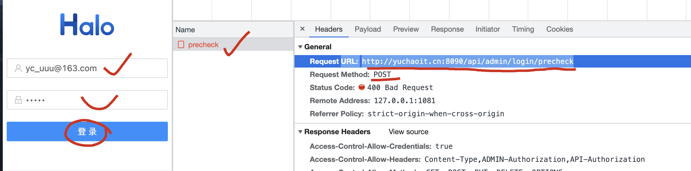</p>
<h1 id="&#x603B;&#x7ED3;&#xFF08;&#x9762;&#x8BD5;&#x80CC;&#x8BF5;&#xFF09;"><a name="&#x603B;&#x7ED3;&#xFF08;&#x9762;&#x8BD5;&#x80CC;&#x8BF5;&#xFF09;" class="plugin-anchor" href="#&#x603B;&#x7ED3;&#xFF08;&#x9762;&#x8BD5;&#x80CC;&#x8BF5;&#xFF09;"><i class="fa fa-link" aria-hidden="true"></i></a>&#x603B;&#x7ED3;&#xFF08;&#x9762;&#x8BD5;&#x80CC;&#x8BF5;&#xFF09;</h1>
<p>&#x4E00;&#x4E2A;url&#x5728;&#x6D4F;&#x89C8;&#x5668;&#x56DE;&#x8F66;&#x4E4B;&#x540E;&#xFF0C;&#x53D1;&#x751F;&#x4E86;&#x4EC0;&#x4E48;</p>
<pre><code>1.dns&#x7BC7;
&#x7528;&#x6237;&#x8BBF;&#x95EE;&#x57DF;&#x540D;www.yuchaoit.cn
&#x2193;
&#x6D4F;&#x89C8;&#x5668;&#x8DF3;&#x8F6C;
&#x2193;
&#x6D4F;&#x89C8;&#x5668;&#x7F13;&#x5B58;&#xFF08;disk cache&#xFF09;
&#x2193;
Hosts&#x6587;&#x4EF6;
&#x2193;
&#x672C;&#x5730;DNS&#x670D;&#x52A1;&#x5668;&#xFF08;&#x9012;&#x5F52;&#x67E5;&#x8BE2; &gt; &#x8FED;&#x4EE3;&#x67E5;&#x8BE2;&#xFF09;
&#x2193;
client &#x5411; server&#x53D1;&#x8D77;&#x67E5;&#x8BE2;&#xFF08;&#x9012;&#x5F52;&#x67E5;&#x8BE2;&#xFF09;
server &#x5411; server&#x53D1;&#x8D77;&#x67E5;&#x8BE2;&#xFF08;&#x8FED;&#x4EE3;&#x67E5;&#x8BE2;&#xFF09;


2.TCP/IP&#x534F;&#x8BAE;&#x7BC7;&#xFF08;&#x4E09;&#x6B21;&#x63E1;&#x624B;&#xFF09;
client &gt; SYN&#x62A5;&#x6587;&#xFF0C;&#x8BF7;&#x6C42;&#x8FDE;&#x63A5; 
server &gt; SYN&#xFF0C;ACK&#x62A5;&#x6587; &#x54CD;&#x5E94;client
client  &gt; ACK&#xFF0C;&#x5EFA;&#x7ACB;&#x8FDE;&#x63A5; 


3.&#x5BA2;&#x6237;&#x7AEF;&#x53D1;&#x8D77;http&#x8BF7;&#x6C42;
- &#x8BF7;&#x6C42;&#x65B9;&#x6CD5;&#x662F;&#x4EC0;&#x4E48;&#x3001;get&#x3001;post&#x3001;delete
- &#x8BF7;&#x6C42;&#x4E3B;&#x673A;&#x662F;&#x4EC0;&#x4E48;&#x3001;www.yuchaoit.cn
- &#x8BF7;&#x6C42;&#x8D44;&#x6E90;&#x662F;&#x4EC0;&#x4E48; &#x3001; http://yuchaoit.cn:8090/upload/2022/05/Xnip2022-05-01_16-32-30-b82235c9b62c42af8ea25e0313ca42f7.jpg
- &#x8BF7;&#x6C42;&#x7AEF;&#x53E3;&#x662F;&#x4EC0;&#x4E48;&#x3001;&#x9ED8;&#x8BA4;http&#x662F;80&#x3001;https&#x662F;443
- &#x8BF7;&#x6C42;&#x53C2;&#x6570;&#x662F;&#x4EC0;&#x4E48;&#x3001;&#x8BF7;&#x6C42;&#x5934;&#x90E8;&#x4FE1;&#x606F;&#xFF08;&#x8D44;&#x6E90;&#x7C7B;&#x578B;&#x3001;&#x662F;&#x5426;&#x538B;&#x7F29;&#x3001;cookie&#x3001;&#x6D4F;&#x89C8;&#x5668;&#x5BA2;&#x6237;&#x7AEF;&#x7B49;&#xFF09;
- &#x8BF7;&#x6C42;&#x4FE1;&#x606F;&#x6700;&#x540E;&#x7684;&#x6362;&#x884C;

4.&#x670D;&#x52A1;&#x7AEF;&#x54CD;&#x5E94;&#x7684;&#x5185;&#x5BB9;
- server&#x4FE1;&#x606F;&#xFF08;web&#x670D;&#x52A1;&#x5668;&#x8F6F;&#x4EF6;&#x7C7B;&#x578B;&#xFF09;
- &#x54CD;&#x5E94;&#x6587;&#x4EF6;&#x7C7B;&#x578B;
- &#x54CD;&#x5E94;&#x5934;&#x90E8;&#x4FE1;&#x606F;&#xFF08;&#x662F;&#x5426;&#x538B;&#x7F29;&#xFF0C;&#x8BED;&#x8A00;&#x7F16;&#x7801;&#xFF0C;&#x662F;&#x5426;&#x4FDD;&#x6301;&#x8FDE;&#x63A5;&#x7B49;&#xFF09;

5.&#x5BA2;&#x6237;&#x7AEF;&#x53D1;&#x8D77;TCP&#x56DB;&#x6B21;&#x6325;&#x624B;&#x65AD;&#x5F00;&#x8FDE;&#x63A5;&#x3002;
client &gt; &#x53D1;&#x8D77;&#x65AD;&#x5F00;&#x8BF7;&#x6C42; FIN=1 
server  &gt; &#x54CD;&#x5E94;&#x65AD;&#x5F00;   FIN&#x3001;ACK
server  &gt; &#x53D1;&#x8D77;&#x65AD;&#x5F00;&#x8BF7;&#x6C42; FIN=1
client &gt; &#x786E;&#x8BA4;&#x65AD;&#x5F00;&#x8FDE;&#x63A5; ACK
</code></pre><footer class="page-footer"><span class="copyright">Copyright &#xA9; www.bikongge.com 2024 all right reserved&#xFF0C;powered by Gitbook</span><span class="footer-modification">&#x4F5C;&#x8005;&#xFF1A;&#x733F;&#x6765;&#x6559;&#x80B2;
2024-05-11 17:46:35
</span></footer>
<script>console.log("plugin-popup....");document.onclick = function(e){ e.target.tagName === "IMG" && window.open(e.target.src,e.target.src)}</script><style>img{cursor:pointer}</style>
                                
                                </section>
                            
    </div>
    <div class="search-results">
        <div class="has-results">
            
            <h1 class="search-results-title"><span class='search-results-count'></span> results matching "<span class='search-query'></span>"</h1>
            <ul class="search-results-list"></ul>
            
        </div>
        <div class="no-results">
            
            <h1 class="search-results-title">No results matching "<span class='search-query'></span>"</h1>
            
        </div>
    </div>
</div>

                        </div>
                    </div>
                
            </div>

            

        
    </div>

    <script>
        var gitbook = gitbook || [];
        gitbook.push(function() {
            gitbook.page.hasChanged({"page":{"title":"22-web通信协议篇","level":"1.4.18","depth":2,"next":{"title":"23-1-nginx虚拟主机实战","level":"1.4.19","depth":2,"path":"03-网站集群架构/23-1-nginx虚拟主机实战.md","ref":"03-网站集群架构/23-1-nginx虚拟主机实战.md","articles":[]},"previous":{"title":"21-静态资源加速cdn篇","level":"1.4.17","depth":2,"path":"03-网站集群架构/21-静态资源加速cdn篇.md","ref":"03-网站集群架构/21-静态资源加速cdn篇.md","articles":[]},"dir":"ltr"},"config":{"gitbook":"*","theme":"default","variables":{},"plugins":["anchors","theme-comscore","theme-api","hide-element","-highlight","advanced-emoji","-lunr","-search","search-pro","page-toc-button","back-to-top-button","chapter-fold","code","splitter","-lunr","-search","search-pro","insert-logo","custom-favicon","pageview-count","tbfed-pagefooter","popup","-sharing","sharing-plus"],"pluginsConfig":{"tbfed-pagefooter":{"copyright":"Copyright &copy www.bikongge.com 2024","modify_label":"作者：猿来教育"},"chapter-fold":{},"splitter":{},"search-pro":{},"sharing-plus":{"qq":false,"all":["facebook","google","twitter","instapaper","linkedin","pocket","stumbleupon"],"douban":false,"facebook":true,"weibo":false,"instapaper":false,"whatsapp":false,"hatenaBookmark":false,"twitter":true,"messenger":false,"line":false,"vk":false,"pocket":true,"google":false,"viber":false,"stumbleupon":false,"qzone":false,"linkedin":false},"popup":{},"code":{"copyButtons":true},"hide-element":{"elements":[".gitbook-link"]},"fontsettings":{"theme":"white","family":"sans","size":2},"favicon":"./icon/book.ico","theme-comscore":{},"page-toc-button":{},"theme-api":{"languages":[{"lang":"python","name":"python","default":true},{"lang":"python","name":"python"}],"split":true,"theme":"light"},"back-to-top-button":{},"pageview-count":{},"custom-favicon":{},"advanced-emoji":{"embedEmojis":false},"sharing":{"qq":true,"all":["douban","facebook","google","instapaper","linkedin","twitter","weibo","messenger","qq","qzone","viber","whatsapp"],"douban":true,"facebook":true,"weibo":true,"twitter":true,"pocket":true,"google":true,"qzone":true},"theme-default":{"styles":{"website":"styles/website.css","pdf":"styles/pdf.css","epub":"styles/epub.css","mobi":"styles/mobi.css","ebook":"styles/ebook.css","print":"styles/print.css"},"showLevel":false},"anchors":{},"insert-logo":{"style":"background: none; max-height: 100px; min-height: 100px","url":"https://s1.ax1x.com/2022/10/25/xRowNj.jpg"}},"structure":{"langs":"LANGS.md","readme":"README.md","glossary":"GLOSSARY.md","summary":"SUMMARY.md"},"pdf":{"pageNumbers":true,"fontSize":12,"fontFamily":"Arial","paperSize":"a4","chapterMark":"pagebreak","pageBreaksBefore":"/","margin":{"right":62,"left":62,"top":56,"bottom":56}},"styles":{"website":"styles/website.css","pdf":"styles/pdf.css","epub":"styles/epub.css","mobi":"styles/mobi.css","ebook":"styles/ebook.css","print":"styles/print.css"}},"file":{"path":"03-网站集群架构/22-web通信协议篇.md","mtime":"2024-05-11T09:46:35.306Z","type":"markdown"},"gitbook":{"version":"3.2.3","time":"2024-05-17T07:32:03.155Z"},"basePath":"..","book":{"language":""}});
        });
    </script>
</div>

        
    <script src="../gitbook/gitbook.js"></script>
    <script src="../gitbook/theme.js"></script>
    
        
        <script src="../gitbook/gitbook-plugin-hide-element/plugin.js"></script>
        
    
        
        <script src="../gitbook/gitbook-plugin-search-pro/jquery.mark.min.js"></script>
        
    
        
        <script src="../gitbook/gitbook-plugin-search-pro/search.js"></script>
        
    
        
        <script src="../gitbook/gitbook-plugin-page-toc-button/plugin.js"></script>
        
    
        
        <script src="../gitbook/gitbook-plugin-back-to-top-button/plugin.js"></script>
        
    
        
        <script src="../gitbook/gitbook-plugin-chapter-fold/chapter-fold.js"></script>
        
    
        
        <script src="../gitbook/gitbook-plugin-code/plugin.js"></script>
        
    
        
        <script src="../gitbook/gitbook-plugin-splitter/splitter.js"></script>
        
    
        
        <script src="../gitbook/gitbook-plugin-insert-logo/plugin.js"></script>
        
    
        
        <script src="../gitbook/gitbook-plugin-pageview-count/plugin.js"></script>
        
    
        
        <script src="../gitbook/gitbook-plugin-sharing-plus/buttons.js"></script>
        
    
        
        <script src="../gitbook/gitbook-plugin-fontsettings/fontsettings.js"></script>
        
    
        
        <script src="../gitbook/gitbook-plugin-theme-comscore/test.js"></script>
        
    
        
        <script src="../gitbook/gitbook-plugin-theme-api/theme-api.js"></script>
        
    

    </body>
</html>

